MyCircuit 10.0 사용 설명서
회로도 작성 · PCB 레이아웃 · 자동 배선 · 3D 보기 · 회로 시뮬레이션 · 거버/드릴/BOM 제조 출력을 한 창에서 처리하는 전자 회로 설계 프로그램
Windows · macOS · Linux 데스크톱 앱과 웹 브라우저에서 똑같이 동작합니다. 이 설명서는 프로그램 안에서 (F1)로 열 수 있고, 브라우저에서 직접 열어도 됩니다(웹 버전의 설명서 창에는 브라우저에서 열기 버튼이 있습니다. 데스크톱 앱에서는 설명서가 앱 안에 들어 있어 이 버튼이 없습니다).
이 설명서를 읽는 방법처음이라면 3장 빠른 시작 튜토리얼을 따라 LED 회로를 한 번 끝까지 만들어 보세요. 회로도 → PCB → 3D → 시뮬레이션 → 거버 출력까지 15분이면 전체 흐름을 익힐 수 있습니다. 특정 기능이 궁금하면 왼쪽 목차의 검색 칸에 단어(예: “비아”, “ERC”, “거버”)를 입력하세요. 단축키는 16장, 오류 메시지의 의미는 5장(ERC)과 9장(DRC)에 모두 정리되어 있습니다.
1소개와 설치
1.1MyCircuit이란
MyCircuit은 KiCad와 비슷한 작업 흐름을 가진 전자 회로 설계(EDA) 프로그램입니다. 하나의 프로젝트 파일(.mycircuit) 안에 회로도, PCB, 프로젝트 전용 부품 라이브러리, 시뮬레이션 설정이 모두 들어 있어서 파일 하나만 주고받으면 어디서든 그대로 열립니다.
| 기능 영역 | 할 수 있는 일 |
|---|---|
| 회로도 편집기 | 부품 배치, 직교 배선(자동 정션·자동 종료), 넷 레이블/글로벌 레이블/계층 레이블, 전원 포트, 버스와 벡터 레이블(D[0..7]), 연결 없음 플래그, 텍스트, 고무줄(rubber-band) 드래그, 회전/대칭, 복사/붙여넣기, 참조 번호 자동 부여, 실시간 ERC, 여러 페이지와 계층 시트, 다중 유닛 부품, 측정과 치수선 |
| PCB 편집기 | 2/4/6층 기판, 풋프린트 배치·회전·뒤집기·잠금, 45° 대화형 배선(실시간 간격 검사, 충돌 표시/밀어내기/장애물에서 멈춤 모드), 비아와 층 전환, 넷 클래스, 구리 영역(써멀 릴리프·우선순위), 기판 외곽선, 실크 텍스트/선, 측정·치수, 보드 크기 자동 표시, 래츠네스트, 길이 맞춤(미앤더), 차동 쌍 배선 |
| 자동 배선기 | A* 미로 탐색 기반 자동 배선(바깥 2층 또는 모든 구리 레이어), 실패 연결 우선 재시도(rip-up and retry) |
| 화면 조작 | 빈 곳 드래그로 화면 이동, Shift+드래그 상자 선택, 손(이동) 도구, 5×5 선 그리드, 위·왼쪽 눈금자(mm/mil) |
| 검사 | ERC 12종, DRC 18종(간격, 단락, 가장자리, 홀 간격, 애뉼러 링, 코트야드, 미배선 …) |
| 3D 보기 | three.js 기반 실시간 3D 기판·부품 모델, 7가지 시점, 5×5 그리드·눈금 있는 X/Y/Z 좌표축·방향 표시기·보드 치수(cm/inch), X-ray, PNG 스크린샷, STL/GLB 내보내기 |
| 시뮬레이션 | SPICE 방식 MNA + 뉴턴-랩슨 엔진: 동작점(DC), 과도 해석, AC(보드 선도), DC 스윕, 회로도 위 전압 표시, SPICE 넷리스트 내보내기 |
| 출력 | 인쇄(미리 보기·1:1·흑백·PDF), 회로도 SVG/PNG, PCB SVG, KiCad 넷리스트, SPICE, BOM, 픽앤플레이스, 거버 X2 + Excellon 드릴 + IPC-356 + 작업 파일 ZIP, 내장 거버 뷰어 |
| 도구 | 심볼 편집기, 풋프린트 마법사, 풋프린트 지정, 계산기(색 코드, LED/옴, 분압기, 트랙 폭, 555/RC, 단위), KiCad 프로젝트 가져오기 |
| 사용 편의 | 40가지 테마(다크 20 + 라이트 20)와 사용자 테마, 한국어/영어, 9개 탭의 설정 창, 14개 레슨의 대화형 튜토리얼(보기·따라 하기) |
1.2시스템 요구 사항
- 데스크톱: Windows 10/11 64비트, macOS(Intel/Apple Silicon), 최신 64비트 Linux 배포판. 창의 최소 크기는 1024 × 700 픽셀이며, 처음에는 1440 × 900으로 열립니다.
- 웹: ES 모듈과 WebGL을 지원하는 최신 Chrome, Edge, Firefox, Safari. 반드시 HTTP 서버를 통해 열어야 합니다(1.6 참고).
- 소스에서 실행/빌드: Node.js 22 이상,
npm install. - 3D 보기에는 WebGL이 필요합니다. WebGL을 쓸 수 없으면 3D 탭에 “3D 보기를 사용할 수 없습니다”라는 안내가 나오고 나머지 기능은 그대로 동작합니다.
1.3Windows 설치
Windows용 설치 프로그램은 MyCircuit-Setup-10.0.0.exe(NSIS, 64비트)입니다. 실행하면 다음 순서로 진행됩니다.
- 언어 선택 — 설치 마법사의 언어를 한국어 또는 English 중에서 고릅니다. 아래 질문 상자들도 이 언어로 표시됩니다.
- 기존 설치 제거 — 이미 MyCircuit이 설치되어 있으면 “이미 설치된 MyCircuit 가 있습니다. 이 버전을 설치하기 전에 기존 프로그램을 완전히 삭제합니다.”라는 안내가 나옵니다. 확인을 누르면 기존 프로그램의 제거 프로그램을 조용히 실행해 완전히 지운 뒤 새로 설치합니다(같은 버전을 다시 설치해도 모든 파일이 확실히 바뀝니다). 취소를 누르면 설치를 그만둡니다. 사용자 데이터를 지울지는 다음 단계에서 따로 묻습니다.
- 이전 데이터 삭제 질문 —
%APPDATA%\MyCircuit폴더가 있으면 “이미 설치한 프로그램에서 저장한 데이터(설정, 자동 저장)가 있습니다. 삭제하시겠습니까?”라고 묻습니다. 예를 누르면 설정(settings.json)과 창의 Local Storage(자동 저장 복구본 포함)가 모두 지워져 처음 설치한 상태가 됩니다. 프로젝트 파일(.mycircuit)은 이 폴더에 저장되지 않으므로 지워지지 않습니다. - 설치 위치 선택 — 원클릭 설치가 아니므로 설치 폴더를 바꿀 수 있습니다. 기본은 현재 사용자용 설치이며, 필요하면 관리자 권한으로 올려 설치할 수 있습니다.
- 바로 가기와 파일 연결 — 바탕 화면과 시작 메뉴에 “MyCircuit” 바로 가기가 만들어지고,
.mycircuit파일이 MyCircuit 문서 아이콘과 함께 연결됩니다. 탐색기에서 프로젝트 파일을 더블클릭하면 MyCircuit에서 열립니다.
MyCircuit은 사용자 데이터 폴더마다 하나만 실행됩니다. 이미 실행 중일 때 다른 .mycircuit 파일을 더블클릭하면 새 창이 뜨지 않고, 실행 중인 창이 앞으로 나와 그 파일을 엽니다(저장하지 않은 변경 내용이 있으면 먼저 저장할지 묻습니다).
제거: 또는 제어판에서 MyCircuit을 제거합니다. 제거해도 %APPDATA%\MyCircuit의 설정은 남습니다(다음 설치 때 지울지 물어봅니다).
1.4macOS 설치
macOS용으로는 MyCircuit-10.0.0-<arch>.dmg와 .zip이 만들어집니다. dmg를 열고 MyCircuit을 응용 프로그램 폴더로 끌어 놓으세요.
macOS 빌드는 코드 서명이 되어 있지 않습니다. 처음 실행할 때 “확인되지 않은 개발자” 경고가 나오면 Finder에서 앱을 Control-클릭 → 열기로 한 번 열면 다음부터는 바로 실행됩니다.
macOS에서는 창 왼쪽 위에 신호등 버튼이 그대로 표시되고, 단축키의 Ctrl은 ⌘ Cmd로도 동작합니다(앱이 ctrlKey와 metaKey를 똑같이 취급합니다). Finder에서 .mycircuit 파일을 앱 아이콘으로 끌어 놓거나 더블클릭해도 열립니다.
1.5Linux 설치
| 패키지 | 설치 방법 |
|---|---|
MyCircuit-10.0.0-x86_64.AppImage | 설치가 필요 없습니다. chmod +x MyCircuit-*.AppImage 후 실행합니다. |
.deb (Debian/Ubuntu) | sudo apt install ./MyCircuit-10.0.0-amd64.deb — 메뉴의 “Development / Electronics” 분류에 등록되고 application/x-mycircuit 형식이 연결됩니다. |
.tar.gz | 원하는 곳에 압축을 풀고 MyCircuit 실행 파일을 실행합니다. |
1.6웹 버전 실행
웹 버전은 데스크톱 앱과 똑같은 파일(번들러 없이 순수 ES 모듈)을 브라우저에서 실행합니다.
npm run serve # 프로젝트 폴더를 http://localhost:8642 로 서비스
npm run build:web # dist/web/ 에 웹 배포본 생성
npm run serve -- dist/web # 만든 배포본을 서비스
PORT=9000 npm run serve # 다른 포트 사용index.html을 파일 탐색기에서 더블클릭해 file://로 열면 ES 모듈이 로드되지 않아 동작하지 않습니다. 반드시 위처럼 HTTP 서버로 여세요. dist/web은 아무 정적 웹 서버(nginx, GitHub Pages 등)에 그대로 올려도 됩니다.
웹 버전과 데스크톱 버전의 차이:
| 항목 | 데스크톱 | 웹 |
|---|---|---|
| 열기 | 운영체제 파일 대화상자 | 브라우저 파일 선택 창(또는 창에 파일 끌어 놓기) |
| 저장 | 경로를 기억해 Ctrl+S는 대화상자 없이 덮어씀 | 브라우저가 지원하면 “다른 이름으로 저장” 선택 창, 아니면 다운로드 폴더로 내려받기(매번 새 파일) |
| 최근 파일 | 있음(경로 기준, 최대 10개) | 없음(브라우저는 파일 경로를 알려 주지 않음) |
| 인쇄 | 시스템 인쇄 대화상자 + PDF로 저장… | 브라우저 인쇄(PDF로 저장은 브라우저 인쇄 대화상자에서 선택) |
| 설정 | settings.json | 브라우저 localStorage의 mycircuit.settings |
| 창 닫기 확인 | “저장하지 않은 변경 내용” 대화상자 | 브라우저의 “페이지를 떠나시겠습니까?” 확인 |
| 끝내기 메뉴 | 있음(Alt+F4) | 비활성 |
1.7소스에서 실행하고 빌드하기
| 명령 | 설명 |
|---|---|
npm start | 데스크톱 앱 실행 (scripts/start.mjs가 ELECTRON_RUN_AS_NODE 환경 변수를 지우고 Electron을 띄움) |
npm test | 단위 테스트 전체 실행 (npm test -- sim drc처럼 이름 일부로 거를 수 있음) |
npm run dist:win / dist:mac / dist:linux | 각 OS용 설치 파일을 release/에 만들고 프로젝트 루트에도 복사 |
npm run build:all | 웹 빌드 + 세 OS 패키지 |
npm run build:art (= build:icons), build:installer | 프로그램 아이콘(위에서 내려다본 회로 기판 그림, scripts/art/art.js)과 NSIS 파일 연결 스크립트 생성 |
node scripts/build-info.mjs | 버전·커밋·빌드 날짜를 src/buildinfo.js에 기록(정보 창에 표시, npm start와 각 빌드가 자동 실행, Git에는 넣지 않음) |
VS Code 같은 Electron 기반 터미널은 ELECTRON_RUN_AS_NODE=1을 물려주는 경우가 있습니다. 이 상태에서 electron .을 직접 실행하면 앱이 아무 말 없이 종료됩니다. npm start를 쓰거나 변수를 지운 뒤 실행하세요(빈 값으로 두는 것만으로는 안 되고, 변수 자체를 없애야 합니다).
1.8설정과 데이터가 저장되는 곳
| OS | 설정 파일 (settings.json) | 자동 저장 복구본 |
|---|---|---|
| Windows | %APPDATA%\MyCircuit\settings.json | 같은 폴더의 창 Local Storage (mycircuit.autosave) |
| macOS | ~/Library/Application Support/MyCircuit/settings.json | |
| Linux | ~/.config/MyCircuit/settings.json | |
| 웹 | 브라우저 localStorage → mycircuit.settings | localStorage → mycircuit.autosave, mycircuit.autosave.at |
명령줄에 --user-data-dir=<폴더>를 주면 그 폴더를 사용자 데이터 폴더로 씁니다(테스트용으로 설정을 분리할 때 유용합니다). 설정 파일에 저장되는 항목은 17장에 정리되어 있습니다.
1.9처음 실행
처음 실행하면 운영체제 언어가 한국어이면 한국어, 그 밖에는 영어로 시작하고, 잠시 뒤 MyCircuit 10.0에 오신 것을 환영합니다 대화상자가 나타납니다. 네 단계(회로도 그리기 → 기판으로 보내기 → 배치 및 배선 → 3D 확인·시뮬레이션·제조)를 요약해 보여 주며, 세 개의 버튼이 있습니다.
- 예제 열기 — 예제 프로젝트 선택 창을 엽니다.
- 새 프로젝트 시작 — 빈 프로젝트를 만들고 회로도 탭으로 갑니다.
- 확인 — 대화상자를 닫습니다.
어느 버튼을 누르든 다시는 자동으로 나타나지 않습니다(설정 → 일반의 시작할 때 환영 창 보이기를 켜면 매번 나타납니다). 나중에 다시 보려면 를 고르세요. 기본 테마는 미드나이트(어두운 테마)입니다. 설정 → 일반의 시작할 때를 마지막 프로젝트 다시 열기로 바꾸면 데스크톱에서 마지막으로 연 파일이 바로 열립니다. 처음이라면 (2.16)도 권합니다.
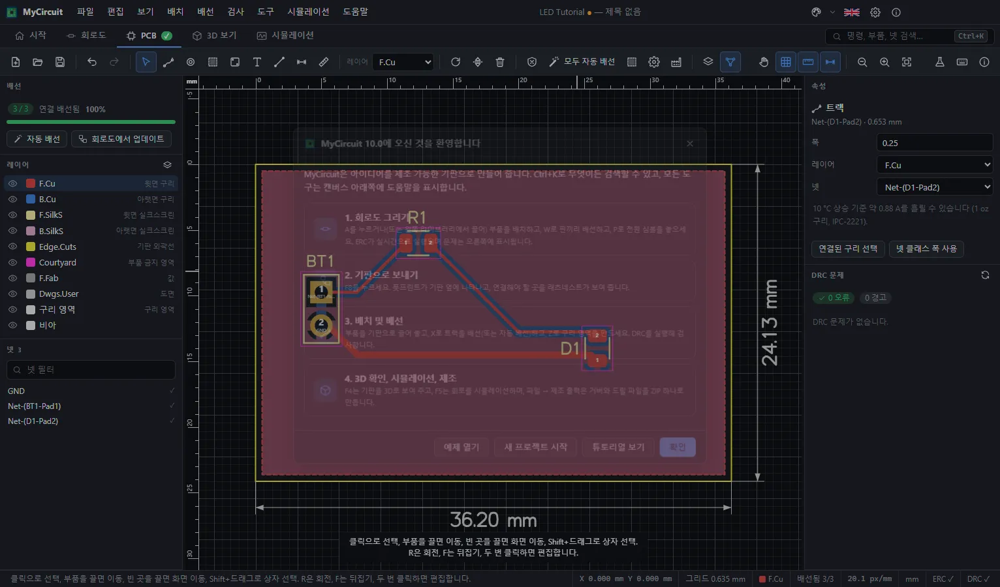
이전에 저장하지 않고 종료한 작업이 있으면(자동 저장이 켜져 있을 때) 시작할 때 작업 복구 대화상자가 “○○에 저장되지 않은 프로젝트를 복구했습니다. 복원하시겠습니까?”라고 묻습니다. 복원을 누르면 그 프로젝트가 “변경됨” 상태로 열리고, 버리기를 누르면 복구본이 삭제됩니다. 자세한 내용은 2.12를 보세요.
2화면 구성
2.1전체 모습
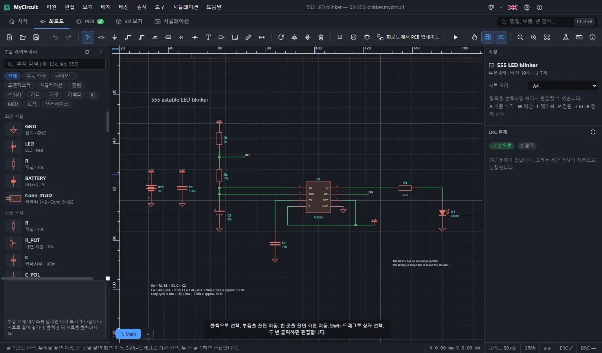
| 위치 | 영역 | 설명 |
|---|---|---|
| 맨 위 줄 | 타이틀 바 | 앱 로고, 메뉴 막대(파일·편집·보기·배치·배선·검사·도구·시뮬레이션·도움말), 가운데의 문서 제목, 오른쪽의 팔레트(무작위 테마)와 ▾(테마 목록), 국기(언어 전환), 설정, 정보 버튼. 데스크톱에서는 이 줄을 끌어 창을 옮깁니다. |
| 둘째 줄 | 문서 탭 | 시작 · 회로도 · PCB · 3D 보기 · 시뮬레이션 탭과 오른쪽 끝의 명령 팔레트 검색 칸 |
| 셋째 줄 | 도구 모음 | 현재 탭에 맞는 도구와 명령. 버튼 위에 마우스를 올리면 이름과 단축키가 나옵니다. 오른쪽 끝에는 대화형 튜토리얼·단축키·정보 버튼이 있습니다. 도구 모음 버튼은 절대 숨겨지지 않습니다(2.4). |
| 왼쪽 | 왼쪽 패널 | 회로도: 부품 라이브러리 / PCB: 배선 진행률·레이어·넷 / 3D: 보기 옵션 / 시뮬레이션: 프로브 |
| 가운데 | 캔버스 | 편집 영역. 아래쪽에 현재 도구의 사용법이 7초 동안 떠 있다가 서서히 사라집니다(같은 내용이 상태 표시줄에 계속 남습니다). 회로도 탭에서는 캔버스 왼쪽 아래에 페이지 탭(1. Main, +)이 있습니다(4.21). |
| 오른쪽 | 오른쪽 패널 | 선택한 항목의 속성(인스펙터)과 ERC/DRC 문제 목록 |
| 맨 아래 | 상태 표시줄 | 도움말 문장, 커서 좌표, 그리드, 확대율, 활성 레이어, 배선 진행, 단위, ERC/DRC 상태 |
왼쪽·오른쪽 패널과 캔버스 사이의 경계선(스플리터)을 끌면 패널 폭을 200~520픽셀 사이에서 바꿀 수 있고, 폭은 설정에 저장됩니다. Ctrl+1은 왼쪽 패널, Ctrl+2는 오른쪽 패널을 숨기거나 보입니다. 시작 탭에서는 두 패널이 모두 숨겨지고, 시뮬레이션 탭에서는 오른쪽 패널이 숨겨집니다.
2.2메뉴 막대
메뉴 이름을 클릭하면 메뉴가 열리고, 메뉴가 열린 상태에서 다른 메뉴 이름 위로 마우스를 옮기면 그 메뉴로 바뀝니다. 각 항목 오른쪽에 단축키가 표시되고, 지금 쓸 수 없는 항목(예: PCB 탭에서의 잘라내기)은 흐리게 표시됩니다. 체크 표시가 있는 항목은 켜고 끄는 설정입니다.
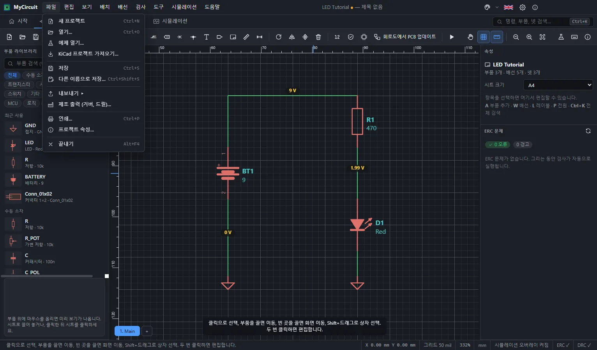
| 메뉴 | 항목 |
|---|---|
| 새 프로젝트(Ctrl+N) · 열기…(Ctrl+O) · 예제 열기… · 최근 파일 열기 ▸(최근 파일이 있을 때) · KiCad 프로젝트 가져오기…(13.9) · 저장(Ctrl+S) · 다른 이름으로 저장…(Ctrl+Shift+S) · 내보내기 ▸ · 제조 출력 (거버, 드릴)… · 인쇄…(Ctrl+P) · 프로젝트 속성… · 끝내기(Alt+F4, 데스크톱만) | |
| 실행 취소(Ctrl+Z) · 다시 실행(Ctrl+Y) · 실행 취소 기록… · 잘라내기/복사/붙여넣기(회로도에서만) · 복제(Ctrl+D) · 삭제(Del) · 모두 선택(Ctrl+A) · 찾기…(Ctrl+F) · 회전(R) · 좌우 대칭(Y) · 상하 대칭(X) · 반대 면으로 뒤집기(F, PCB에서만) | |
| 시작 페이지 · 회로도 편집기(F2) · PCB 편집기(F3) · 3D 뷰어(F4) · 시뮬레이션(F6) · 확대(Ctrl+=) · 축소(Ctrl+-) · 화면에 맞추기(Home) · 이동(손) · 그리드 표시 · 눈금자 표시 · 보드 크기 표시 · 라이브러리 / 레이어 패널 표시(Ctrl+1) · 속성 패널 표시(Ctrl+2) · 래츠네스트 표시 · 고대비 레이어(H) · 회로도에 시뮬레이션 전압 표시 | |
| 부품 추가(A) · 전원 포트(P) · 배선(W) · 버스(B) · 넷 레이블(L) · 글로벌 레이블(Ctrl+L) · 계층 레이블(H) · 계층 시트(S) · 연결 없음 플래그(Q) · 정션(J) · 텍스트(T) · 측정(M) · 치수(D) — 어느 탭에서 골라도 회로도 탭으로 전환됩니다. | |
| 트랙 배선(X) · 비아(V) · 구리 영역(Z) · 기판 외곽선(O) · 텍스트(T) · 그래픽 선(G) · 치수(D) · 측정(M) · 모두 자동 배선(Ctrl+Shift+A) · 강조된 넷 자동 배선 · 차동 쌍 배선… · 길이 맞춤… · 배선: 충돌 표시 / 배선: 밀어내기 / 배선: 장애물에서 멈춤(배선 모드, 하나만 체크) · 기판을 접지 영역으로 채우기 · 기판에 풋프린트 정렬 · 트랙 정리 · 모든 트랙과 비아 제거 — PCB 탭으로 전환됩니다. | |
| 전기 규칙 검사 (ERC) · 설계 규칙 검사 (DRC) · 넷 목록… · 넷 길이 보고서… | |
| 회로도 참조 번호 부여 · 모든 부품 참조 번호 다시 부여 · 풋프린트 지정… · 회로도에서 PCB 업데이트(F8) · 기판 설정… · 심볼 편집기… · 풋프린트 마법사… · 부품표(BOM)… · 거버 뷰어… · 계산기… · 설정…(Ctrl+,) | |
| 시뮬레이션 실행(F5) · 동작점 (DC) · 과도 해석 · AC 해석 (보드 선도) · DC 스윕 · SPICE 넷리스트 보기… · 시뮬레이션 오버레이 지우기 | |
| 대화형 튜토리얼 · 사용 설명서(F1) · 단축키(Ctrl+/) · 빠른 둘러보기 · MyCircuit 정보 |
를 고르면 검색 가능한 목록이 열립니다: 회로도를 SVG로 / PNG로, PCB를 SVG로, 넷리스트 (KiCad), SPICE 넷리스트, BOM (CSV), 픽앤플레이스 (CSV), 제조 출력, 3D 모델 (STL / GLB). 각 항목은 13장에서 설명합니다.
2.3문서 탭과 배지
문서 탭은 한 프로젝트의 다섯 가지 화면입니다. 탭을 바꿔도 프로젝트는 하나이므로, 회로도에서 고친 내용은 PCB 업데이트(F8) 후 기판에, 기판에서 고친 내용은 곧바로 3D에 반영됩니다.
| 탭 | 단축키 | 탭 옆의 배지 |
|---|---|---|
| 시작 | — | 없음 |
| 회로도 | F2 | 빨간 숫자 = ERC 오류 개수, 노란 숫자 = (오류가 없을 때) ERC 경고 개수 |
| PCB | F3 | 빨간 숫자 = DRC 오류 개수, 노란 숫자 = 배선되지 않은 연결 수, 초록 ✓ = 모든 연결이 배선됨 |
| 3D 보기 | F4 | 없음 |
| 시뮬레이션 | F6 | 없음 |
회로도에서 배선 중이거나 PCB에서 트랙을 배선하는 도중에 탭을 바꾸면 진행 중인 배선이 그 자리에서 마무리됩니다.
2.4도구 모음
도구 모음의 왼쪽에는 항상 새로 만들기·열기·저장, 실행 취소·다시 실행이 있고, 오른쪽 끝에는 단축키 표 버튼이 있습니다. 가운데는 탭마다 다릅니다.
| 탭 | 도구 모음 버튼(왼쪽부터) |
|---|---|
| 시작 | 예제 열기 · 회로도 편집기 · PCB 편집기 · 사용 설명서 |
| 회로도 | 선택 · 부품 추가 · 전원 포트 · 배선 · 버스 · 넷 레이블 · 글로벌 레이블 · 연결 없음 플래그 · 정션 · 텍스트 · 계층 레이블 · 계층 시트 · 측정 · 치수 | 회전 · 좌우 대칭 · 상하 대칭 · 삭제 | 참조 번호 부여 · ERC · 풋프린트 지정 · 회로도에서 PCB 업데이트 | 시뮬레이션 실행 | (오른쪽) 이동(손) · 그리드 표시 · 눈금자 표시 | 축소 · 확대 · 화면에 맞추기 |
| PCB | 선택 · 트랙 배선 · 비아 · 구리 영역 · 기판 외곽선 · 텍스트 · 그래픽 선 · 치수 · 측정 | 레이어 선택 상자 | 회전 · 뒤집기 · 삭제 | DRC · 모두 자동 배선 · 접지 영역 채우기 · 기판 설정 · 제조 출력 | 고대비 · 래츠네스트 | (오른쪽) 이동(손) · 그리드 표시 · 눈금자 표시 · 보드 크기 표시 | 축소 · 확대 · 화면에 맞추기 |
| 3D 보기 | 회전 · 이동(P) 탐색 모드 | 등각 · 위 · 아래 · 앞 · 뒤 · 왼쪽 · 오른쪽 | 부품 · 실크스크린 · 솔더 마스크 · 구리 영역 · X-ray 토글 | 그리드(G) · 좌표축(A) · 방향 표시기 · 보드 치수 · cm/inch 단위 버튼 · 화면에 맞추기 | 스크린샷 (PNG) · 3D 모델 내보내기 | PCB 편집기 |
| 시뮬레이션 | 시뮬레이션 실행 | 동작점 · 과도 해석 · AC · DC 스윕 | SPICE 넷리스트 보기 · SPICE 넷리스트 내보내기 | 회로도 편집기 · 시뮬레이션 오버레이 지우기 |
현재 선택된 도구 버튼은 강조되어 표시됩니다. 켜고 끄는 버튼(고대비, 래츠네스트, 3D 토글)은 켜져 있을 때 강조됩니다.
도구 모음 버튼은 절대 숨겨지지 않습니다. 데스크톱에서는 창의 최소 폭이 가장 넓은 도구 모음에 맞춰지므로 창을 줄여도 버튼이 잘리지 않습니다. 화면 자체가 도구 모음보다 좁으면 글자가 붙은 버튼(회로도에서 PCB 업데이트, 모두 자동 배선 등)이 아이콘만 남도록 줄어들고 — 마우스를 올리면 여전히 이름과 단축키가 나옵니다 — 그래도 넘치면 도구 모음이 두 줄로 나뉩니다. 웹 버전에서 브라우저 창이 좁을 때도 같습니다.
2.5왼쪽 패널
- 회로도 탭 — 부품 라이브러리: 검색 칸, 분류 칩(전체/수동 소자/다이오드/…), 최근 사용 부품, 분류별 부품 목록, 아래쪽 미리 보기. 머리글의 두 아이콘은 심볼 편집기와 전원 포트입니다. 사용법은 6.1.
- PCB 탭: 배선(배선된 연결 수/전체, 진행률 막대, 자동 배선·회로도에서 업데이트 버튼), 레이어(눈 아이콘으로 표시/숨김, 클릭해 활성 레이어 지정, 고대비 버튼), 넷(넷 필터와 넷별 미배선 수). 자세한 내용은 7.3, 7.13.
- 3D 탭: 표시 옵션 체크 상자와 기판 외관(솔더 마스크 색, 실크 색, 표면 처리, 두께), 부품·메시·삼각형 통계. 11장.
- 시뮬레이션 탭 — 프로브: 그래프에 그릴 넷 전압과 부품 전류의 체크 상자. 12.7.
2.6오른쪽 패널 (속성과 문제 목록)
위쪽 속성 패널은 선택한 항목을 바로 편집하는 인스펙터입니다. 값을 바꾸고 Enter를 누르거나 다른 곳을 클릭하면 적용되며, 하나의 실행 취소 단계가 됩니다.
- 아무것도 선택하지 않으면: 회로도는 프로젝트 제목·부품/배선/넷 개수·시트 크기, PCB는 기판 크기·층 수·풋프린트 수와 기본 트랙 폭·간격·비아 크기·비아 드릴·마스크 색·표면 처리를 보여 줍니다.
- 여러 개를 선택하면: 개수와 종류별 수, 그리고 회전·대칭(또는 뒤집기)·복제·삭제 버튼. PCB에서 트랙만 여러 개 선택하면 폭을 한꺼번에 바꿀 수 있습니다.
- 숫자 항목은 모두 스테퍼입니다 — 기판 규칙(기본 트랙 폭·간격·비아 크기·드릴), 풋프린트 X/Y/회전, 트랙 폭, 비아 지름/드릴, 구리 영역 간격/우선순위, 텍스트 크기 등. 왼쪽 −, 오른쪽 +, 값은 가운데. 한 번 누를 때마다 그 항목의 간격만큼 바뀌고 하나의 실행 취소 단계가 되며, 누르고 있으면 반복됩니다. 값을 클릭해 숫자를 직접 입력하고 Enter(또는 다른 곳 클릭)로 적용할 수도 있습니다.
- 한 개를 선택하면 종류에 맞는 항목이 나옵니다(부품, 레이블, 텍스트, 배선, 풋프린트, 트랙, 비아, 구리 영역, 기판 외곽선). 각 장에서 자세히 설명합니다.
아래쪽은 ERC 문제(회로도 탭) 또는 DRC 문제(PCB 탭) 목록입니다. 오류/경고 개수가 맨 위에 표시되고, 항목을 클릭하면 (문제가 다른 회로도 페이지에 있으면 그 페이지로 바꾼 뒤) 캔버스가 그 위치로 이동·확대하고 관련 항목을 선택하며 빨간 원이 퍼지는 애니메이션으로 위치를 알려 줍니다. 머리글의 새로 고침 버튼은 검사를 다시 실행합니다. 최대 400개까지 표시됩니다.
2.7상태 표시줄
| 칸 | 설명 |
|---|---|
| 도움말 | 현재 도구의 사용법(아무 도구도 아니면 “준비”) |
| X / Y | 커서 위치. 회로도는 단위가 mm이면 mm, mil이면 mil로, PCB는 mm 또는 mil로 표시 |
| 그리드 | 클릭하면 그리드 메뉴가 열립니다. 회로도: 10 / 25 / 50 / 100 mil, PCB: 0.05 / 0.1 / 0.127 / 0.25 / 0.5 / 0.635 / 1 / 1.27 / 2.54 mm |
| 확대율 | 회로도는 %, PCB는 px/mm |
| 활성 레이어 | (PCB) 레이어 색 견본과 이름 |
| 배선됨 | (PCB) 배선된 연결 / 전체 연결 |
| 단위 | mm 또는 mil — 클릭하면 전환 |
| 시뮬레이션 오버레이 켜짐 | (회로도) 동작점 전압이 표시 중일 때 |
| ERC ✓ / ✖ n | ERC 오류 개수. 클릭하면 ERC를 실행 |
| DRC — / ✓ / ✖ n | DRC 오류 개수(아직 실행 안 함은 —). 클릭하면 DRC를 실행 |
2.8명령 팔레트와 찾기
Ctrl+K 또는 탭 막대 오른쪽의 검색 칸을 누르면 명령 팔레트가 열립니다. 모든 명령(메뉴에 없는 것 포함), 회로도의 모든 부품(참조 번호·값·심볼·풋프린트), 모든 넷 이름을 한 곳에서 검색합니다.
- 단어를 여러 개 입력하면 모두 포함된 항목만 남습니다. 이름이 입력한 단어로 시작하는 항목이 위로 올라옵니다.
- ↑/↓로 고르고 Enter로 실행, Esc로 닫습니다. 마우스로 클릭해도 됩니다.
- 부품을 고르면 그 부품을 선택하고 화면 가운데로 옮깁니다(PCB 탭이면 기판에서, 아니면 회로도에서).
- 넷을 고르면 회로도와 PCB에서 그 넷을 강조합니다.
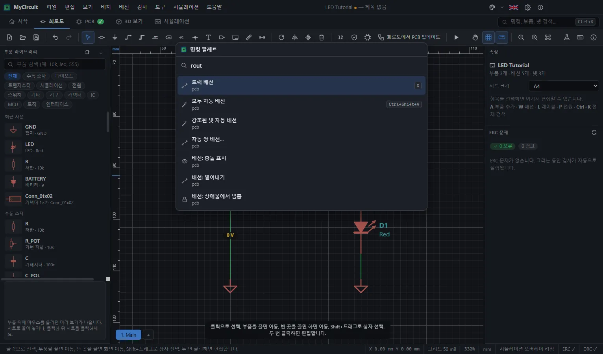
Ctrl+F()는 비슷한 창으로 부품, 넷 레이블, 텍스트, 넷만 찾습니다. 넷 항목에는 연결된 핀(예: R1.2, D1.2)이 함께 보입니다.
2.9캔버스 조작 (확대·이동)
회로도와 PCB 캔버스는 같은 방식으로 움직입니다. 기본 설정에서는 빈 곳을 왼쪽 버튼으로 끌면 화면이 움직이고, 상자 선택은 Shift(또는 Ctrl)를 누른 채 끕니다. 부품·배선 위에서 끌면 그 항목을 옮깁니다.
| 동작 | 방법 |
|---|---|
| 화면 이동(팬) | 빈 곳 왼쪽 드래그(기본값), 가운데 버튼 드래그, 오른쪽 버튼 드래그, Space를 누른 채 왼쪽 드래그, Shift+휠(가로 이동), 두 손가락 드래그 — 가운데·오른쪽·Space 드래그는 어떤 도구에서도 항상 이동입니다. |
| 상자 선택 | Shift+드래그 또는 Ctrl+드래그(왼쪽→오른쪽 = 완전히 포함된 것만, 오른쪽→왼쪽 = 걸친 것도, 4.2). 설정 → 단위와 그리드 → 빈 캔버스에서 왼쪽 드래그를 상자 선택으로 바꾸면 이전처럼 빈 곳 드래그가 상자 선택이 됩니다. |
| 손(이동) 도구 | 도구 모음 오른쪽의 손 모양 이동(손): 왼쪽 드래그로 화면 이동 버튼(). 켜져 있는 동안 왼쪽 드래그는 항목 위에서도 화면만 옮깁니다. Esc나 버튼을 다시 누르면 끝납니다. |
| 확대/축소 | 마우스 휠(커서 위치 기준), Ctrl+휠(트랙패드 핀치), Ctrl+= / Ctrl+-, 도구 모음 버튼, 두 손가락 핀치. 휠 한 칸의 확대 비율은 설정 → 단위와 그리드 → 휠 확대 속도(× 0.5 ~ × 3)로 조절합니다. |
| 화면에 맞추기 | Home — 회로도는 그린 내용(없으면 시트 전체), PCB는 기판과 모든 풋프린트 |
| 오른쪽 클릭 메뉴 | 움직이지 않고 오른쪽 버튼을 눌렀다 떼면 상황 메뉴가 열립니다(드래그하면 이동). |
창 크기를 바꾸거나 패널을 열고 닫아도 화면 가운데에 있던 내용이 가운데에 그대로 유지됩니다. 그리드와 눈금자는 2.13을 보세요.
2.10테마와 언어
타이틀 바 오른쪽에 테마와 언어 버튼이 있습니다.
- 팔레트 버튼(무작위 테마): 누를 때마다 40가지 테마 중 하나를 무작위로 적용하고 이름을 잠깐 알려 줍니다.
- ▾ 버튼(테마 선택): 다크 테마 20개, 라이트 테마 20개, 사용자 테마 목록이 세로로 나란히 나오는 창을 엽니다. 자세한 내용은 2.14.
- 국기 버튼(언어 전환): 한국어 화면에서는 영국 국기가, 영어 화면에서는 태극기가 보이며, 누르면 그 나라 말로 바뀝니다.
바꾸는 즉시 메뉴, 도구, 대화상자, 회로도·PCB·3D·그래프 색이 모두 바뀌고 설정에 저장됩니다. 데스크톱에서는 창 오른쪽 위의 최소화/최대화/닫기 버튼 색도 테마에 맞춰집니다.
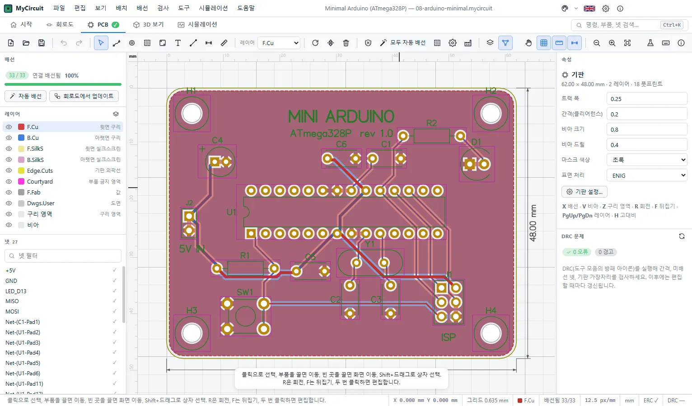
ERC/DRC 문제 목록의 메시지도 언어 설정을 따릅니다. 검사 엔진은 영어 문장을 만들고, 한국어 화면에서는 이를 한국어 문장으로 바꿔 보여 줍니다(예: “Track width 0.1 mm < minimum 0.15 mm” → “트랙 폭 0.1 mm < 최소 0.15 mm”). 메시지 아래의 작은 회색 글자(예: track_width · B.Cu)는 언어와 관계없는 검사 코드와 레이어이며, 5.4와 9.2의 표에서 찾아볼 수 있습니다.
2.11시작 페이지
시작 탭에는 빠른 작업(새 프로젝트, 프로젝트 열기…, 예제 둘러보기, 사용 설명서, 단축키), 최근 프로젝트(최대 8개, 데스크톱), 오늘의 팁, 그리고 예제 카드가 있습니다. 예제 카드에는 회로도 미리 보기 그림, 제목, 설명, 태그가 표시되며 클릭하면 그 예제가 열립니다.
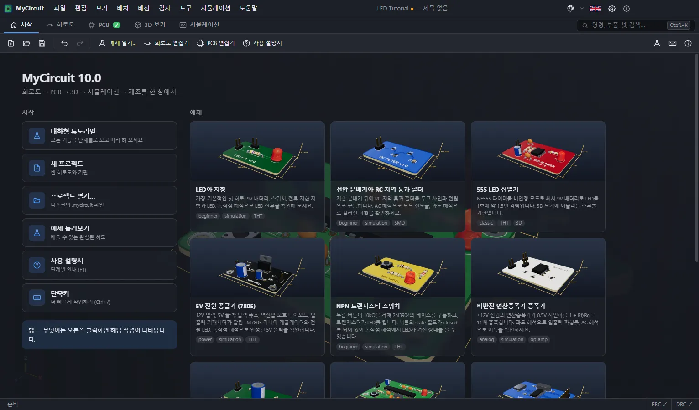
2.12파일 다루기, 실행 취소, 자동 저장
새로 만들기·열기·저장
- 새 프로젝트(Ctrl+N): 빈 회로도(A4)와 60 × 40 mm 2층 기판, 기본 설계 규칙을 가진 “제목 없음” 프로젝트를 만들고 회로도 탭으로 갑니다.
- 열기(Ctrl+O):
.mycircuit파일을 엽니다. 회로도에 부품이 있으면 회로도 탭, 없으면 PCB 탭으로 갑니다. 창에 파일을 끌어 놓아도 열리며(.mycircuit또는.json만), 데스크톱에서는 탐색기 더블클릭·명령줄 인자로도 열립니다. - 저장(Ctrl+S): 이미 경로가 있으면 대화상자 없이 덮어씁니다. 처음 저장할 때는 프로젝트 제목(파일 이름에 쓸 수 없는 문자는
_로 바뀜)으로 이름을 제안합니다. 다른 이름으로 저장은 Ctrl+Shift+S. - 예제를 열면 원본을 보호하기 위해 경로가 비워집니다. 처음 저장할 때 새 이름을 묻습니다.
- 저장하지 않은 변경이 있으면 제목 옆에 ●가 표시되고, 새로 만들기·열기·예제 열기·창 닫기 때 저장하지 않은 변경 내용 대화상자가 취소 / 저장 안 함 / 저장을 묻습니다.
실행 취소
모든 편집은 실행 취소 단계로 기록됩니다(최대 200단계). 드래그 한 번, 배선 한 줄(여러 꺾임 포함), 대화상자의 확인 한 번이 각각 한 단계입니다. 실행 취소/다시 실행 때 화면 아래에 “실행 취소: 이동”처럼 무엇을 되돌렸는지 잠깐 표시됩니다. 은 단계 목록을 보여 주며, 단계를 클릭하면 그 단계 이전 상태로 한 번에 되돌립니다. 파일을 새로 열면 기록은 비워집니다.
자동 저장(복구본)
설정의 자동 저장이 켜져 있으면(기본값) 저장하지 않은 변경이 있을 때 30초마다 프로젝트 전체를 복구용으로 보관합니다. 이것은 원래 파일을 덮어쓰지 않는 별도의 복구본입니다. 저장하거나 새 프로젝트를 만들면 복구본은 지워집니다. 프로그램이 비정상 종료되면 다음 시작 때 복원 여부를 묻습니다.
복구본은 하나만 보관됩니다. 복원 질문에서 버리기를 누르면 되살릴 수 없습니다.
2.13그리드와 눈금자
그리드는 기본적으로 5 × 5 선 그리드입니다. 가는 선이 한 칸, 5칸마다 굵은 주 그리드선이 그려집니다. 확대·축소하면 화면의 칸 크기가 늘 10~50픽셀이 되도록 칸이 ×5 단위로 다시 나뉘므로, 어느 배율에서도 같은 간격의 5×5 무늬로 보입니다(실제 맞춤 그리드는 회로도 그리드·PCB 그리드 설정 그대로입니다). 그리드는 도구 모음 오른쪽의 그리드 표시 버튼이나 로 켜고 끄며, 설정 → 단위와 그리드 → 그리드 스타일에서 선 (5 × 5)와 점을 고릅니다.
눈금자는 캔버스 위쪽과 왼쪽 가장자리에 표시되며, 편집기 단위(mm 또는 mil)로 값이 적혀 있습니다(왼쪽 위 모서리에 단위 표시). 커서 위치는 두 눈금자 위의 주황색 표시선으로 나타납니다. 눈금 간격은 1-2-5 단계로 확대율에 맞춰 자동으로 바뀝니다. 눈금자 표시 버튼(, 설정의 캔버스 가장자리에 눈금자 표시)으로 켜고 끕니다.
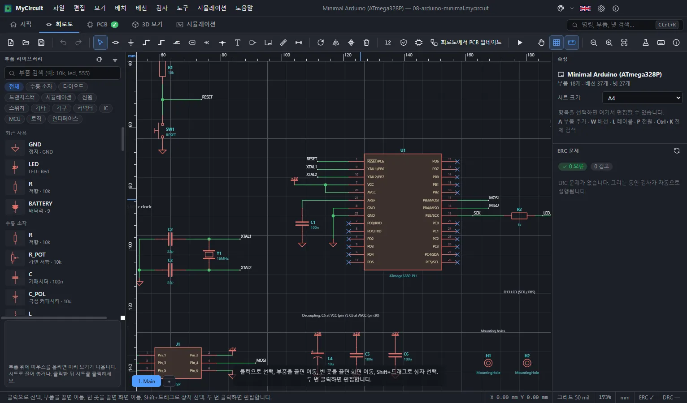
2.14테마
테마는 다크 20개(미드나이트, 그래파이트, 노르드, 드라큘라, 모노카이, 솔라라이즈드 다크, 그루브박스 다크, 원 다크, 도쿄 나이트, 카푸치노 모카, 오셔닉, 포레스트, 크림슨, 애미시스트, 사이버펑크, 슬레이트, 에스프레소, 딥 씨, 오로라, 고대비 다크)와 라이트 20개(데이라이트, 페이퍼, 솔라라이즈드 라이트, 그루브박스 라이트, 노르드 라이트, 깃허브 라이트 등)가 있습니다. 테마는 배경·패널·글자·강조색 같은 몇 가지 색만 정하고, 나머지 화면 색과 회로도·PCB 캔버스 색은 이 색들에서 계산되므로 어떤 테마에서도 읽기 쉽습니다.
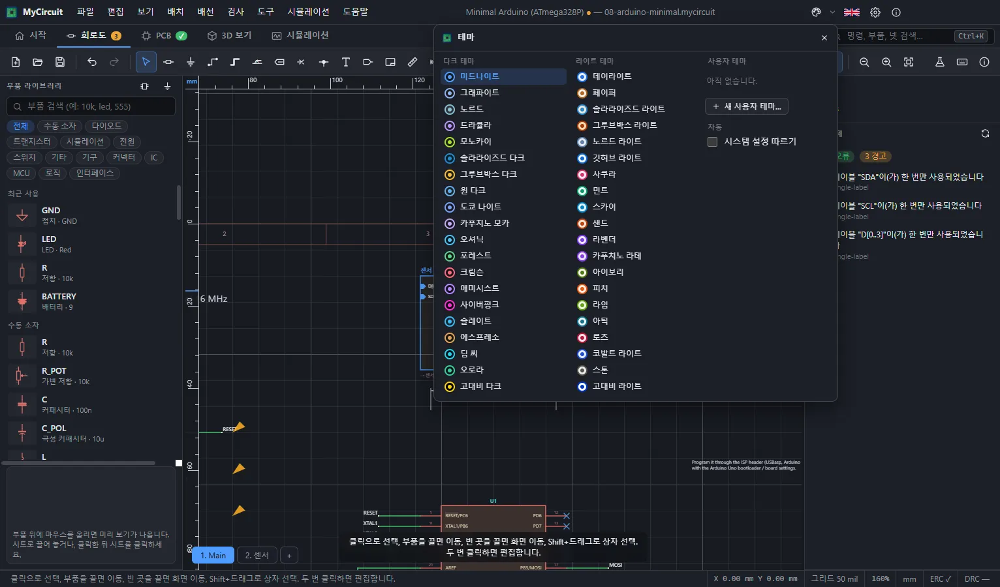
- 목록에서 이름을 누르면 바로 적용됩니다. 현재 테마는 강조되어 있습니다.
- 자동 아래 시스템 설정 따르기를 켜면 운영체제의 밝게/어둡게 설정에 따라 마지막으로 고른 다크 테마와 라이트 테마를 번갈아 씁니다.
- 새 사용자 테마…: 이름, 유형(어둡게/밝게), 강조색, 배경, 패널, 텍스트 네 가지 색을 고르는 창이 열리고, 고르는 동안 프로그램 전체에 미리 보기가 적용됩니다. 테마 저장을 누르면 목록의 사용자 테마에 추가되고, 이름 옆 × 로 지울 수 있습니다. 사용자 테마는 설정 파일에 저장됩니다.
- 설정 → 모양 → 테마… 버튼은 같은 테마를 견본 그림으로 보여 주는 갤러리 창을 엽니다.
2.15정보 창
(또는 타이틀 바·도구 모음의 ⓘ 버튼)는 왼쪽에 프로그램 아이콘(위에서 내려다본 회로 기판 그림), 오른쪽에 자세한 설명 — “전자 회로 설계 및 3D 도구”라는 소개 문구와 회로도·PCB·3D와 시뮬레이션·출력 네 줄의 기능 요약 — 을 보여 줍니다. 아래에는 항목/값 표가 있습니다: 프로그램(버전), 빌드(커밋·브랜치, 수정된 상태면 “(+)”), 빌드 날짜, 작성자(SHKWON (knix008@naver.com)), 에디션(데스크톱/웹), 운영체제, 실행 환경(Electron·Chromium·Node.js 버전), 3D 엔진(three.js 버전), 라이브러리(심볼·풋프린트 수), 파일 형식, 언어 / 테마, 라이선스. 정보 복사는 표 내용을 클립보드에 복사합니다(문의할 때 붙여 넣기 좋습니다).
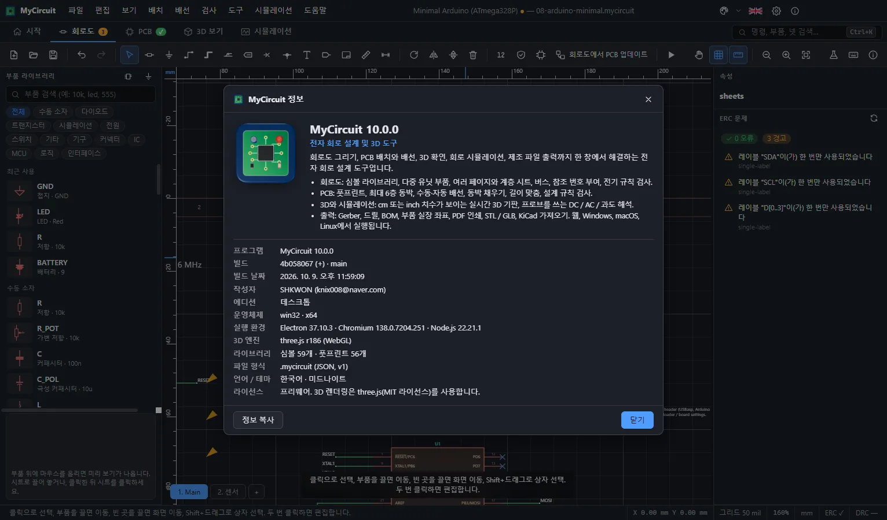
2.16대화형 튜토리얼
(도구 모음 오른쪽의 플라스크 모양 버튼)은 실제 프로그램을 직접 조작하며 기능을 가르쳐 주는 안내 창을 화면 오른쪽 아래에 엽니다. 튜토리얼은 열려 있는 프로젝트를 바꾸므로, 저장하지 않은 작업이 있으면 먼저 저장할지 묻습니다.
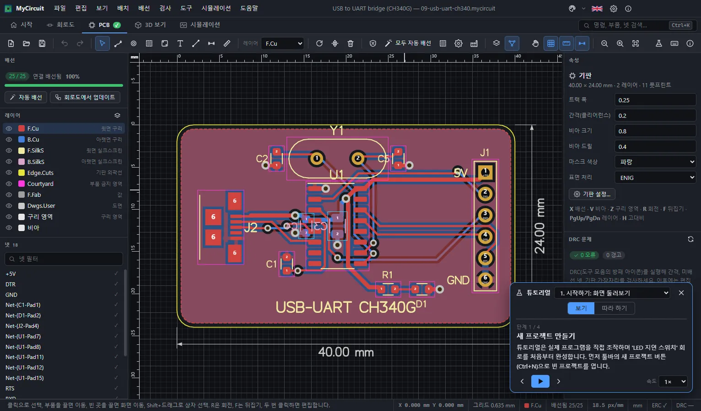
- 보기 모드: 프로그램이 각 단계를 직접 실행합니다. 움직이는 커서가 도구 모음 버튼, 라이브러리, 캔버스, 대화상자 버튼으로 가서 실제로 클릭·입력하므로 기능이 쓰이는 모습을 그대로 볼 수 있습니다. ▶(자동 재생)/일시 정지, ‹ 이전 단계, › 다음 단계 실행, 속도(0.5× ~ 4×)를 고릅니다.
- 따라 하기 모드: 안내대로 직접 해 보면 결과를 자동으로 확인하고 다음 단계로 넘어갑니다. 막히면 보여 주기로 그 단계를 실행해 볼 수 있습니다.
- 위쪽 목록에서 레슨을 고릅니다. 14개 레슨, 모두 62단계: 시작하기: 화면 둘러보기 · 회로도: 부품 배치 · 회로도: 배선과 레이블 · 회로도: 편집 기능 · 여러 페이지 회로도 · 참조 번호와 전기 규칙 검사(ERC) · 풋프린트 지정과 PCB로 보내기 · PCB: 기판과 배치 · PCB: 배선 · PCB: 실크·치수·측정 · 3D 보기 · 시뮬레이션 · 제조 출력과 인쇄 · 라이브러리 만들기와 도구. 마지막 레슨에는 “화면 이동, 그리드, 눈금자”, “치수 재기와 치수선”, “3D: 회전, 이동, 그리드와 좌표축”, “고급 배선: 길이 맞춤, 차동 쌍, 밀어내기”(길이 맞춤·차동 쌍 대화 상자를 열고 배선 모드를 바꿔 봄) 단계가 들어 있습니다.
- 레슨을 모두 마치면 만든 프로젝트가 그대로 열려 있으므로 저장하거나 계속 고칠 수 있습니다. × 로 튜토리얼을 끝냅니다.
3빠른 시작 튜토리얼 — LED 회로를 처음부터
9 V 배터리, 470 Ω 저항, 빨간 LED로 이루어진 가장 간단한 회로를 회로도부터 거버 출력까지 만들어 봅니다. 각 단계의 그림은 실제 실행 화면입니다.
3.1새 프로젝트 만들기
- (Ctrl+N)를 누릅니다. 회로도 탭이 빈 A4 시트와 함께 열립니다.
- 에서 제목을
LED Tutorial로 바꿉니다. 제목은 시트 오른쪽 아래 표제란, 내보내는 파일 이름, 제조 파일에 쓰입니다.
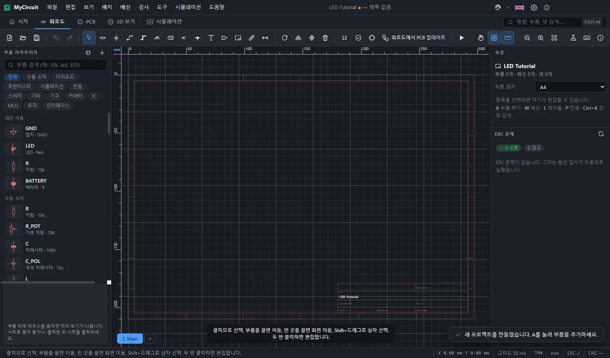
제조 파일 이름에는 영문자·숫자·_ . -만 쓰이고 나머지는 _로 바뀝니다. 제목이 한글뿐이면 파일 이름이 board-…가 되므로 영문 제목을 권장합니다.
3.2부품 배치
- A를 누르면 부품 추가 창이 열립니다.
battery를 입력하고 Enter를 누르면 마우스를 따라다니는 배터리 심볼(고스트)이 나타납니다. 시트를 클릭해 놓습니다. - 같은 방법으로
R(저항)과led(LED)를 놓습니다. 배치 중에 R로 90° 회전, Y/X로 대칭할 수 있습니다. 한 번 놓은 뒤에도 같은 부품이 계속 붙어 다니므로 여러 개를 연달아 놓을 수 있고, Esc나 오른쪽 클릭으로 끝냅니다. Shift를 누른 채 클릭하면 한 개만 놓고 바로 선택 도구로 돌아갑니다. - P를 눌러 전원 심볼 목록에서
GND를 고르고 배터리 아래와 LED 아래에 하나씩 놓습니다. - 배치한 부품을 더블클릭하거나 값 글자를 더블클릭해 값을 바꿉니다: 배터리
9, 저항470, LEDRed.
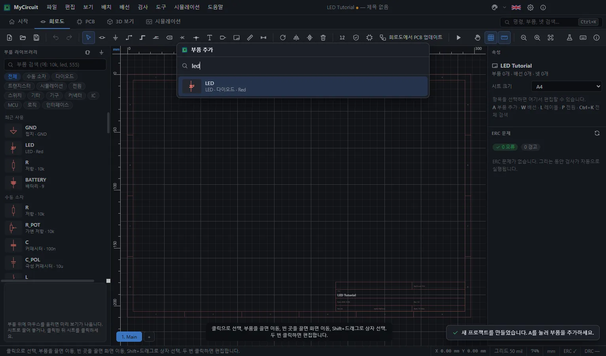
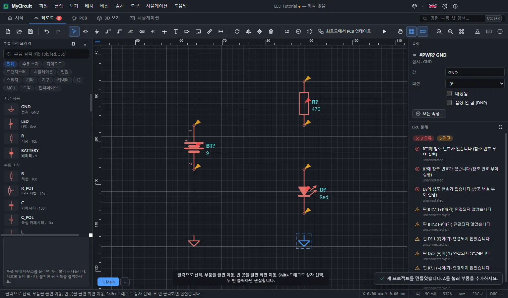
BT?, R?, D?왼쪽 라이브러리에서 부품을 시트로 끌어 놓거나, 목록의 부품을 클릭한 뒤 시트를 클릭해도 됩니다. 핀 끝의 작은 원은 아직 연결되지 않은 핀을 뜻합니다.
3.3배선
- W를 누르고 배터리의 + 핀 끝을 클릭합니다. 커서가 핀이나 배선 끝 근처에 가면 작은 사각형 표시로 달라붙습니다.
- 위쪽으로 한 번 클릭해 꺾임점을 만들고, 저항의 위쪽 핀을 클릭합니다. 핀에 닿으면 배선이 자동으로 끝납니다. 점선은 다음에 그려질 미리 보기이며, /로 꺾이는 방향(가로 먼저/세로 먼저)을 바꿀 수 있습니다.
- 저항 아래 핀 → LED 위(애노드) 핀, LED 아래(캐소드) 핀 → GND, 배터리 − 핀 → GND도 같은 방법으로 잇습니다.
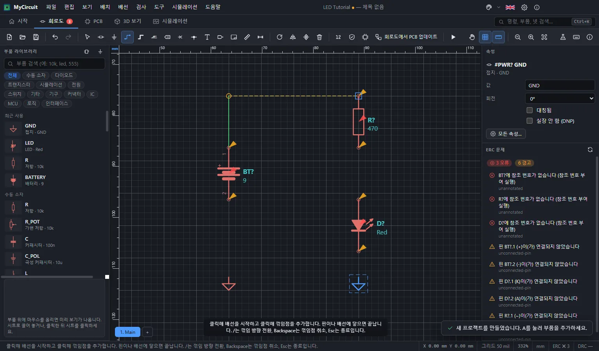
배선 중 Backspace는 마지막 꺾임점을 지우고, Enter·Esc·더블클릭·오른쪽 클릭은 그 자리에서 배선을 끝냅니다. 세 개 이상의 연결이 만나는 곳에는 정션 점이 자동으로 생깁니다.
3.4참조 번호와 ERC
ERC(전기 규칙 검사)는 그리는 동안 자동으로 실행됩니다. 지금은 “BT? is not annotated” 같은 오류가 오른쪽 목록에 보이고, 회로도 탭 옆에 빨간 숫자 배지가, 캔버스의 문제 위치에 작은 빨간 깃발이 표시됩니다.
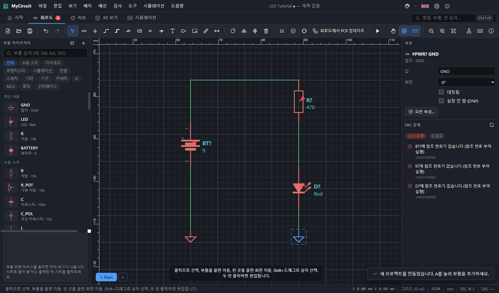
- 도구 모음의 참조 번호 부여 버튼(또는 )을 누릅니다. 위에서 아래, 왼쪽에서 오른쪽 순으로
BT1,R1,D1이 붙습니다. - ERC 버튼을 누르거나 상태 표시줄의 ERC 칸을 클릭하면 “ERC 통과 — 문제가 없습니다.”가 표시됩니다.
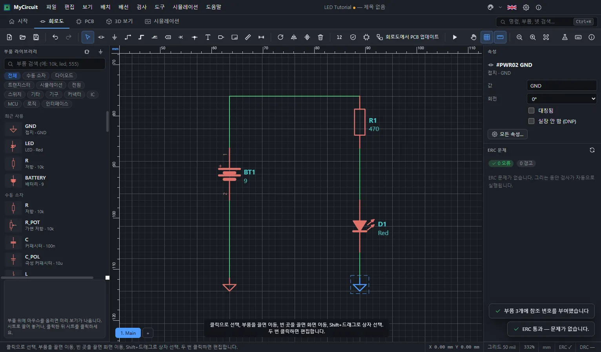
부품을 클릭하면 오른쪽 속성 패널에서 참조 번호, 값, 풋프린트, 회전, 대칭, 실장 안 함(DNP)을 바로 바꿀 수 있습니다.
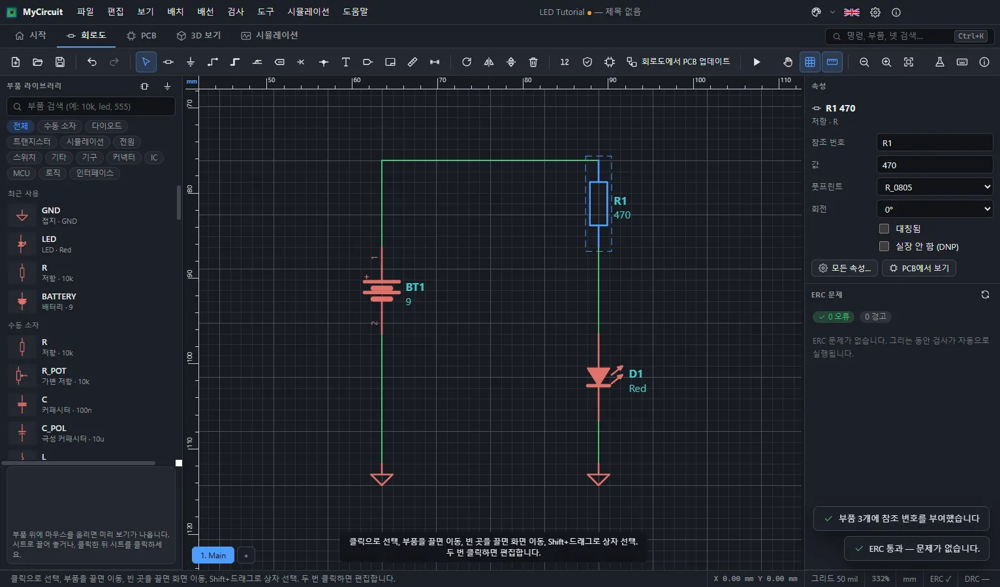
3.5풋프린트 지정
풋프린트는 부품이 기판에 차지하는 구리 패드와 외형입니다. 라이브러리 심볼에는 기본 풋프린트가 들어 있어(저항은 R_0805, LED는 LED_0805) 그대로 써도 됩니다. 여기서는 손으로 납땜하기 쉬운 스루홀 부품으로 바꿉니다.
- 도구 모음의 풋프린트 지정 버튼(또는 )을 누릅니다.
- 왼쪽 표에서
R1을 클릭하고 오른쪽 목록에서R_Axial_P7.62mm를 클릭합니다.D1은LED_D5.0mm로 바꿉니다. ★는 심볼이 추천하는 풋프린트이고, 목록 위에 마우스를 올리면 아래에 패드 모양이 미리 보입니다. - 적용을 누릅니다. (빈 항목에 첫 번째 추천 사용은 풋프린트가 없는 부품에 첫 번째 추천을 한꺼번에 넣습니다.)
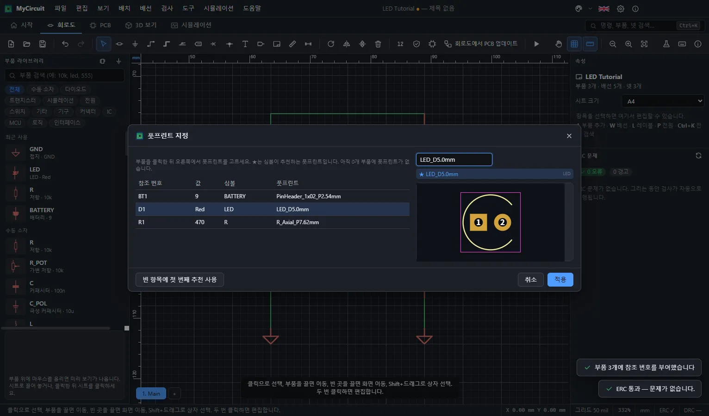
3.6PCB 업데이트
F8(회로도에서 PCB 업데이트)을 누르면 PCB 탭으로 바뀌고, 풋프린트가 기판 외곽선 오른쪽 바깥에 줄지어 나타납니다. 같은 넷의 패드끼리 가는 선(래츠네스트, 에어와이어)으로 이어져 무엇을 연결해야 하는지 보여 줍니다. 화면 아래에 “PCB 업데이트됨 — 3개 추가”가 표시됩니다.
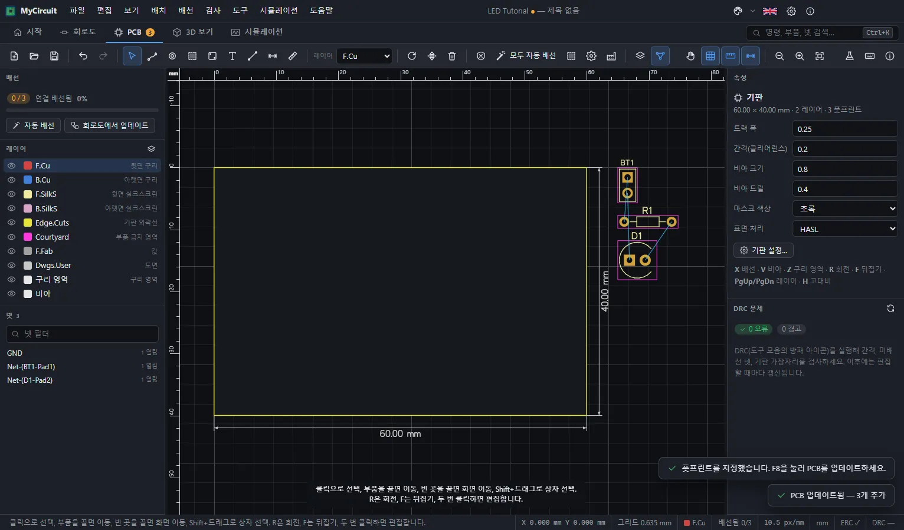
3.7기판 외곽선과 부품 배치
- O(기판 외곽선)를 누르고 캔버스에서 사각형을 드래그합니다. 드래그하는 동안 크기(예: 36.20 × 24.13 mm)가 표시되고, 놓는 순간 외곽선이 그 사각형으로 바뀝니다.
- Esc로 선택 도구로 돌아와 풋프린트를 하나씩 기판 안으로 끌어 놓습니다. 끄는 동안 풋프린트 원점이 그리드(기본 0.635 mm)에 맞춰집니다.
- LED를 선택하고 R을 눌러 90° 회전합니다. 래츠네스트가 짧아지도록 배치하면 배선이 쉬워집니다.
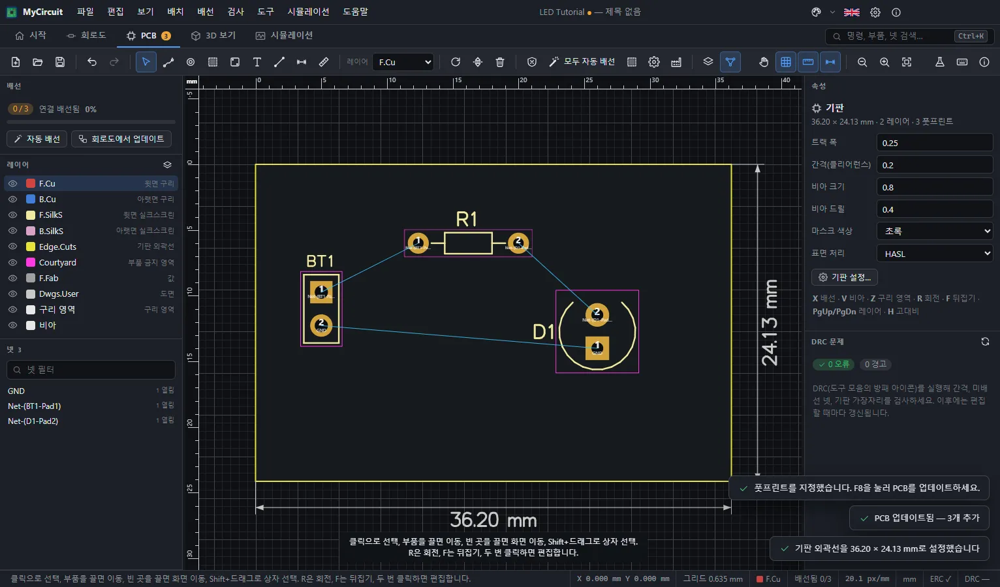
3.8배선 — 손으로, 그리고 자동으로
- X(트랙 배선)를 누르고 BT1의 1번 패드를 클릭합니다. 상태 표시줄에 “넷 Net-(BT1-Pad1) 배선 중 — 폭 0.25 mm”가 나옵니다.
- 커서를 움직이면 직선 + 45° 대각선의 미리 보기가 따라옵니다. 둘레의 옅은 띠는 간격(클리어런스) 영역이며, 다른 넷의 구리에 너무 가까워지면 미리 보기가 빨간색으로 바뀝니다.
- R1의 1번 패드를 클릭하면 같은 넷의 구리에 닿았으므로 배선이 자동으로 끝납니다.
- 나머지는 도구 모음의 모두 자동 배선(Ctrl+Shift+A)으로 처리합니다. 몇십 밀리초 만에 “모든 연결을 배선했습니다 (트랙 7개, 비아 0개, 37 ms).”가 표시되고 PCB 탭 배지가 초록 ✓로 바뀝니다.
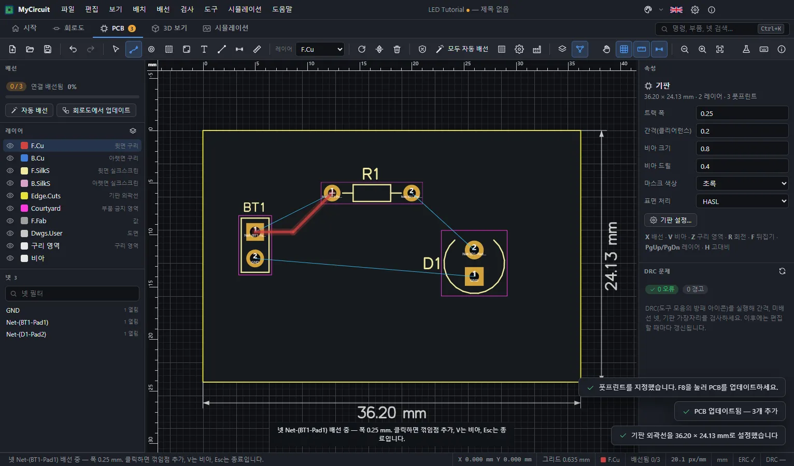
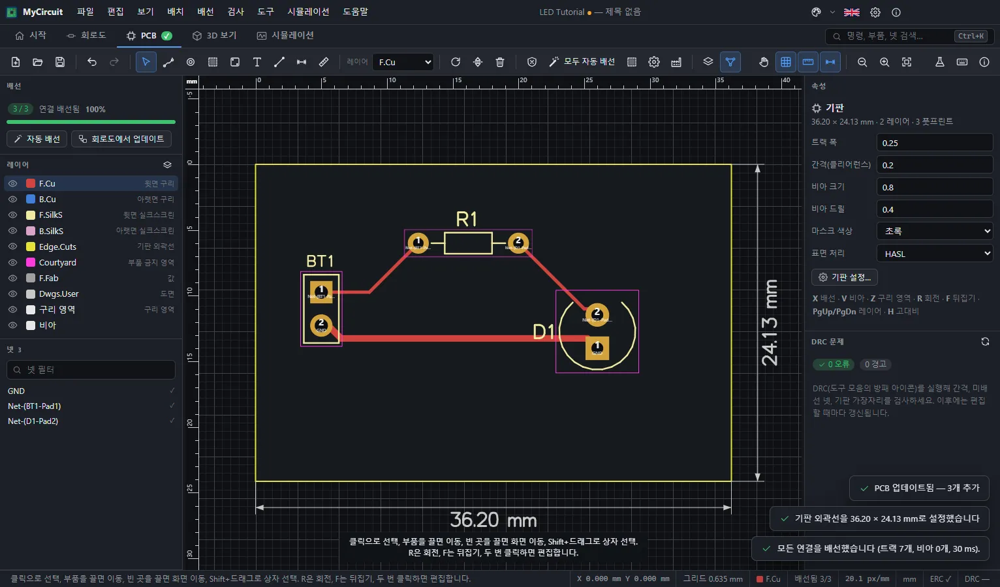
GND 트랙이 더 굵은 이유: 기본 넷 클래스 “Power”에 GND, VCC, +5V, +3V3, +12V, -12V, VBAT가 들어 있고 트랙 폭이 0.5 mm로 정해져 있기 때문입니다(10.5).
3.9그라운드 영역(구리 붓기)
- 도구 모음의 기판을 접지 영역으로 채우기 버튼(또는 )을 누릅니다.
- 넷은 자동으로
GND가 선택되고 F.Cu와 B.Cu가 모두 체크되어 있습니다. 만들기를 누릅니다. - 기판 가장자리에서 (가장자리 간격 + 0.2 mm) 안쪽으로 양면에 GND 구리 영역이 생깁니다. 다른 넷의 패드·트랙 주변은 간격만큼 비워지고, GND 패드는 네 갈래 써멀 릴리프로 연결됩니다.
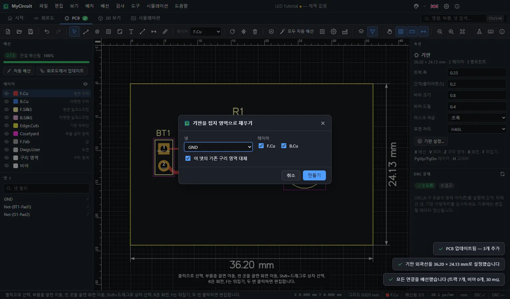
3.10DRC
도구 모음의 방패 모양 DRC 버튼을 누릅니다. 이 기판은 “DRC 통과 — 기판에 문제가 없습니다.”로 오류도 경고도 없습니다. 문제가 있으면 오른쪽 목록의 항목을 클릭해 위치로 이동할 수 있습니다. 한 번 DRC를 실행하면 이후 편집할 때마다 자동으로 다시 실행됩니다(9.1).
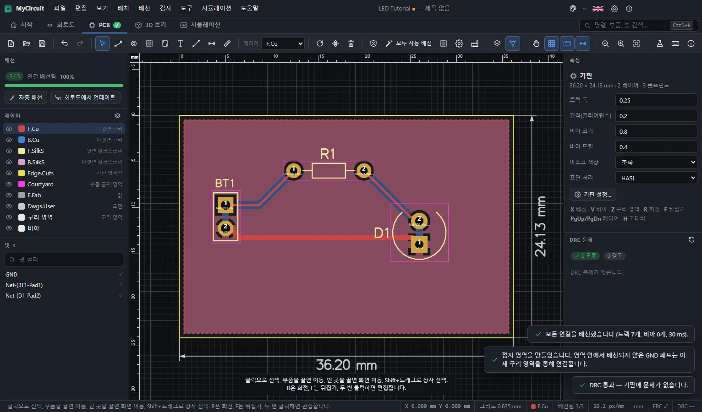
3.113D로 확인
F4를 누르면 3D 보기 탭에 기판이 등각 시점으로 나타납니다. 왼쪽 드래그로 회전, 오른쪽 드래그로 이동, 휠로 확대합니다. 숫자 1~7은 등각/위/아래/앞/뒤/왼쪽/오른쪽 시점, C는 부품 표시를 켜고 끕니다. 부품을 클릭하면 회로도와 PCB에서도 같은 부품이 선택됩니다.
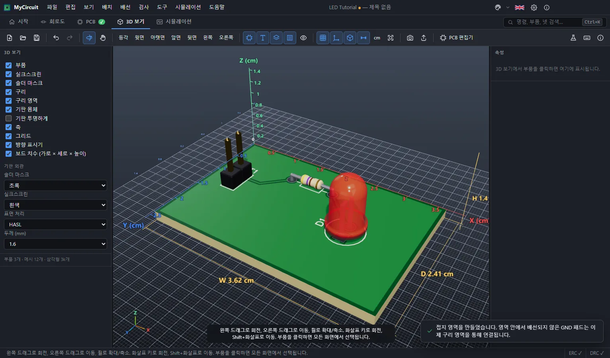
3.12시뮬레이션
- 를 고릅니다. 시뮬레이션 탭으로 바뀌고 넷별 전압과 부품별 전류·전력 표가 나옵니다. LED 전류는 약 14.9 mA입니다.
- F2로 회로도로 돌아가면 각 넷 배선 위에 전압 배지(9 V, 1.99 V, 0 V)가 표시됩니다.
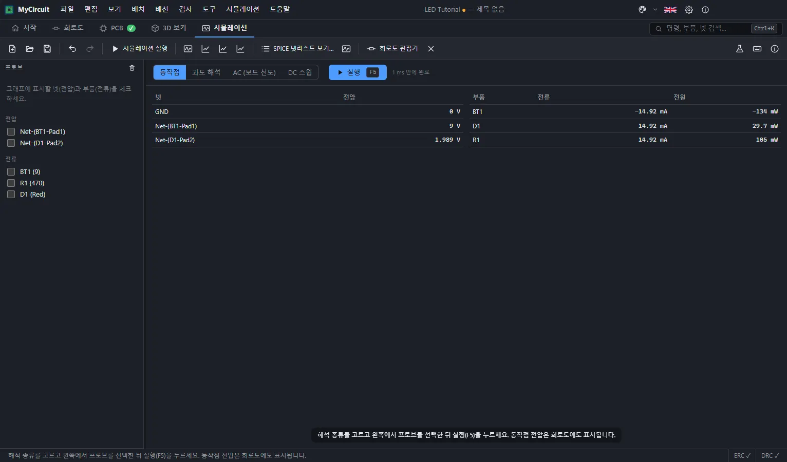
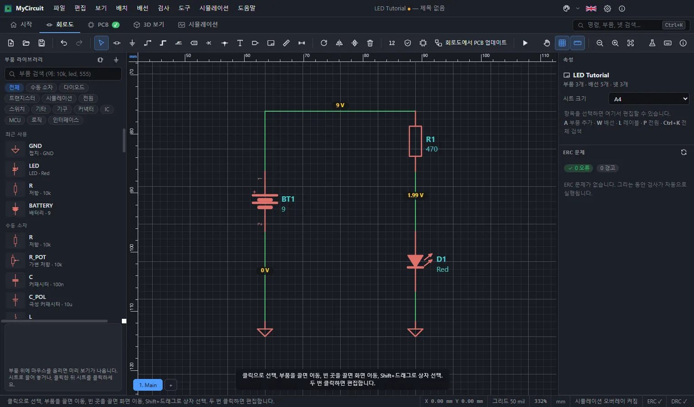
배터리 전류가 음수(−14.9 mA)로 표시되는 것은 SPICE 규칙 때문입니다. 전원의 전류는 + 핀으로 들어가는 방향이 양수이므로, 전력을 공급하는 전원은 음수가 됩니다(12.6).
3.13거버와 드릴 파일 출력
- (또는 PCB 도구 모음의 공장 아이콘)을 엽니다. 먼저 DRC가 자동 실행되어 결과가 맨 위에 표시됩니다.
- 만들어질 파일 목록(레이어별 거버, PTH/NPTH 드릴, BOM, 픽앤플레이스, IPC-356, 작업 파일, README)과 크기를 확인합니다.
- 거버 뷰어에서 미리 보기로 결과물을 레이어별로 겹쳐 확인하거나, ZIP 저장…으로
LED_Tutorial-fabrication.zip을 저장합니다. 이 ZIP을 그대로 PCB 제조사에 올리면 됩니다.
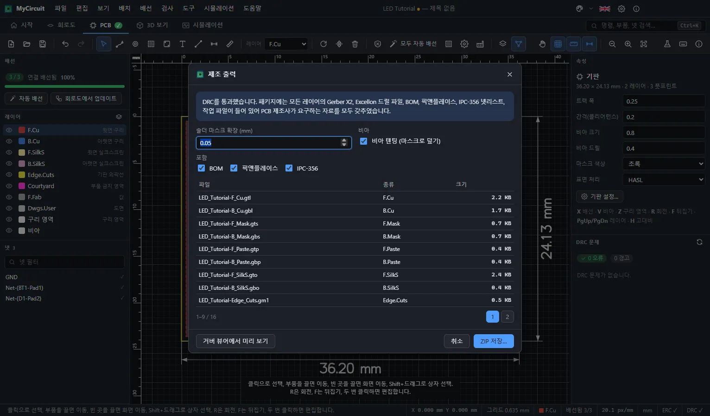
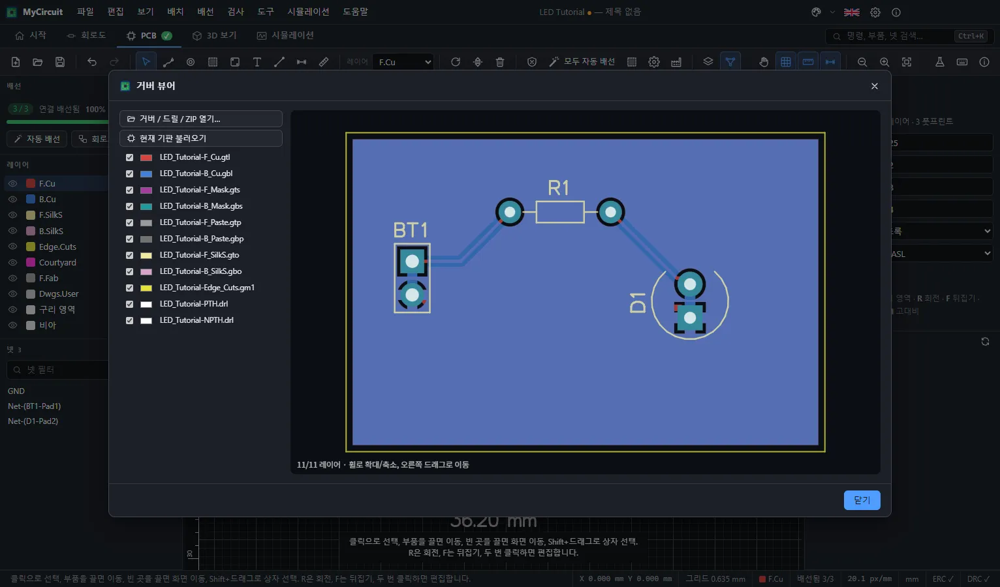
마지막으로 Ctrl+S로 프로젝트를 저장하면 튜토리얼이 끝납니다. 이제 각 장에서 기능을 더 자세히 살펴보세요.
4회로도 편집기
회로도 탭(F2)은 부품 심볼을 놓고 배선으로 연결해 “무엇이 무엇과 연결되는가”(넷리스트)를 정의하는 곳입니다. 여기서 만든 연결 정보가 PCB, 시뮬레이션, BOM의 출발점입니다.
4.1좌표, 그리드, 시트
- 회로도의 내부 단위는 mil(1/1000 인치, 0.0254 mm)입니다. 상태 표시줄의 좌표는 단위 설정에 따라 mm 또는 mil로 표시됩니다.
- 모든 배치와 이동은 회로도 그리드(기본 50 mil)에 맞춰집니다. 상태 표시줄의 그리드 칸을 클릭하거나 설정에서 10 / 25 / 50 / 100 mil 중에서 고릅니다. 라이브러리 심볼의 핀 간격이 100 mil이므로 보통 50 mil을 그대로 쓰는 것이 좋습니다.
- 시트는 테두리, 열 번호(1, 2, …)와 행 문자(A, B, …)가 표시된 도면 틀입니다. 아무것도 선택하지 않았을 때 속성 패널의 시트 크기에서 A4 · A3 · A2 · Letter · Tabloid를 고릅니다.
- 오른쪽 아래 표제란에는 회사, 제목, 날짜, 리비전, 설명, 시트 크기, 작성자, “Sheet: 현재/전체 페이지 이름”이 표시됩니다. 내용은 에서 고칩니다(4.19).
- 그리드 표시와 모양(점/선)은 와 설정에서 바꿉니다. 많이 축소하면 그리드 점이 너무 빽빽해지지 않도록 자동으로 성기게 그려집니다.
4.2선택
선택 도구(Esc로 언제든 돌아옴)에서:
- 클릭: 항목 하나를 선택합니다. 마우스를 올리면 항목이 강조되고 커서가 이동 모양으로 바뀝니다. 겹쳐 있으면 레이블·텍스트 → 연결 없음 표시 → 정션 → 배선 → 버스 → 부품 순으로 위에 있는 것이 잡힙니다(핀으로 들어가는 배선도 클릭할 수 있도록 배선이 부품 몸체보다 먼저입니다).
- Shift+클릭 또는 Ctrl+클릭: 선택에 더하거나 뺍니다.
- 상자 선택: Shift(또는 Ctrl)를 누른 채 빈 곳에서 드래그합니다(기존 선택에 더해짐). 방향에 따라 동작이 다릅니다.
- 왼쪽 → 오른쪽(윈도 선택, 파란 실선 상자): 상자 안에 완전히 들어간 항목만 선택합니다(배선은 양 끝이 모두 안에 있어야 함).
- 오른쪽 → 왼쪽(크로싱 선택, 초록 점선 상자): 상자에 걸치기만 해도 선택합니다(배선은 한쪽 끝만 안에 있어도 됨).
- Ctrl+A: 현재 페이지의 모든 항목을 선택합니다.
- 빈 곳을 클릭하거나 Esc를 누르면 선택이 풀립니다. Esc는 순서대로 ① 손(이동) 모드 끝내기 ② 측정 지우기 ③ 진행 중인 배선 끝내기 ④ 진행 중인 드래그 취소 ⑤ 선택 도구로 돌아가기 ⑥ 넷 강조 해제 ⑦ 선택 해제를 합니다.
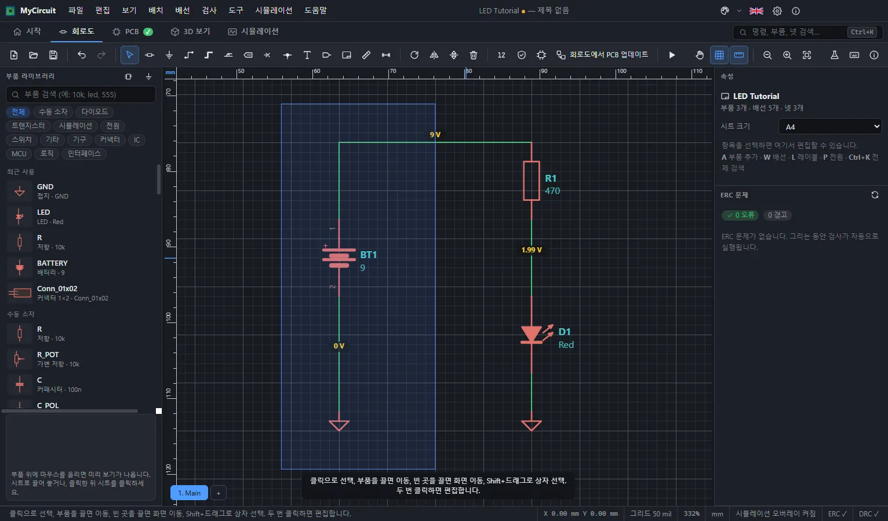
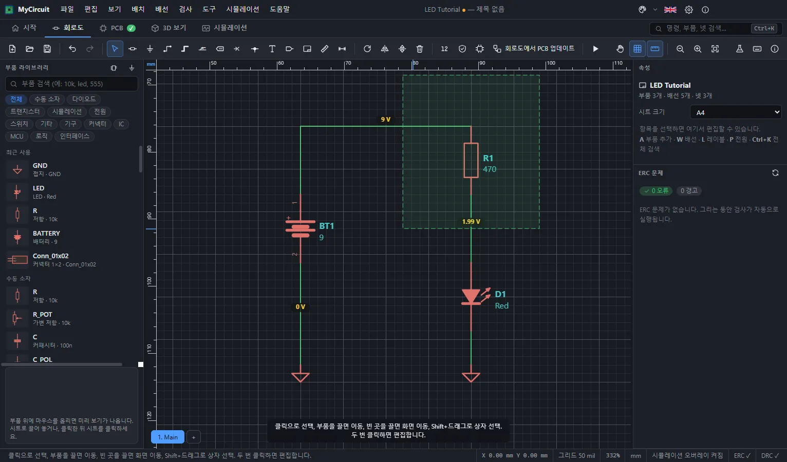
4.3이동과 고무줄 드래그
- 선택한 항목을 끌면 그리드 단위로 이동합니다(4픽셀 이상 움직여야 드래그로 인식). 놓을 때 한 번의 실행 취소 단계가 됩니다. 드래그 중 Esc를 누르면 원래 자리로 돌아갑니다.
- 고무줄(rubber-band): 부품이나 레이블을 옮기면 그 핀/앵커에 붙어 있던 배선 끝이 함께 따라옵니다. 배선이 비스듬해지면 놓는 순간 꺾임점이 하나 추가되어 다시 가로·세로 배선(L자)으로 정리됩니다. 원래 가로로 뻗어 있던 배선은 가로 방향을 유지합니다.
- Alt(macOS는 Option)를 누른 채 끌면 붙어 있는 배선을 끌지 않고 항목만 옮깁니다(연결이 끊어질 수 있으니 주의).
- 방향키 ←→↑↓: 선택한 항목을 그리드 한 칸씩 옮깁니다(고무줄 적용).
- 필드 끌기: 부품의 참조 번호(R1)나 값(10k) 글자만 클릭해서 끌면 부품은 그대로 두고 글자 위치만 옮겨집니다(“필드 이동”). 부품을 회전·대칭하거나 회전 값을 바꾸면 글자 위치는 기본 위치로 돌아갑니다.
4.4회전과 대칭
| 키 | 동작 |
|---|---|
| R | 선택을 화면 기준 90° 반시계 방향으로 회전. 여러 개를 선택하면 선택 영역의 중심(그리드에 맞춤)을 기준으로 함께 회전 |
| Y | 좌우 대칭(세로축 기준) |
| X | 상하 대칭(가로축 기준) — 내부적으로 좌우 대칭 + 180° 회전 |
회전/대칭 후에도 부품 핀에 붙어 있던 배선 끝은 새 핀 위치로 따라가고, 비스듬해진 배선은 L자로 정리됩니다. 부품을 배치하는 중(고스트 상태)에도 R, X, Y가 동작합니다. 속성 패널의 회전(0°/90°/180°/270°)과 대칭됨 체크로도 바꿀 수 있습니다.
4.5복사, 잘라내기, 붙여넣기, 복제
- Ctrl+C 복사, Ctrl+X 잘라내기, Ctrl+V 붙여넣기 — 선택한 항목(부품, 배선, 레이블, 텍스트 등)을 앱 내부 클립보드에 넣습니다. 붙여넣기는 마우스 커서 위치(그리드에 맞춤)에 선택 영역 중심이 오도록 놓습니다. 빈 곳 오른쪽 클릭 메뉴의 붙여넣기는 클릭한 위치에 놓습니다. 다른 페이지에 붙여넣을 수도 있습니다.
- Ctrl+D 복제: 선택을 오른쪽 아래로 200 mil 떨어진 곳에 바로 복사하고 새로 만든 항목을 선택합니다.
- 붙여넣은 부품의 참조 번호가 이미 쓰이고 있으면
R?처럼 번호가 지워집니다. 참조 번호 부여를 다시 실행하세요. - 잘라내기/복사/붙여넣기는 회로도에서만 동작합니다. PCB의 풋프린트는 회로도에서 오므로 PCB에서는 트랙·비아·영역·텍스트·그래픽만 복제할 수 있습니다.
4.6삭제
Del 또는 Backspace(배선 중이 아닐 때)로 선택을 지웁니다. 지운 뒤에는 자동 정리(4.9)가 실행되어 더 이상 필요 없는 정션이 사라지고 한 줄로 이어지는 배선이 합쳐집니다.
4.7부품 배치
부품을 놓는 방법은 세 가지입니다.
- A(): 검색 창에 이름·값·키워드(한글 키워드 포함, 예: “저항”, “커패시터”)를 입력하고 Enter. 최근에 쓴 부품이 위에 나옵니다.
- 왼쪽 라이브러리에서 부품을 시트로 끌어 놓기: 놓은 자리에 하나만 배치하고 선택 도구로 돌아갑니다.
- 라이브러리 목록의 부품을 클릭한 뒤 시트를 클릭(검색 칸에서 Enter를 누르면 첫 번째 결과를 고름).
배치 도구에서는 마우스를 따라다니는 반투명 고스트가 보입니다. 클릭할 때마다 하나씩 놓이며 도구가 유지되므로 같은 부품을 연달아 놓을 수 있습니다. Shift+클릭은 하나만 놓고 선택 도구로 돌아갑니다(전원 포트는 예외로 계속 유지). Esc나 오른쪽 클릭으로 끝냅니다.
새 부품의 참조 번호는 R?처럼 물음표로 시작하고(참조 번호 부여 전), 값과 풋프린트는 라이브러리의 기본값(예: 저항 10k, R_0805)이 들어갑니다. 놓은 부품은 최근 사용 목록(최대 12개)에 기록됩니다.
4.8전원 포트
P()를 누르면 전원 심볼 목록이 열립니다: GND, VCC, +5V, +3V3, +12V, VBAT, -12V, PWR_FLAG. 고른 뒤 클릭해 놓습니다(연속 배치 가능).
- 전원 심볼은 값 이름의 넷에 연결됩니다. 같은 이름의 전원 심볼은 배선이 없어도, 다른 페이지에 있어도 모두 같은 넷입니다.
- 전원 심볼의 값을 바꾸면 넷 이름도 바뀝니다. 예를 들어
VCC심볼의 값을+9V로 바꾸면+9V넷이 됩니다. - 전원 심볼에는 숨은 참조 번호(
#PWR01…)가 붙고, BOM과 PCB에는 나타나지 않습니다. PWR_FLAG는 “이 넷은 외부에서 전원을 공급받는다”고 ERC에 알려 주는 표시입니다. 커넥터로만 전원이 들어오는 회로에서 IC의 전원 입력 핀 때문에 생기는power-undriven오류를 없앨 때 씁니다(5.4).- 시뮬레이션의 기준 전위(0 V)는
GND(또는0,AGND) 넷입니다. 시뮬레이션하려면 GND 심볼이 반드시 있어야 합니다.
4.9배선
W()로 배선 도구를 고릅니다.
- 시작점을 클릭합니다. 커서가 핀 끝, 배선 끝, 레이블 앵커 근처(약 9 화면 픽셀)에 가면 그 점으로 달라붙고 작은 사각형 표시가 나타납니다. 달라붙을 곳이 없으면 그리드 점(십자 표시)에 맞춰집니다.
- 다음 점을 클릭할 때마다 배선이 그려집니다. 두 점이 가로·세로로 맞지 않으면 꺾임이 하나 있는 직교 경로가 됩니다. 기본은 가로 먼저이며, /를 누르면 세로 먼저로 바뀝니다(미리 보기 점선으로 확인).
- 자동 종료: 핀, 다른 배선의 끝, 레이블, 또는 다른 배선의 중간에 닿으면 배선이 자동으로 끝납니다.
- 빈 곳에서 끝내려면 Enter, Esc, 더블클릭, 오른쪽 클릭 중 하나를 씁니다. Backspace는 마지막으로 만든 꺾임(구간)을 지웁니다.
배선 한 줄(시작부터 끝까지)이 한 번의 실행 취소 단계입니다. 배선을 끝내거나 항목을 추가·삭제·이동할 때마다 다음 자동 정리가 실행됩니다.
- 길이가 0인 배선과 똑같은 배선(겹친 중복)을 지웁니다.
- 한 직선 위에서 끝과 끝이 만나는 두 배선을, 그 점에 다른 것이 연결되어 있지 않으면 하나로 합칩니다.
- 배선 중간에 정션이 있으면 그 점에서 배선을 둘로 나눕니다.
- 자동 정션: 세 개 이상의 연결(배선 끝, 핀, T자로 만나는 배선)이 모이는 점에 정션 점을 자동으로 만들고, 더 이상 필요 없는 정션은 지웁니다.
연결되지 않은 배선 끝에는 노란 작은 원이 그려지고, 확대했을 때 연결되지 않은 핀 끝에는 작은 원이 표시되어 끊어진 곳을 쉽게 찾을 수 있습니다.
두 배선이 단순히 교차하는 것만으로는 연결되지 않습니다. 교차점을 연결하려면 정션(J)을 놓으세요. 반대로 배선 끝이나 핀 끝이 다른 배선의 중간에 닿으면(T자) 연결됩니다(5.1).
4.10정션
J로 정션 도구를 고르고 연결할 점을 클릭합니다. 정션은 그 점을 지나는 배선을 나누어 연결합니다. 세 개 이상의 연결이 모이지 않는 곳에 놓은 정션은 자동 정리 때 지워집니다(정션은 연결점 표시이므로 혼자서는 의미가 없습니다).
4.11넷 레이블과 글로벌 레이블
레이블은 배선으로 직접 잇지 않고 이름으로 연결하는 방법입니다.
- L(넷 레이블) 또는 Ctrl+L(글로벌 레이블)을 누르고 배선 끝이나 핀 끝을 클릭하면 이름 입력 칸이 뜹니다. 이름을 입력하고 Enter(Esc는 취소).
- 번호 자동 증가: 직전에 입력한 이름이 숫자로 끝나면 다음 레이블에는 1 증가한 이름이 미리 들어갑니다(
D0→D1,ADDR07→ADDR08). 버스 신호를 연달아 붙일 때 편리합니다. - 방향 자동 결정: 배선 끝에 놓으면 레이블이 배선 반대쪽을 향하도록 자동으로 회전합니다.
- 같은 페이지에서 이름이 같은 넷 레이블은 모두 같은 넷입니다. 글로벌 레이블은 이름이 같으면 모든 페이지에서 연결됩니다. 같은 페이지에서 글로벌 레이블과 같은 이름의 넷 레이블도 함께 연결됩니다.
- 레이블을 더블클릭하면 이름을 고칠 수 있고, 속성 패널에서 이름·유형(넷 레이블/글로벌 레이블)·회전을 바꿀 수 있습니다.
- 넷 이름을 정하는 데도 레이블을 씁니다. 레이블이 붙은 넷은 자동 이름(
Net-(R1-Pad2)) 대신 레이블 이름을 갖고, 이 이름이 PCB·시뮬레이션 프로브·넷리스트에 그대로 쓰입니다.
4.12버스
B로 버스 도구를 고르고, 배선처럼 클릭으로 꺾임점을 찍은 뒤 더블클릭으로 끝냅니다. 버스는 굵은 선으로 그려지는 그림 요소일 뿐 전기적 연결 정보는 없습니다. 실제 연결은 각 신호에 붙인 넷 레이블로 이루어집니다(예제 “74HC595 LED 바” 참고).
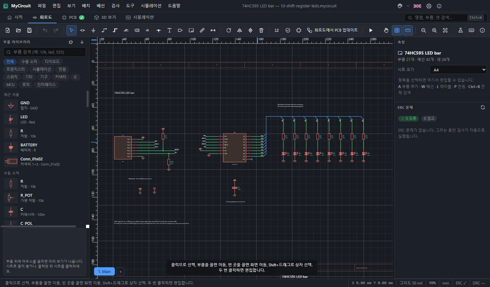
4.13연결 없음 플래그
Q로 도구를 고르고 쓰지 않는 핀 끝을 클릭하면 × 표시가 붙습니다. 그 핀은 의도적으로 연결하지 않았다는 뜻이므로 ERC의 unconnected-pin 경고가 사라집니다. 핀이 아닌 곳을 클릭하면 “핀 끝을 클릭해 연결 없음 플래그를 배치합니다.”라는 안내가 나옵니다. 플래그가 있는 핀을 나중에 연결하면 nc-connected 경고가 납니다.
4.14텍스트
T로 도구를 고르고 클릭한 곳에 메모를 입력합니다. 텍스트는 전기적 의미가 없습니다. 더블클릭하면 한 줄 편집, 속성 패널에서는 여러 줄 텍스트와 크기(mil, 기본 50)를 고칠 수 있습니다.
4.15속성 편집
속성 패널(인스펙터)
부품 하나를 선택하면 참조 번호, 값, 풋프린트(심볼이 추천하는 목록 + 더 보기…는 풋프린트 지정 창), 회전, 대칭됨, 실장 안 함(DNP)이 나옵니다. 시뮬레이션 필드가 있는 부품(전압원, 스위치 등)은 그 아래 시뮬레이션 구역에 필드가 나오며, wave는 DC/사인파/펄스, state는 열림/닫힘 선택 상자입니다. 버튼으로 모든 속성… 대화상자와 PCB에서 보기를 엽니다.
배선을 선택하면 넷 이름과 길이(mm), 넷 강조와 프로브 추가 버튼이 나옵니다.
부품 속성 대화상자
부품을 더블클릭하거나 E, 또는 오른쪽 클릭 → 속성…으로 엽니다. 세 개의 탭이 있습니다.
- 일반: 참조 번호, 값(입력하면 “= 4.7 k”처럼 해석된 값이 옆에 표시됨), 회전, 옵션(대칭됨, 실장 안 함, 값 숨기기).
- 풋프린트: 이름 입력(자동 완성), 심볼이 추천하는 풋프린트 칩, 패드 미리 보기.
- 필드: 시뮬레이션 필드와 사용자 필드. 필드 이름 칸에
MPN,Supplier처럼 새 이름을 넣고 필드 추가로 늘립니다. 값을 비워 두면 그 필드는 저장되지 않습니다.
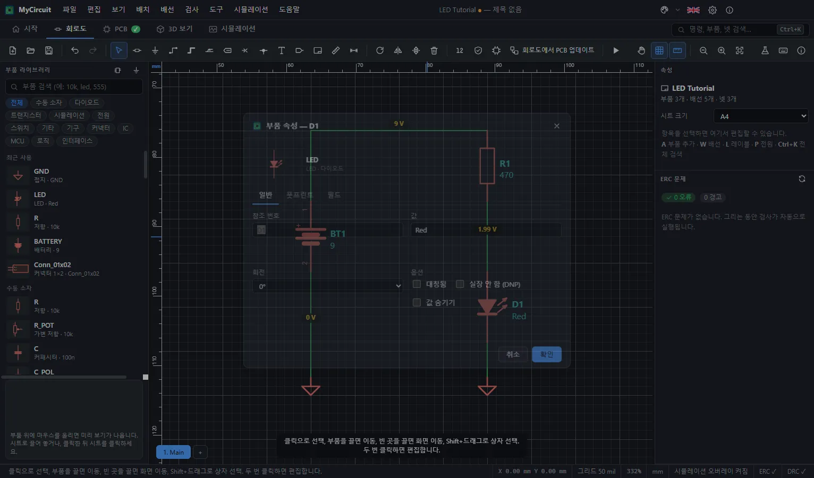
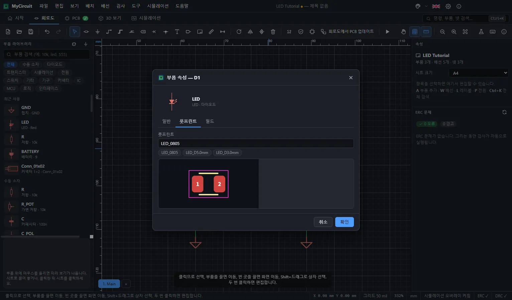
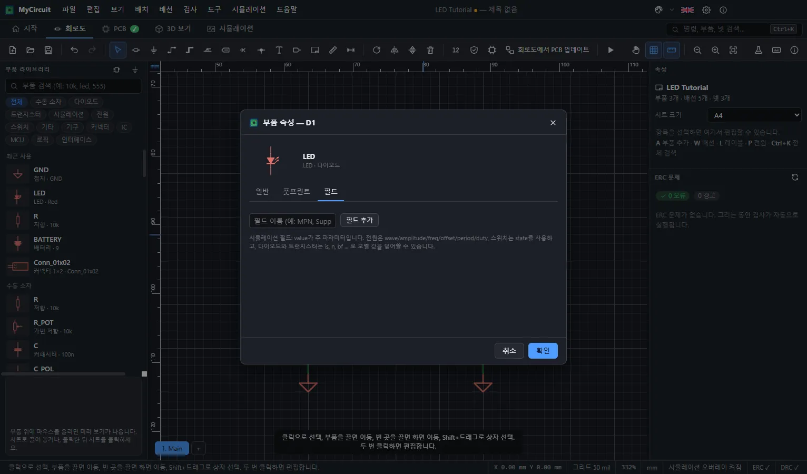
바로 편집
- 부품의 값 글자를 더블클릭하면 그 자리에 입력 칸이 떠서 값만 바로 고칠 수 있습니다.
- 레이블과 텍스트는 더블클릭하면 그 자리에서 고칩니다.
- DNP(실장 안 함)로 표시한 부품은 PCB 업데이트 때 기판에 추가되지 않고, 시뮬레이션에서 빠지며, BOM에 “(DNP)”로 따로 표시됩니다.
4.16참조 번호 부여
- : 참조 번호가
?로 끝나는 부품에만 번호를 붙입니다. 접두사(R, C, D, U, Q, J, SW …)별로 이미 쓰인 번호는 건너뛰고, 위에서 아래(100 mil 단위 줄), 같은 줄에서는 왼쪽에서 오른쪽 순으로 1부터 매깁니다. 여러 페이지면 페이지 순서대로(첫 페이지의 부품부터) 번호를 매깁니다. - : 모든 부품의 번호를 위 규칙으로 처음부터 다시 매깁니다.
- 전원 심볼과 PWR_FLAG는 항상
#PWR01,#FLG01…로 다시 번호가 붙습니다. - F8(PCB 업데이트)을 누를 때 번호가 없는 부품이 있으면 자동으로 참조 번호 부여가 먼저 실행됩니다.
- 다중 유닛 부품(4.25)은 한 부품의 유닛들이 같은 참조 번호를 받고 유닛 문자가 붙습니다(U1A, U1B …).
4.17넷 강조와 교차 탐색
- 배선을 클릭하면 그 배선이 속한 넷 전체가 강조됩니다(굵은 강조색 배선, 그 넷에 연결된 핀, 같은 이름의 레이블). 오른쪽 클릭 → 넷 ○○ 강조, 명령 팔레트/찾기에서 넷을 골라도 됩니다. 강조는 PCB에도 함께 적용됩니다. Esc로 해제합니다.
- 교차 탐색(cross-probing): 회로도에서 부품을 선택하면 PCB와 3D에서도 같은 참조 번호의 풋프린트가 선택되고, 반대도 마찬가지입니다. PCB에서 보기 / 3D에서 보기 / 회로도에서 보기는 탭을 바꾸고 그 부품을 화면 가운데로 옮깁니다. 부품이 다른 페이지에 있으면 그 페이지로 바뀝니다. BOM 표의 행을 클릭해도 모든 화면에서 선택됩니다.
4.18오른쪽 클릭 메뉴
선택 도구에서 오른쪽 클릭하면 상황에 맞는 메뉴가 나옵니다(다른 도구에서는 오른쪽 클릭이 선택 도구로 돌아가기, 배선 중에는 배선 끝내기).
- 부품 위: 속성…, PCB에서 보기, 3D에서 보기
- 배선 위: 넷 ○○ 강조, 시뮬레이션에서 이 넷 측정(프로브 추가)
- 선택이 있을 때: 회전, 좌우 대칭, 상하 대칭, 복제, 복사, 잘라내기, 삭제
- 빈 곳: 붙여넣기, 부품 추가…, 배선
- 항상: 화면에 맞추기, 모두 선택
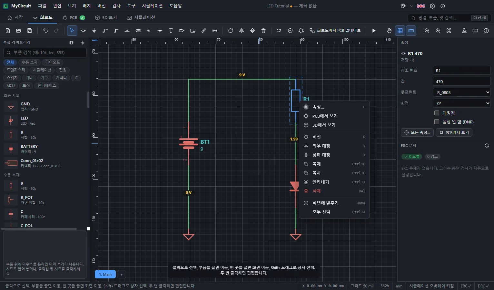
4.19시트 크기와 표제란
에서 제목, 작성자, 회사, 리비전, 날짜, 설명을 입력합니다. 이 값들은 표제란, 인쇄물, 제조 파일의 README와 Gerber 작업 파일, KiCad 넷리스트의 title_block에 쓰입니다. 시트 크기는 아무것도 선택하지 않은 상태의 속성 패널에서 바꿉니다.
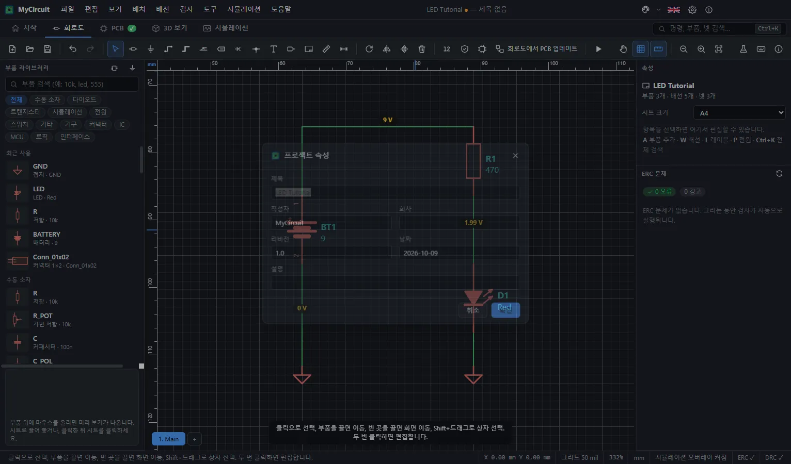
4.20캔버스 위의 표시
| 표시 | 의미 |
|---|---|
| 빨간/노란 작은 깃발(삼각형) | ERC 오류/경고 위치 |
| 배선 끝의 노란 원 | 아무것에도 연결되지 않은 배선 끝 |
| 핀 끝의 작은 원(확대 시) | 연결되지 않은 핀 |
| 배선 위의 전압 배지 | 동작점 시뮬레이션 결과(로 켜고 끔, 로 지움) |
| 퍼지는 빨간 원 | 문제 목록이나 찾기에서 고른 위치 |
| 점선 사각형 | 선택된 부품 |
4.21여러 페이지 회로도
큰 회로는 여러 페이지(시트)로 나눌 수 있습니다. 회로도 캔버스 왼쪽 아래에 페이지 탭이 있습니다. 새 프로젝트는 1. Main 페이지 하나로 시작합니다.
| 동작 | 방법 |
|---|---|
| 페이지 열기 | 페이지 탭 클릭 |
| 페이지 추가 | 맨 오른쪽 + 탭 — “페이지 N”이 추가되고 바로 열립니다 |
| 이름 바꾸기 | 탭 더블클릭, 또는 오른쪽 클릭 → 페이지 이름 바꾸기… |
| 순서 바꾸기 | 오른쪽 클릭 → 왼쪽으로 이동 / 오른쪽으로 이동 |
| 삭제 | 오른쪽 클릭 → 페이지 삭제 — 확인 후 그 페이지의 모든 항목과 함께 지워집니다(페이지가 하나뿐이면 삭제 불가) |
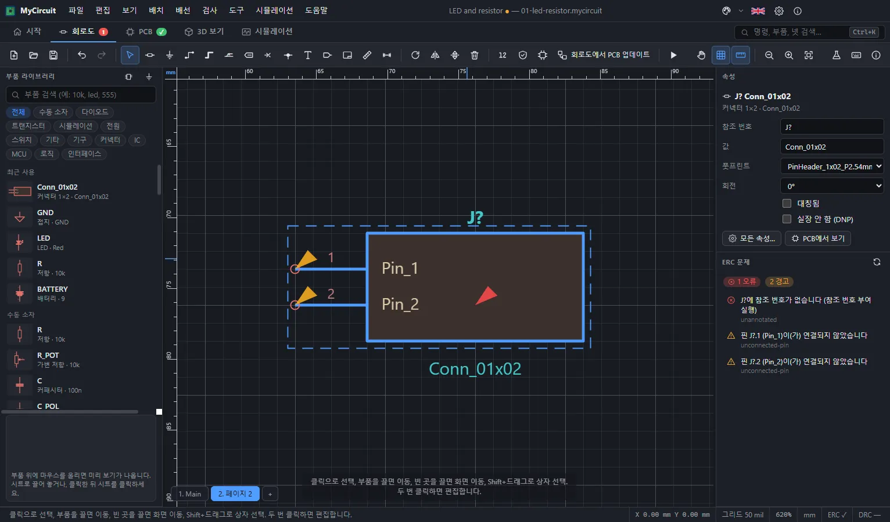
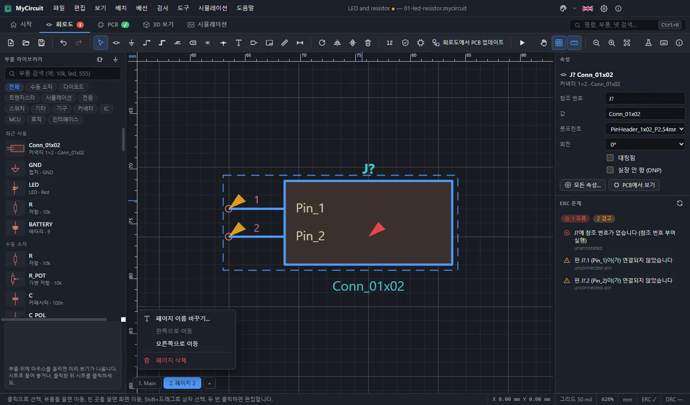
페이지 사이의 연결 규칙
- 배선, 핀, 정션 같은 도형은 페이지를 넘어 연결되지 않습니다. 다른 페이지의 같은 좌표에 있어도 별개입니다.
- 넷 레이블은 자기 페이지 안에서만 연결됩니다.
- 글로벌 레이블과 전원 포트(GND, +5V …)는 모든 페이지에 걸쳐 연결됩니다. 페이지를 추가하면 “페이지 사이의 넷은 글로벌 레이블이나 전원 포트로 연결하세요.”라는 안내가 나옵니다.
편집(선택, 모두 선택, 이동, 붙여넣기 등)은 현재 페이지에서만 이루어집니다. ERC는 모든 페이지를 함께 검사하고, 문제 항목을 클릭하면 해당 페이지로 이동합니다. 교차 탐색도 부품이 있는 페이지로 바꿔 줍니다. 인쇄할 때는 페이지마다 한 장씩 나오고, 표제란에 “Sheet: 2/3 이름”처럼 페이지 번호와 이름이 표시됩니다. SVG/PNG 내보내기는 현재 페이지만 저장합니다.
4.22측정과 치수
회로도에도 거리 측정과 도면 치수선이 있습니다( 메뉴, 도구 모음).
- 측정(M): 두 점을 클릭하면 그 사이에 점선과 거리 표시가 나타납니다 — 예: “28.40 mm (1118 mil) Δx 1000 Δy 500 mil”. 점은 회로도 그리드에 맞춰집니다. 다시 클릭하면 새로 재고, Esc로 지웁니다. 측정은 저장되지 않습니다.
- 치수(D): ① 첫 점 클릭 ② 둘째 점 클릭 ③ 마우스를 옆으로 움직여 치수선을 측정 대상에서 띄울 거리(오프셋, 25 mil 단위)를 정하고 클릭 — 이렇게 세 번 클릭하면 보조선·화살표·길이 글자가 있는 치수선이 도면에 추가됩니다. 길이는 편집기 단위에 따라 “12.70 mm (500 mil)” 또는 “500 mil (12.70 mm)”처럼 두 단위로 표시됩니다.
- 치수선은
schematic.dimensions에 페이지별로 저장되고, 선택·이동·삭제할 수 있으며, 인쇄·SVG·PNG 출력에도 나옵니다.
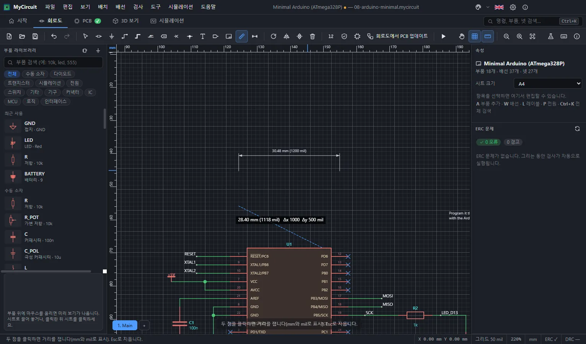
4.23계층 시트
계층 시트는 다른 페이지의 회로를 하나의 블록으로 그려 넣는 방법입니다. 블록의 가장자리에 있는 시트 핀이 그 페이지 안의 계층 레이블과 연결됩니다.
- S()를 누르고 캔버스에 사각형을 드래그합니다(최소 600 × 400 mil).
- 나타나는 입력 칸에 시트 이름(기본 “시트 1”)을 입력하고 Enter. 같은 이름의 새 페이지가 만들어지고, 페이지 탭에 추가됩니다. “시트를 만들었습니다. 두 번 클릭해 페이지를 열고 계층 레이블(H)을 추가하세요 — 블록에 핀으로 나타납니다.”라는 안내가 나옵니다.
- 블록을 더블클릭하면 그 페이지가 열립니다. 거기서 회로를 그리고, 바깥과 연결할 신호에 H()로 계층 레이블을 붙입니다.
- 계층 레이블을 추가하거나 이름을 바꾸거나 지우면 블록의 시트 핀이 자동으로 맞춰집니다(이름순으로 왼쪽·오른쪽에 번갈아 100 mil 간격, 블록 높이도 자동으로 늘어남). 시트 핀은 계층 레이블에서 만들어지는 정보이므로 실행 취소 단계가 생기지 않습니다.
- 원래 페이지로 돌아와 시트 핀 끝에 배선을 연결합니다. 시트 핀 끝은 배선이 달라붙는 연결점입니다.
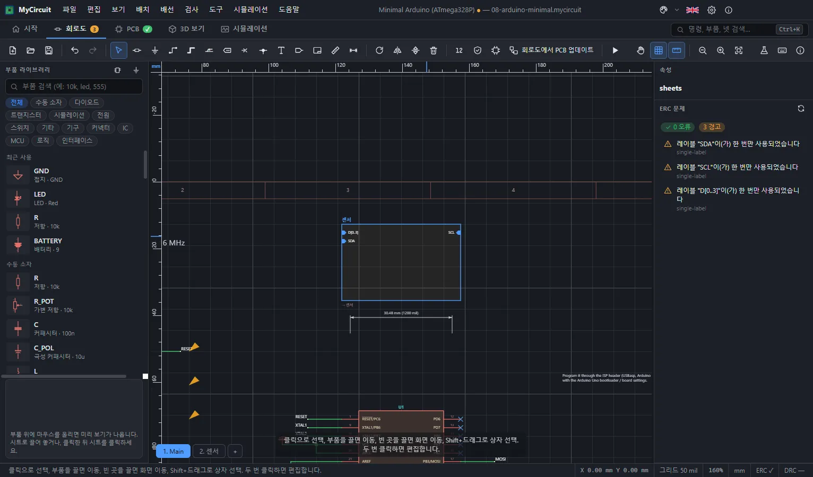
- 블록은 이름(위), 대상 페이지 이름(아래), 시트 핀을 보여 줍니다. 블록을 선택·이동·삭제할 수 있습니다(블록을 지워도 대상 페이지는 남습니다).
- 연결 규칙: 계층 레이블은 그 페이지를 보여 주는 블록의 같은 이름 시트 핀에만 연결됩니다. 같은 페이지의 계층 레이블끼리도 이름이 같으면 연결됩니다.
- ERC: 대상 페이지가 없는 블록은
sheet-target오류, 짝이 되는 시트 핀이 없는 계층 레이블은hier-unconnected경고입니다(5.4). - KiCad의 계층 시트를 가져오면 같은 구조(블록 + 페이지)로 만들어집니다(13.9).
시트 블록을 선택하면 속성 패널에서 이름(대상 페이지 이름도 함께 바뀜), 폭·높이(− / + 스테퍼)를 바꾸고, 시트 핀 목록을 보고, 시트 페이지 열기 버튼으로 그 페이지로 갈 수 있습니다.
4.24벡터(버스) 레이블
레이블 이름을 이름[시작..끝] 꼴로 쓰면 여러 신호를 한꺼번에 나타내는 벡터 레이블이 됩니다. 예: D[0..7]은 D0, D1, …, D7의 여덟 신호를 뜻합니다(최대 256개).
- 글로벌 레이블로 쓴 벡터 레이블은 각 멤버를 모든 페이지의 같은 이름 신호(
D0…D7)와 연결합니다. - 시트 핀 이름이 벡터이면(대상 페이지에
D[0..7]계층 레이블을 둔 경우) 바깥 페이지의D0…D7과 대상 페이지의D0…D7이 멤버별로 연결됩니다. - 벡터 레이블 자체는 배선 한 가닥에 붙는 넷이 아니라 이름 묶음입니다. 각 멤버 신호에는 보통 넷 레이블(
D0…)을 붙여 연결합니다. 굵은 버스 선(B)은 여전히 그림일 뿐입니다.
4.25다중 유닛 부품
한 패키지에 같은 기능이 여러 개 들어 있는 IC는 유닛으로 나뉜 심볼로 그립니다. 내장 라이브러리의 다중 유닛 심볼:
| 심볼 | 유닛 |
|---|---|
LM358_DUAL (듀얼 연산 증폭기) | A: 3(+), 2(−), 1(출력) · B: 5(+), 6(−), 7(출력) · C: 전원 8(V+), 4(V−) |
74HC00 (4회로 2입력 NAND) | A: 1, 2 → 3 · B: 4, 5 → 6 · C: 9, 10 → 8 · D: 12, 13 → 11 · E: 전원 14(VCC), 7(GND) |
- 배치 도구에서 클릭할 때마다 다음 유닛이 놓입니다(U?A → U?B → … 마지막 유닛 뒤에는 새 부품). 상태 표시줄에 “유닛 B 배치 중 — 클릭해 배치, Esc로 중지.”가 나옵니다. 함께 놓은 유닛들은 한 부품으로 묶여 같은 참조 번호를 받습니다.
- 속성 패널의 유닛 선택 상자로 그 심볼이 보여 줄 유닛(A, B …)을 바꿀 수 있습니다.
- 참조 번호에는 유닛 문자가 붙어 표시됩니다(U1A, U1B). 한 부품의 유닛들은 PCB에서 하나의 풋프린트가 되고, 공통 핀(전원 유닛)은 같은 넷으로 연결됩니다. 다른 유닛이 같은 참조 번호를 쓰는 것은 중복 참조 번호 오류가 아닙니다.
- KiCad에서 가져온 다중 유닛 심볼도 같은 방식으로 동작합니다.
5연결 규칙과 ERC
5.1연결 규칙
MyCircuit은 KiCad와 같은 규칙으로 무엇이 연결되었는지 판단합니다.
- 배선의 끝점은 정확히 그 위에 있는 것(핀 끝, 다른 배선 끝, 레이블 앵커, 정션)과 연결됩니다.
- 배선 끝, 핀 끝, 레이블 앵커, 정션이 다른 배선의 중간에 놓이면 그 배선과 연결됩니다(T자 연결).
- 두 배선이 단순히 교차하는 것은 연결이 아닙니다. 교차점에 정션이 있을 때만 연결됩니다.
- 이름이 같은 넷 레이블은 같은 페이지 안에서 같은 넷입니다. 글로벌 레이블은 모든 페이지에서 같은 넷입니다.
- 전원 심볼은 값 이름의 넷(GND, +5V …)에 모든 페이지에서 연결됩니다.
- 한 부품 안에서 번호가 같은 핀(예: 택트 스위치의 같은 번호 패드 두 개)은 같은 넷입니다.
- 도형은 페이지를 넘어 연결되지 않습니다.
- 계층 레이블은 그 페이지를 보여 주는 시트 블록의 같은 이름 시트 핀과 연결됩니다(4.23).
- 벡터 레이블
D[0..7]은 글로벌 레이블과 시트 핀에서 멤버D0…D7로 펼쳐집니다(4.24). - 다중 유닛 부품의 유닛들은 한 부품입니다: 같은 번호의 핀은 같은 넷입니다.
- 일반 부품의 숨은 전원 입력 핀(KiCad에서 가져온 로직 IC 등)은 핀 이름과 같은 이름의 넷(VCC, GND …)에 자동으로 연결됩니다.
- 버스와 텍스트는 연결 정보를 갖지 않습니다.
5.2넷 이름 정하기
각 넷의 이름은 다음 순서로 정해집니다.
- 전원 심볼 이름(GND, +5V …)
- 글로벌 레이블 이름
- 넷 레이블 이름
- 이름이 없으면 자동 이름
Net-(참조-Pad핀)— 그 넷에 연결된 부품 중 참조 번호가 가장 앞선 부품의 핀 번호로 만듭니다. 예:Net-(R1-Pad2)
서로 다른 넷이 같은 이름을 갖게 되면 뒤의 것에 _1, _2가 붙습니다. 넷 이름은 PCB의 패드·트랙, 시뮬레이션 프로브, 넷리스트·BOM에 그대로 쓰이므로, 중요한 신호에는 레이블로 이름을 붙이는 것이 좋습니다. 넷 목록은 에서 볼 수 있습니다.
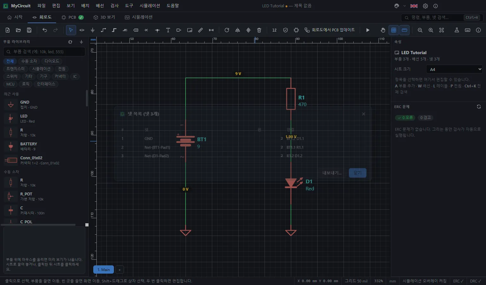
5.3ERC 실행
설정의 ERC 계속 실행이 켜져 있으면(기본값) 편집할 때마다 약 0.35초 뒤 ERC가 자동으로 다시 실행되어 오른쪽 목록, 회로도 탭 배지, 상태 표시줄, 캔버스의 깃발이 갱신됩니다. 수동으로는 , 도구 모음의 ERC 버튼, 상태 표시줄의 ERC 칸, 문제 목록의 새로 고침 버튼으로 실행합니다. 수동 실행 때는 결과가 “ERC: 오류 n개, 경고 m개” 알림으로 표시되고 오른쪽 패널이 열립니다.
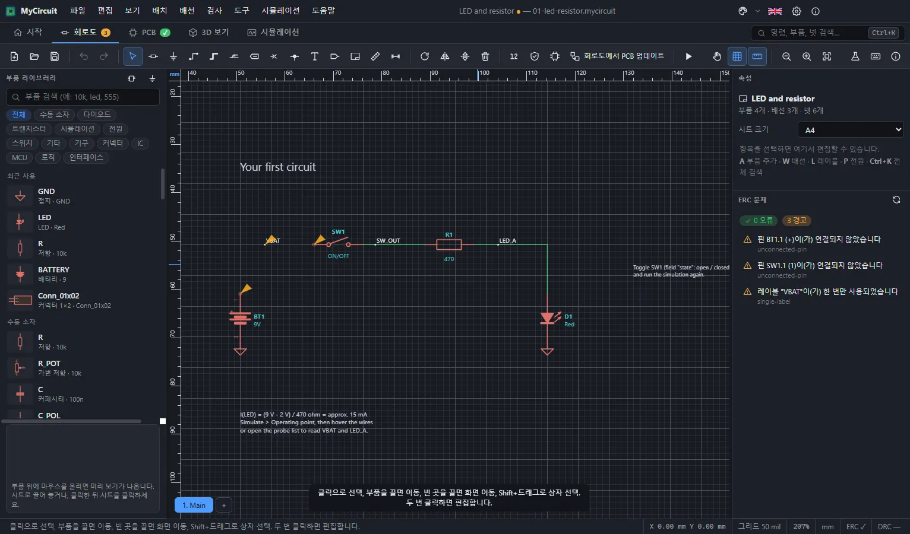
5.4ERC 검사 항목
| 코드 | 심각도 | 메시지(한국어 화면) | 의미 | 고치는 방법 |
|---|---|---|---|---|
unknown-symbol | 오류 | 알 수 없는 심볼 "…" | 라이브러리에 없는 심볼을 쓰는 부품(다른 프로젝트의 사용자 심볼을 복사한 경우 등) | 부품을 지우고 라이브러리의 심볼로 다시 놓거나, 심볼 편집기로 같은 이름의 심볼을 만듭니다. |
unannotated | 오류 | R?에 참조 번호가 없습니다 | 참조 번호가 ?로 끝나거나 비어 있음 | |
duplicate-ref | 오류 | 참조 번호 R1이(가) 중복됩니다 | 두 부품이 같은 참조 번호를 가짐 | 한쪽 번호를 직접 바꾸거나 |
no-footprint | 경고 | R1에 풋프린트가 지정되지 않았습니다 | 핀이 있는 부품에 풋프린트가 없음 — 그 부품은 PCB에 추가되지 않습니다 | 속성 패널 또는 |
output-conflict | 오류 | 출력 핀 U1.3, U2.3이(가) 같은 넷 …을(를) 구동합니다 | 유형이 output인 핀 두 개 이상이 한 넷에 연결됨 | 배선을 확인합니다. 출력끼리 직접 연결하면 안 됩니다. |
power-undriven | 오류 | 전원 입력 U1.8 (VCC, 넷 +5V)을 구동하는 전원 출력이 없습니다 — PWR_FLAG를 추가하세요 | power_in 핀이 있는 넷에 power_out 핀(전압원, 배터리, 레귤레이터 출력, USB VBUS 등)도 PWR_FLAG도 없음 | 전원이 커넥터 등으로 외부에서 들어온다면 그 넷에 PWR_FLAG를 놓습니다. 실제로 전원이 빠졌다면 전원을 연결합니다. |
unconnected-pin | 경고 | 핀 R1.1 (~)이(가) 연결되지 않았습니다 | 아무것에도 연결되지 않은 핀(레이블이나 전원도 없음) | 연결하거나, 일부러 비워 둔 핀이면 연결 없음 플래그(Q)를 붙입니다. |
nc-connected | 경고 | 핀 U1.5에 연결 없음 플래그가 있지만 연결되어 있습니다 | × 플래그가 있는 핀이 다른 핀과 연결됨 | 플래그를 지우거나 연결을 끊습니다. |
no-driver | 경고 | 넷 …에 입력 핀만 있습니다 (구동원이 없음) | 둘 이상의 핀이 모두 input 유형 | 신호를 내보내는 출력이나 풀업/풀다운 저항을 연결합니다. |
dangling-wire | 경고 | 배선 끝이 아무 것에도 연결되지 않았습니다 | 배선 끝이 핀·레이블·다른 배선 어디에도 닿지 않음(캔버스에 노란 원) | 배선을 연장해 연결하거나 남는 배선을 지웁니다. |
single-label | 경고 | 레이블 "…"이(가) 한 번만 사용되었습니다 | 이름이 한 번만 쓰였고 그 넷에 핀이 두 개 미만 — 짝이 되는 레이블을 빠뜨렸을 가능성(계층 레이블과 벡터 레이블은 여기서 검사하지 않으며, 계층 레이블은 hier-unconnected로 검사합니다) | 같은 이름의 레이블을 연결할 곳에 추가하거나 이름 오타를 고칩니다. |
stray-nc | 경고 | 연결 없음 플래그가 핀 위에 있지 않습니다 | × 플래그가 핀 끝이 아닌 곳에 있음(부품을 옮긴 뒤 남은 경우 등) | 플래그를 지우고 핀 끝에 다시 놓습니다. |
sheet-target | 오류 | 시트 "…"이(가) 존재하지 않는 페이지를 가리킵니다 | 계층 시트 블록의 대상 페이지가 지워짐 | 블록을 지우고 다시 그리거나, 페이지를 되살립니다(실행 취소). |
hier-unconnected | 경고 | 계층 레이블 "…"에 맞는 시트 핀이 없습니다 | 계층 레이블이 있는 페이지를 보여 주는 블록이 없거나, 이름이 맞지 않음 | 그 페이지를 보여 주는 계층 시트 블록을 만들거나, 일반 넷 레이블/글로벌 레이블을 씁니다. |
오류(빨강)는 제조 전에 반드시 고쳐야 할 문제이고, 경고(노랑)는 확인이 필요한 사항입니다. 회로도 탭 배지는 오류가 있으면 오류 수(빨강), 없으면 경고 수(노랑)를 보여 줍니다.
6부품 라이브러리
6.1라이브러리 패널 사용법
- 검색: 이름, 설명(영어/한국어), 분류, 키워드, 기본값을 대상으로 찾습니다. 여러 단어는 모두 포함해야 합니다(예:
smd led는 해당 없음,led,10k,555,저항,타이머). Enter를 누르면 첫 번째 결과를 배치 도구로 고릅니다. - 분류 칩: 전체 · 수동 소자 · 다이오드 · 트랜지스터 · 시뮬레이션 · 전원 · 스위치 · 기타 · 기구 · 커넥터 · IC · MCU · 로직 · 인터페이스(+ 사용자 심볼의 분류)
- 최근 사용: 검색어와 분류가 비어 있을 때 맨 위에 최근에 놓은 부품이 나옵니다.
- 미리 보기: 부품 위에 마우스를 올리면 패널 아래에 큰 심볼 그림과 기본 풋프린트가 나옵니다.
- 배치: 클릭 후 시트 클릭, 또는 시트로 끌어 놓기.
6.2내장 심볼 목록
내장 라이브러리에는 59개의 심볼이 있습니다. 다중 유닛 심볼은 핀 칸 아래에 유닛 이름을 적었습니다(4.25). 핀 유형이 passive가 아닌 경우 괄호 안에 표시했습니다(input, output, bidir, tristate, power_in, power_out, open_collector). “모델 핀 순서”는 시뮬레이터가 핀을 받는 순서입니다(예: 다이오드는 2(A), 1(K) 순).
| 이름 | 설명 | 참조 | 기본값 | 핀 (번호:이름(유형)) | 시뮬레이션 모델 | 추천 풋프린트 |
|---|---|---|---|---|---|---|
| 수동 소자 (Passive) | ||||||
R | 저항 | R | 10k | 1 2 | R 저항모델 핀 순서: 1,2 | R_0805R_0603R_1206R_Axial_P10.16mmR_Axial_P7.62mm |
R_POT | 가변 저항 | RV | 10k | 1 2:W 3 | POT 가변 저항(분압)모델 핀 순서: 1,2,3 | Potentiometer_3386P |
C | 커패시터 | C | 100n | 1 2 | C 커패시터모델 핀 순서: 1,2 | C_0805C_0603C_1206C_Disc_D5.0mm_P5.00mm |
C_POL | 극성 커패시터 | C | 10u | 1 2 | C 커패시터모델 핀 순서: 1,2 | CP_Radial_D5.0mm_P2.00mmCP_Radial_D8.0mm_P3.50mm |
L | 인덕터 | L | 10u | 1 2 | L 인덕터모델 핀 순서: 1,2 | L_0805L_1206 |
FUSE | 퓨즈 | F | 500mA | 1 2 | R 저항 — 값과 무관하게 고정 0.05 Ω모델 핀 순서: 1,2 | Fuse_1206 |
CRYSTAL | 크리스탈 | Y | 16MHz | 1 2 | — (시뮬레이션에서 제외) | Crystal_HC49-U |
| 다이오드 (Diode) | ||||||
D | 다이오드 | D | 1N4148 | 1:K 2:A | D 다이오드(쇼클리)is=2.52e-9, n=1.752 모델 핀 순서: 2,1 | D_SOD-123D_DO-41_P10.16mm |
D_SCHOTTKY | 쇼트키 다이오드 | D | BAT54 | 1:K 2:A | D 다이오드(쇼클리)is=3e-7, n=1.05 모델 핀 순서: 2,1 | D_SOD-123 |
D_ZENER | 제너 다이오드 | D | 5V1 | 1:K 2:A | D 다이오드(쇼클리)is=1e-12, n=1.5, bv=5.1 모델 핀 순서: 2,1 | D_SOD-123 |
LED | LED | D | Red | 1:K 2:A | D 다이오드(쇼클리) — LED: 직렬 저항 rs=10 Ω 자동is=1e-19, n=1.8 모델 핀 순서: 2,1 | LED_0805LED_D5.0mmLED_D3.0mm |
| 트랜지스터 (Transistor) | ||||||
Q_NPN | NPN 트랜지스터 | Q | 2N3904 | 2:B(input) 3:C 1:E | NPN NPN (Ebers-Moll)is=6.7e-15, bf=200, br=2 모델 핀 순서: 3,2,1 | TO-92_InlineSOT-23_Q |
Q_PNP | PNP 트랜지스터 | Q | 2N3906 | 2:B(input) 3:C 1:E | PNP PNP (Ebers-Moll)is=6.7e-15, bf=200, br=2 모델 핀 순서: 3,2,1 | TO-92_InlineSOT-23_Q |
Q_NMOS | N채널 MOSFET | Q | 2N7000 | 2:G(input) 3:D 1:S | NMOS NMOS (제곱 법칙)vt=2.1, k=0.1 모델 핀 순서: 3,2,1 | TO-92_InlineSOT-23_Q |
Q_PMOS | P채널 MOSFET | Q | PMOS | 2:G(input) 3:D 1:S | PMOS PMOS (제곱 법칙)vt=2, k=0.1 모델 핀 순서: 3,2,1 | TO-92_InlineSOT-23_Q |
| 시뮬레이션 (Simulation) | ||||||
VSOURCE | 전압원 | V | 5 | 1:+(power_out) 2:-(power_out) | V 전압원모델 핀 순서: 1,2 기본 필드: wave=dc, amplitude=1, freq=1k, offset=0, period=1m, duty=50 | PinHeader_1x02_P2.54mm |
ISOURCE | 전류원 | I | 1m | 1:+(power_out) 2:-(power_out) | I 전류원모델 핀 순서: 1,2 | PinHeader_1x02_P2.54mm |
OPAMP | 연산 증폭기 | U | OPAMP | 3:+(input) 2:-(input) 1(output) 7:V+(power_in) 4:V-(power_in) | OPAMP 연산 증폭기 (고이득 VCVS, 레일 제한)gain=100000 모델 핀 순서: 3,2,1,7,4 | DIP-8_W7.62mmSOIC-8_3.9x4.9mm |
| 전원 (Power) | ||||||
BATTERY | 배터리 | BT | 9 | 1:+(power_out) 2:-(power_out) | V 전압원모델 핀 순서: 1,2 | PinHeader_1x02_P2.54mm |
GND | 접지 | #PWR | GND | 1:GND(power_in) | — (시뮬레이션에서 제외) | — |
VCC | 전원 VCC | #PWR | VCC | 1:VCC(power_in) | — (시뮬레이션에서 제외) | — |
+5V | 전원 +5V | #PWR | +5V | 1:+5V(power_in) | — (시뮬레이션에서 제외) | — |
+3V3 | 전원 +3V3 | #PWR | +3V3 | 1:+3V3(power_in) | — (시뮬레이션에서 제외) | — |
+12V | 전원 +12V | #PWR | +12V | 1:+12V(power_in) | — (시뮬레이션에서 제외) | — |
VBAT | 전원 VBAT | #PWR | VBAT | 1:VBAT(power_in) | — (시뮬레이션에서 제외) | — |
-12V | 전원 -12V | #PWR | -12V | 1:-12V(power_in) | — (시뮬레이션에서 제외) | — |
PWR_FLAG | 전원 플래그 | #FLG | PWR_FLAG | 1:pwr(power_out) | — (시뮬레이션에서 제외) | — |
LM7805 | 5V 선형 레귤레이터 | U | LM7805 | 1:VI(power_in) 3:VO(power_out) 2:GND(power_in) | REG 선형 레귤레이터vout=5, dropout=2 모델 핀 순서: 1,3,2 | TO-220-3_Vertical |
AMS1117-3.3 | 3.3V LDO 레귤레이터 | U | AMS1117-3.3 | 3:VI(power_in) 2:VO(power_out) 1:GND(power_in) | REG 선형 레귤레이터vout=3.3, dropout=1.1 모델 핀 순서: 3,2,1 | SOT-223-3 |
| 스위치 (Switch) | ||||||
SW_PUSH | 푸시 버튼 | SW | SW_Push | 1 2 | SW 스위치 (닫힘 0.01 Ω / 열림 1 GΩ)모델 핀 순서: 1,2 기본 필드: state=open | SW_PUSH_6mm |
SW_SPST | 토글 스위치 | SW | SW_SPST | 1 2 | SW 스위치 (닫힘 0.01 Ω / 열림 1 GΩ)모델 핀 순서: 1,2 기본 필드: state=closed | PinHeader_1x02_P2.54mm |
| 기타 (Misc) | ||||||
BUZZER | 부저 | BZ | Buzzer | 1:+ 2:- | R 저항 — 값과 무관하게 고정 42 Ω모델 핀 순서: 1,2 | Buzzer_12mm |
MOTOR | DC 모터 | M | Motor | 1 2 | R 저항 — 값과 무관하게 고정 20 Ω모델 핀 순서: 1,2 | PinHeader_1x02_P2.54mm |
TESTPOINT | 테스트 포인트 | TP | TP | 1 | — (시뮬레이션에서 제외) | TestPoint_Pad_D1.5mm |
| 기구 (Mechanical) | ||||||
MOUNTING_HOLE | 마운팅 홀 | H | MountingHole | — | — (시뮬레이션에서 제외) | MountingHole_3.2mm |
| 커넥터 (Connector) | ||||||
Conn_01x01 | 커넥터 1×1 | J | Conn_01x01 | 1:Pin_1 | — (시뮬레이션에서 제외) | PinHeader_1x01_P2.54mm |
Conn_01x02 | 커넥터 1×2 | J | Conn_01x02 | 1:Pin_1 2:Pin_2 | — (시뮬레이션에서 제외) | PinHeader_1x02_P2.54mm |
Conn_01x03 | 커넥터 1×3 | J | Conn_01x03 | 1:Pin_1 2:Pin_2 3:Pin_3 | — (시뮬레이션에서 제외) | PinHeader_1x03_P2.54mm |
Conn_01x04 | 커넥터 1×4 | J | Conn_01x04 | 1:Pin_1 2:Pin_2 3:Pin_3 4:Pin_4 | — (시뮬레이션에서 제외) | PinHeader_1x04_P2.54mm |
Conn_01x05 | 커넥터 1×5 | J | Conn_01x05 | 1:Pin_1 2:Pin_2 3:Pin_3 4:Pin_4 5:Pin_5 | — (시뮬레이션에서 제외) | PinHeader_1x05_P2.54mm |
Conn_01x06 | 커넥터 1×6 | J | Conn_01x06 | 1:Pin_1 2:Pin_2 3:Pin_3 4:Pin_4 5:Pin_5 6:Pin_6 | — (시뮬레이션에서 제외) | PinHeader_1x06_P2.54mm |
Conn_01x07 | 커넥터 1×7 | J | Conn_01x07 | 1:Pin_1 2:Pin_2 3:Pin_3 4:Pin_4 5:Pin_5 6:Pin_6 7:Pin_7 | — (시뮬레이션에서 제외) | PinHeader_1x07_P2.54mm |
Conn_01x08 | 커넥터 1×8 | J | Conn_01x08 | 1:Pin_1 2:Pin_2 3:Pin_3 4:Pin_4 5:Pin_5 6:Pin_6 7:Pin_7 8:Pin_8 | — (시뮬레이션에서 제외) | PinHeader_1x08_P2.54mm |
Conn_01x09 | 커넥터 1×9 | J | Conn_01x09 | 1:Pin_1 2:Pin_2 3:Pin_3 4:Pin_4 5:Pin_5 6:Pin_6 7:Pin_7 8:Pin_8 9:Pin_9 | — (시뮬레이션에서 제외) | PinHeader_1x09_P2.54mm |
Conn_01x10 | 커넥터 1×10 | J | Conn_01x10 | 1:Pin_1 2:Pin_2 3:Pin_3 4:Pin_4 5:Pin_5 6:Pin_6 7:Pin_7 8:Pin_8 9:Pin_9 10:Pin_10 | — (시뮬레이션에서 제외) | PinHeader_1x10_P2.54mm |
Conn_02x02 | 커넥터 2×2 | J | Conn_02x02 | 1:Pin_1 3:Pin_3 2:Pin_2 4:Pin_4 | — (시뮬레이션에서 제외) | PinHeader_2x02_P2.54mm |
Conn_02x03 | 커넥터 2×3 | J | Conn_02x03 | 1:Pin_1 3:Pin_3 5:Pin_5 2:Pin_2 4:Pin_4 6:Pin_6 | — (시뮬레이션에서 제외) | PinHeader_2x03_P2.54mm |
Conn_02x04 | 커넥터 2×4 | J | Conn_02x04 | 1:Pin_1 3:Pin_3 5:Pin_5 7:Pin_7 2:Pin_2 4:Pin_4 6:Pin_6 8:Pin_8 | — (시뮬레이션에서 제외) | PinHeader_2x04_P2.54mm |
Conn_02x05 | 커넥터 2×5 | J | Conn_02x05 | 1:Pin_1 3:Pin_3 5:Pin_5 7:Pin_7 9:Pin_9 2:Pin_2 4:Pin_4 6:Pin_6 8:Pin_8 10:Pin_10 | — (시뮬레이션에서 제외) | PinHeader_2x05_P2.54mm |
Conn_02x08 | 커넥터 2×8 | J | Conn_02x08 | 1:Pin_1 3:Pin_3 5:Pin_5 7:Pin_7 9:Pin_9 11:Pin_11 13:Pin_13 15:Pin_15 2:Pin_2 4:Pin_4 6:Pin_6 8:Pin_8 10:Pin_10 12:Pin_12 14:Pin_14 16:Pin_16 | — (시뮬레이션에서 제외) | PinHeader_2x08_P2.54mm |
USB_B_Micro | Micro USB 커넥터 | J | USB_B_Micro | 1:VBUS(power_out) 2:D-(bidir) 3:D+(bidir) 4:ID 5:GND(power_out) | — (시뮬레이션에서 제외) | USB_Micro-B |
| IC (IC) | ||||||
NE555 | NE555 타이머 | U | NE555 | 2:TR(input) 6:THR(input) 5:CV(input) 4:R(input) 3:Q(output) 7:DIS(open_collector) 8:VCC(power_in) 1:GND(power_in) | — (시뮬레이션에서 제외) | DIP-8_W7.62mmSOIC-8_3.9x4.9mm |
LM358 | 듀얼 연산 증폭기 | U | LM358 | 3:+IN_A(input) 2:-IN_A(input) 5:+IN_B(input) 6:-IN_B(input) 1:OUT_A(output) 7:OUT_B(output) 8:V+(power_in) 4:V-(power_in) | — (시뮬레이션에서 제외) | DIP-8_W7.62mmSOIC-8_3.9x4.9mm |
LM358_DUAL | 듀얼 연산증폭기 (유닛 2개 + 전원) | U | LM358 | 3:+(input) 2:-(input) 1(output) 5:+(input) 6:-(input) 7(output) 8:V+(power_in) 4:V-(power_in) 유닛: A, B, C | — (시뮬레이션에서 제외) | DIP-8_W7.62mmSOIC-8_3.9x4.9mm |
| MCU (MCU) | ||||||
ATmega328P | ATmega328P MCU | U | ATmega328P-PU | 1:~RESET~/PC6(input) 9:XTAL1/PB6(bidir) 10:XTAL2/PB7(bidir) 7:VCC(power_in) 20:AVCC(power_in) 21:AREF 8:GND(power_in) 22:GND(power_in) 2:PD0/RXD(bidir) 3:PD1/TXD(bidir) 4:PD2(bidir) 5:PD3(bidir) 6:PD4(bidir) 11:PD5(bidir) 12:PD6(bidir) 13:PD7(bidir) 14:PB0(bidir) 15:PB1(bidir) 16:PB2(bidir) 17:PB3/MOSI(bidir) 18:PB4/MISO(bidir) 19:PB5/SCK(bidir) 23:PC0(bidir) 24:PC1(bidir) 25:PC2(bidir) 26:PC3(bidir) 27:PC4/SDA(bidir) 28:PC5/SCL(bidir) | — (시뮬레이션에서 제외) | DIP-28_W7.62mm |
ATtiny85 | ATtiny85 MCU | U | ATtiny85-20PU | 1:PB5/~RESET~(bidir) 2:PB3(bidir) 3:PB4(bidir) 4:GND(power_in) 8:VCC(power_in) 7:PB2/SCK(bidir) 6:PB1/MISO(bidir) 5:PB0/MOSI(bidir) | — (시뮬레이션에서 제외) | DIP-8_W7.62mmSOIC-8_3.9x4.9mm |
| 로직 (Logic) | ||||||
74HC595 | 8비트 시프트 레지스터 | U | 74HC595 | 14:SER(input) 11:SRCLK(input) 12:RCLK(input) 10:~SRCLR~(input) 13:~OE~(input) 16:VCC(power_in) 8:GND(power_in) 15:QA(tristate) 1:QB(tristate) 2:QC(tristate) 3:QD(tristate) 4:QE(tristate) 5:QF(tristate) 6:QG(tristate) 7:QH(tristate) 9:QH'(output) | — (시뮬레이션에서 제외) | DIP-16_W7.62mmSOIC-16_3.9x9.9mm |
74HC00 | 2입력 NAND 4회로 (게이트 4개 + 전원) | U | 74HC00 | 1(input) 2(input) 3(output) 4(input) 5(input) 6(output) 9(input) 10(input) 8(output) 12(input) 13(input) 11(output) 14:VCC(power_in) 7:GND(power_in) 유닛: A, B, C, D, E | — (시뮬레이션에서 제외) | DIP-14_W7.62mm |
| 인터페이스 (Interface) | ||||||
CH340G | USB-UART 브리지 | U | CH340G | 5:UD+(bidir) 6:UD-(bidir) 9:XI(input) 10:XO(output) 16:VCC(power_in) 4:V3 1:GND(power_in) 2:TXD(output) 3:RXD(input) 13:~DTR~(output) 14:~RTS~(output) 11:~CTS~(input) 12:~DSR~(input) 15:R232(input) 7:~RI~(input) 8:~DCD~(input) | — (시뮬레이션에서 제외) | SOIC-16_3.9x9.9mm |
6.3내장 풋프린트 목록
내장 풋프린트는 56개입니다. 패드의 레이어 표기는 F(윗면 SMD), *(스루홀, 모든 구리 레이어), B(풋프린트의 반대쪽 면 SMD — 기판 가장자리에 끼우는 커넥터처럼 양면에 패드가 있는 부품용; KiCad에서 가져온 풋프린트나 사용자 풋프린트에서 쓰임)입니다. 단위는 mm이며, 코트야드는 부품이 차지하는 금지 영역(DRC의 코트야드 겹침 검사와 배치에 사용)의 크기입니다. 모든 풋프린트에는 3D 모델이 연결되어 있습니다.
| 이름 | 설명 | 실장 | 패드 수 | 드릴 | 코트야드 (mm) |
|---|---|---|---|---|---|
| SMD 칩 | |||||
R_1206 | 저항 1206 (3.2×1.60 mm) SMD | SMD | 2 | — | 4.65×2.70 |
C_1206 | 커패시터 1206 (3.2×1.60 mm) SMD | SMD | 2 | — | 4.65×2.70 |
L_1206 | 인덕터 1206 (3.2×1.60 mm) SMD | SMD | 2 | — | 4.65×2.70 |
Fuse_1206 | 퓨즈 1206 (3.2×1.60 mm) SMD | SMD | 2 | — | 4.65×2.70 |
R_0402 | 저항 0402 (1.0×0.50 mm) SMD | SMD | 2 | — | 2.10×1.10 |
C_0402 | 커패시터 0402 (1.0×0.50 mm) SMD | SMD | 2 | — | 2.10×1.10 |
R_0603 | 저항 0603 (1.6×0.80 mm) SMD | SMD | 2 | — | 3.00×1.85 |
C_0603 | 커패시터 0603 (1.6×0.80 mm) SMD | SMD | 2 | — | 3.00×1.85 |
LED_0603 | LED 0603 (1.6×0.80 mm) SMD | SMD | 2 | — | 3.00×1.85 |
R_0805 | 저항 0805 (2.0×1.25 mm) SMD | SMD | 2 | — | 3.40×2.35 |
C_0805 | 커패시터 0805 (2.0×1.25 mm) SMD | SMD | 2 | — | 3.40×2.35 |
L_0805 | 인덕터 0805 (2.0×1.25 mm) SMD | SMD | 2 | — | 3.40×2.35 |
LED_0805 | LED 0805 (2.0×1.25 mm) SMD | SMD | 2 | — | 3.40×2.35 |
| 축방향(Axial) | |||||
R_Axial_P7.62mm | 축방향 저항 DIN0204, 피치 7.62 mm | THT | 2 | 0.8 mm | 9.72×2.10 |
R_Axial_P10.16mm | 축방향 저항 DIN0207, 피치 10.16 mm | THT | 2 | 0.8 mm | 12.26×3.00 |
D_DO-41_P10.16mm | 다이오드 DO-41, 피치 10.16 mm | THT | 2 | 1.1 mm | 12.86×3.30 |
| 방사형(Radial) | |||||
CP_Radial_D5.0mm_P2.00mm | 전해 커패시터 D5 mm, 피치 2 mm | THT | 2 | 0.8 mm | 6.82×5.92 |
CP_Radial_D8.0mm_P3.50mm | 전해 커패시터 D8 mm, 피치 3.5 mm | THT | 2 | 0.8 mm | 9.82×8.92 |
C_Disc_D5.0mm_P5.00mm | 세라믹 디스크 커패시터 D5 mm, 피치 5 mm | THT | 2 | 0.8 mm | 7.10×3.50 |
| LED | |||||
LED_D3.0mm | LED 3 mm 원형 THT | THT | 2 | 0.9 mm | 5.70×5.70 |
LED_D5.0mm | LED 5 mm 원형 THT | THT | 2 | 0.9 mm | 6.30×6.30 |
| 크리스탈 | |||||
Crystal_HC49-U | 크리스탈 HC-49/U, 피치 4.88 mm | THT | 2 | 0.8 mm | 12.00×5.10 |
| 가변 저항 | |||||
Potentiometer_3386P | 트리머 가변 저항 Bourns 3386P | THT | 3 | 0.9 mm | 10.20×7.90 |
| 기타 | |||||
Buzzer_12mm | 압전 부저 12 mm, 피치 7.6 mm | THT | 2 | 1 mm | 12.70×12.70 |
TestPoint_Pad_D1.5mm | 테스트 포인트 패드 Ø1.5 mm | SMD | 1 | — | 2.50×2.50 |
| 스위치 | |||||
SW_PUSH_6mm | 택트 스위치 6×6 mm THT | THT | 4 | 1.1 mm | 9.00×7.00 |
| 기구 | |||||
MountingHole_3.2mm | 마운팅 홀 M3 (3.2 mm, NPTH) | THT | 1 | 3.2 mm | 6.50×6.50 |
| 커넥터 | |||||
PinHeader_1x01_P2.54mm | 핀 헤더 1×1, 2.54 mm | THT | 1 | 1 mm | 3.16×3.16 |
PinHeader_1x02_P2.54mm | 핀 헤더 1×2, 2.54 mm | THT | 2 | 1 mm | 3.16×5.70 |
PinHeader_1x03_P2.54mm | 핀 헤더 1×3, 2.54 mm | THT | 3 | 1 mm | 3.16×8.24 |
PinHeader_1x04_P2.54mm | 핀 헤더 1×4, 2.54 mm | THT | 4 | 1 mm | 3.16×10.78 |
PinHeader_1x05_P2.54mm | 핀 헤더 1×5, 2.54 mm | THT | 5 | 1 mm | 3.16×13.32 |
PinHeader_1x06_P2.54mm | 핀 헤더 1×6, 2.54 mm | THT | 6 | 1 mm | 3.16×15.86 |
PinHeader_1x07_P2.54mm | 핀 헤더 1×7, 2.54 mm | THT | 7 | 1 mm | 3.16×18.40 |
PinHeader_1x08_P2.54mm | 핀 헤더 1×8, 2.54 mm | THT | 8 | 1 mm | 3.16×20.94 |
PinHeader_1x09_P2.54mm | 핀 헤더 1×9, 2.54 mm | THT | 9 | 1 mm | 3.16×23.48 |
PinHeader_1x10_P2.54mm | 핀 헤더 1×10, 2.54 mm | THT | 10 | 1 mm | 3.16×26.02 |
PinHeader_2x02_P2.54mm | 핀 헤더 2×2, 2.54 mm | THT | 4 | 1 mm | 5.70×5.70 |
PinHeader_2x03_P2.54mm | 핀 헤더 2×3, 2.54 mm | THT | 6 | 1 mm | 5.70×8.24 |
PinHeader_2x04_P2.54mm | 핀 헤더 2×4, 2.54 mm | THT | 8 | 1 mm | 5.70×10.78 |
PinHeader_2x05_P2.54mm | 핀 헤더 2×5, 2.54 mm | THT | 10 | 1 mm | 5.70×13.32 |
PinHeader_2x08_P2.54mm | 핀 헤더 2×8, 2.54 mm | THT | 16 | 1 mm | 5.70×20.94 |
USB_Micro-B | USB Micro-B 리셉터클 (SMD) | SMD | 9 | — | 8.80×5.47 |
| DIP | |||||
DIP-8_W7.62mm | DIP-8, 7.62 mm 열 간격 | THT | 8 | 0.8 mm | 9.72×11.78 |
DIP-14_W7.62mm | DIP-14, 7.62 mm 열 간격 | THT | 14 | 0.8 mm | 9.72×19.40 |
DIP-16_W7.62mm | DIP-16, 7.62 mm 열 간격 | THT | 16 | 0.8 mm | 9.72×21.94 |
DIP-28_W7.62mm | DIP-28, 7.62 mm 열 간격 | THT | 28 | 0.8 mm | 9.72×37.18 |
| SOIC | |||||
SOIC-8_3.9x4.9mm | SOIC-8, 3.9×4.9 mm, 1.27 mm 피치 | SMD | 8 | — | 7.47×5.60 |
SOIC-16_3.9x9.9mm | SOIC-16, 3.9×9.9 mm, 1.27 mm 피치 | SMD | 16 | — | 7.47×10.60 |
| QFP | |||||
TQFP-32_7x7mm_P0.8mm | TQFP-32, 7×7 mm, 0.8 mm 피치 | SMD | 32 | — | 10.50×10.50 |
| SOT | |||||
SOT-23 | SOT-23 (3핀) | SMD | 3 | — | 3.54×3.70 |
SOT-23_Q | SOT-23 트랜지스터 (pad 1 = B/G, 2 = E/S, 3 = C/D) | SMD | 3 | — | 3.54×3.70 |
SOT-223-3 | SOT-223 (3핀 + 탭) | SMD | 4 | — | 8.80×7.20 |
| 다이오드 | |||||
D_SOD-123 | 다이오드 SOD-123 | SMD | 2 | — | 4.95×2.50 |
| TO | |||||
TO-92_Inline | TO-92 일렬, 1.27 mm 피치 | THT | 3 | 0.6 mm | 5.70×5.70 |
TO-220-3_Vertical | TO-220-3 수직, 2.54 mm 피치 | THT | 3 | 1.1 mm | 10.50×4.90 |
6.4핀 번호와 패드의 대응
심볼의 핀 번호는 같은 번호의 풋프린트 패드에 연결됩니다. 다이오드와 LED는 1번이 캐소드(K), 2번이 애노드(A)이며, 스루홀 풋프린트에서 사각형 패드가 1번(캐소드)입니다.
트랜지스터 핀 번호 — 내장 트랜지스터 심볼은 흔한 TO-92 부품의 핀 순서를 따릅니다: Q_NPN/Q_PNP는 1 = E, 2 = B, 3 = C(2N3904/2N3906의 E-B-C), Q_NMOS/Q_PMOS는 1 = S, 2 = G, 3 = D(2N7000의 S-G-D)입니다. SMD용 SOT-23_Q 풋프린트는 물리적 1번 패드에 B/G(번호 "2"), 2번 패드에 E/S(번호 "1"), 3번 패드에 C/D를 두어 SOT-23 트랜지스터와 바르게 연결됩니다(일반 SOT-23은 번호가 패드 위치 그대로). 핀 순서가 다른 부품(예: BS170/BS250은 D-G-S)은 데이터시트를 확인하고 필요하면 심볼 편집기로 핀 번호를 맞춘 사용자 심볼을 만드세요.
6.5심볼 편집기
(또는 라이브러리 패널 머리글의 아이콘)는 핀 표로 IC 같은 상자형 심볼을 만듭니다.
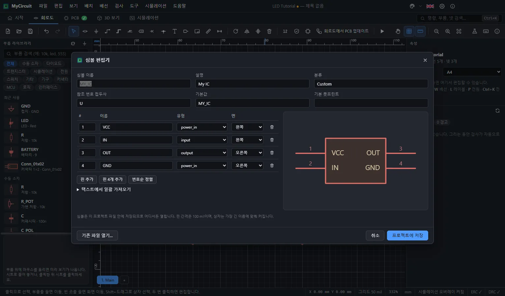
- 위쪽에 심볼 이름(공백은
_로 바뀜), 설명, 분류(라이브러리 패널의 분류 칩이 됨), 참조 번호 접두사, 기본값, 기본 풋프린트를 입력합니다. - 핀 표에서 번호, 이름, 유형(input, output, bidir, tristate, passive, power_in, power_out, open_collector, no_connect, unspecified), 위치(왼쪽/오른쪽/위/아래)를 정합니다. 핀 추가, 핀 4개 추가(왼쪽·오른쪽에 번갈아 추가), 번호순 정렬, 휴지통 버튼(삭제)을 씁니다.
- 핀이 많으면 텍스트에서 일괄 가져오기를 펼치고 한 줄에 하나씩
번호, 이름, 유형, 위치를 붙여 넣은 뒤 가져오기를 누릅니다(쉼표, 탭, 세미콜론 구분. 유형·위치를 빼면 bidir/왼쪽). - 오른쪽 미리 보기는 입력할 때마다 갱신됩니다. 핀 간격은 100 mil이고, 상자 폭은 가장 긴 핀 이름에 맞춰 커집니다.
- 프로젝트에 저장을 누르면 심볼이 프로젝트 파일에 저장되고, 라이브러리에 나타나며, 곧바로 배치 도구가 그 심볼로 시작됩니다.
내장 심볼과 같은 이름은 쓸 수 없고(“다른 심볼 이름을 정하세요”), 핀 번호가 중복되면 저장되지 않습니다. 이미 만든 사용자 심볼을 고치려면 기존 파일 열기…로 목록에서 고릅니다. 사용자 심볼에는 시뮬레이션 모델이 없습니다.
6.6풋프린트 마법사
는 치수를 입력해 표준 형태의 풋프린트를 만듭니다.
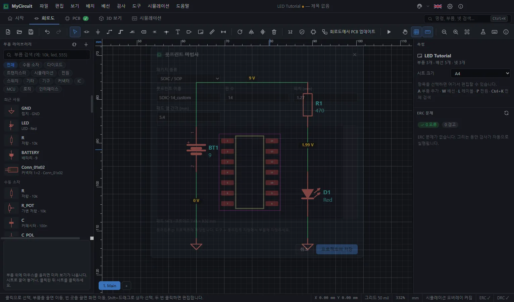
| 패키지 종류 | 입력 항목 | 만들어지는 것 |
|---|---|---|
| 핀 헤더 | 열 수(1–2), 열당 핀 수(최대 40), 피치 | 스루홀 1.7 mm 패드/1.0 mm 드릴, 1번 사각형 |
| DIP | 핀 수(짝수, 4–64), 열 간격 | 2.54 mm 피치 스루홀 1.6 mm 패드/0.8 mm 드릴 |
| SOIC / SOP | 핀 수(짝수, 4–64), 피치, 패드 열 간격 | SMD 1.55 mm × (피치×0.47) 패드 |
| QFP | 변당 핀 수(2–40), 피치, 몸체 크기 | 네 변 SMD 패드 |
| 2패드 칩 (R/C/L) | 길이, 폭 | SMD 두 패드 |
| 사용자 패드 | 3D 몸체 높이, 패드 표(번호, 모양: 사각형/둥근 사각형/원/타원, X, Y, W, H, 드릴), 패드 추가 | 표에 적은 그대로의 패드. 드릴이 0이면 윗면 SMD 패드, 드릴 값이 있으면 도금 관통 홀 패드. 실크 외곽선과 코트야드는 패드를 0.5 mm 감싸도록 자동 생성, 3D는 상자 모델 |
미리 보기 아래에 패드 수와 코트야드 크기가 표시됩니다. 프로젝트에 저장하면 프로젝트 파일에 들어가며, 같은 이름이 있으면 덮어씁니다. 만든 풋프린트는 풋프린트 지정 창과 부품 속성의 풋프린트 칸에서 이름으로 고를 수 있습니다.
6.7프로젝트 로컬 라이브러리
심볼 편집기와 풋프린트 마법사로 만든 부품은 .mycircuit 파일의 library 항목에 저장됩니다. 따라서 파일만 있으면 다른 컴퓨터에서도 그대로 열립니다. 대신 다른 프로젝트에서 쓰려면 그 프로젝트에서 다시 만들어야 합니다(또는 부품을 복사해 붙여 넣은 뒤 같은 심볼을 만드세요). 예제 “사용자 심볼과 풋프린트”가 이 기능을 보여 줍니다.
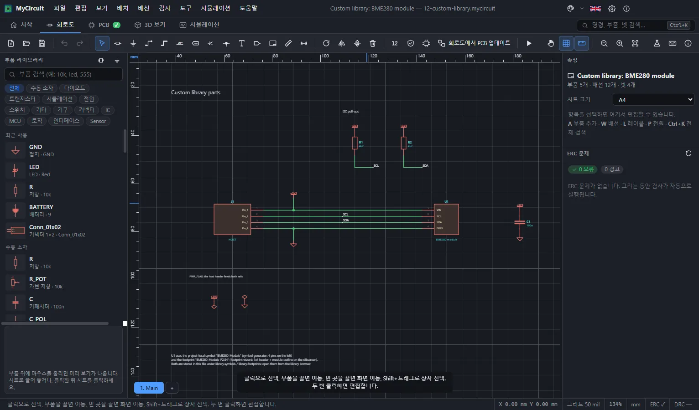
6.8풋프린트 지정 대화상자
은 모든 부품의 풋프린트를 한 화면에서 정합니다. 왼쪽 표(참조 번호, 값, 심볼, 풋프린트)에서 부품을 클릭하고, 오른쪽의 필터 칸으로 풋프린트를 찾아 클릭합니다. ★가 붙은 풋프린트는 심볼이 추천하는 것으로 목록 맨 위에 옵니다. 마우스를 올리면 아래에 패드가 미리 보입니다. 적용으로 저장하고, 빈 항목에 첫 번째 추천 사용은 비어 있는 부품에 추천 첫 번째를 넣고 저장합니다. 저장 후 “F8을 눌러 PCB를 업데이트하세요.”라는 안내가 나옵니다.
7PCB 편집기
PCB 탭(F3)에서는 회로도에서 넘어온 풋프린트를 기판 위에 배치하고, 구리 트랙·비아·구리 영역으로 연결합니다.
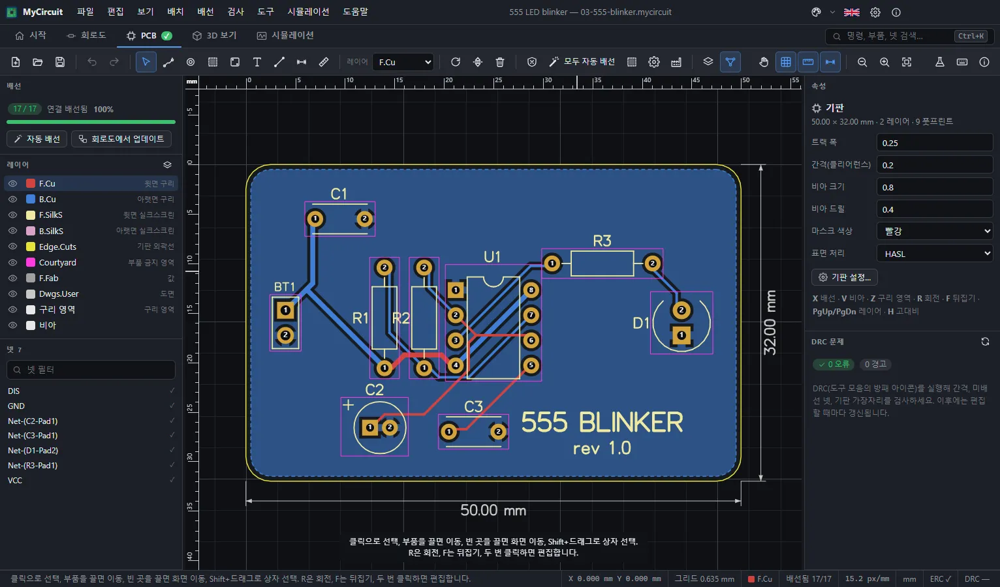
7.1단위, 좌표, 그리드
- PCB의 내부 단위는 mm이고 y축은 아래로 증가합니다. 상태 표시줄은 단위 설정에 따라 mm(소수 3자리) 또는 mil로 표시합니다.
- PCB 그리드 기본값은 0.635 mm(25 mil)입니다. 상태 표시줄 그리드 칸이나 설정에서 0.05 / 0.1 / 0.127 / 0.25 / 0.5 / 0.635 / 1 / 1.27 / 2.54 mm 중에서 고릅니다.
- 확대율은 px/mm로 표시되며 0.5~400 px/mm 범위입니다.
7.2회로도에서 PCB 업데이트 (F8)
F8, , 회로도 도구 모음 버튼, PCB 왼쪽 패널의 회로도에서 업데이트로 실행합니다. 하는 일은 다음과 같습니다.
- 참조 번호가 없는 부품이 있으면 먼저 참조 번호를 부여합니다.
- 회로도의 각 부품(전원 심볼·PWR_FLAG 제외)에 대해:
- 새 부품: 기판 외곽선 오른쪽 5 mm 바깥에 세로로 줄지어 풋프린트를 추가합니다(높이 40 mm 또는 기판 높이를 넘으면 다음 열).
- 이미 있는 부품(부품 ID 또는 참조 번호로 찾음): 위치·회전·면은 그대로 두고 참조 번호, 값, 풋프린트, 패드별 넷을 갱신합니다.
- DNP 부품, 풋프린트가 없거나 라이브러리에 없는 부품은 추가하지 않습니다(알림에 “풋프린트 없음: R5, …”).
- 회로도에서 지워진 부품의 풋프린트는 기판에서도 지웁니다(회로도와 무관하게 기판에만 있는 항목은 그대로).
- 넷 이름이 바뀌었으면(예: 레이블을 붙여
Net-(R1-Pad2)→LED_A) 그 넷의 기존 트랙·비아·구리 영역의 넷 이름도 새 이름으로 바꿉니다.
끝나면 PCB 탭으로 바뀌고 화면에 맞추며, “PCB 업데이트됨 — 3개 추가, 1개 업데이트”처럼 요약을 보여 줍니다. 바뀐 것이 없으면 “PCB가 이미 최신 상태입니다.”
풋프린트 속성 대화상자에서 풋프린트를 바꿔도 다음 PCB 업데이트 때 회로도의 값으로 덮어써집니다. 풋프린트는 회로도(부품 속성 또는 풋프린트 지정)에서 바꾸세요.
7.3레이어
| 레이어 | 설명 | 활성화 가능 |
|---|---|---|
F.Cu / B.Cu | 윗면 / 아랫면 구리 | 예 |
In1.Cu … In4.Cu | 내층 구리(4층: In1, In2 / 6층: In1~In4) | 예 |
F.SilkS / B.SilkS | 윗면 / 아랫면 실크스크린(글자, 외형선) | 예 |
Edge.Cuts | 기판 외곽선 | 예 |
Courtyard (F.CrtYd) | 부품 금지 영역(분홍 사각형). 설정 코트야드 표시와 함께 켜고 끔 | 아니요 |
F.Fab | 값(제조 도면용). 기본은 숨김 | 아니요 |
Dwgs.User | 사용자 도면(메모, 선) | 예 |
| 구리 영역 / 비아 | 모든 구리 영역 / 모든 비아의 표시 | 아니요 |
- 활성 레이어: 새 트랙·구리 영역·텍스트·선이 그려질 레이어입니다. 도구 모음의 레이어 선택 상자, 왼쪽 패널의 레이어 행 클릭, PgUp/PgDn(구리 레이어 사이를 순환)로 바꿉니다. 활성 레이어는 맨 위에 그려지고, 겹친 항목을 클릭하면 활성 레이어의 것이 먼저 선택됩니다.
- 표시/숨기기: 레이어 행의 눈 아이콘. 숨긴 레이어의 항목은 클릭이나 영역 선택으로 선택되지 않습니다.
- 고대비(H, ): 활성 레이어가 아닌 구리 레이어를 25% 밝기로 어둡게 그려 한 층에 집중할 수 있게 합니다.
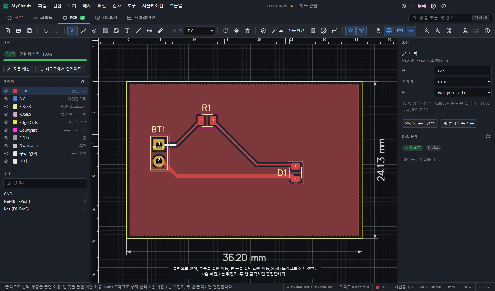
7.4풋프린트 배치
- 이동: 풋프린트를 끌면 그 원점이 PCB 그리드에 맞춰집니다(여러 개를 함께 옮기면 모두 같은 거리만큼). 방향키로 그리드 한 칸씩 옮깁니다.
- 회전: R 90° 반시계, Shift+R 90° 시계 방향. 풋프린트 하나는 자기 원점을 중심으로, 여러 항목은 선택 영역 중심을 기준으로 돕니다. 속성 패널/대화상자에서는 임의 각도(15° 단위 입력 상자)도 넣을 수 있습니다.
- 뒤집기: F() — 풋프린트를 반대 면으로 옮깁니다. 좌우가 거울 대칭이 되고 회전 방향이 반대가 되며, SMD 패드는 B.Cu로, 실크는 B.SilkS로 갑니다. 선택한 트랙·텍스트·그래픽·구리 영역도 반대 면 레이어로 바뀝니다. 여러 개를 함께 뒤집으면 선택 중심을 기준으로 좌우가 바뀝니다.
- 잠금: L 또는 오른쪽 클릭 → 잠금. 잠긴 풋프린트는 이동·회전·뒤집기·삭제가 되지 않고(삭제 시 “잠긴 풋프린트 n개는 유지했습니다.”), 윈도 영역 선택에도 잡히지 않습니다. 선택하면 자물쇠 표시가 보입니다.
- 속성 대화상자: 더블클릭 또는 E — X/Y(mm), 회전, 면(윗면/아랫면), 풋프린트, 잠김, 참조 번호 숨기기.
- 정렬: 은 잠기지 않은 모든 풋프린트를 참조 번호 순으로 기판 안 왼쪽 위부터 2 mm 간격의 격자로 늘어놓습니다. F8 직후 대략적인 배치를 시작할 때 편리합니다.
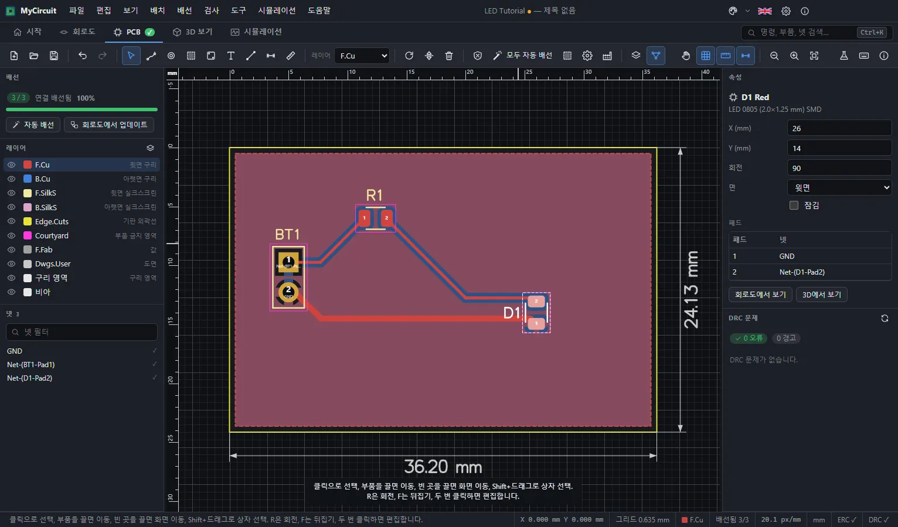
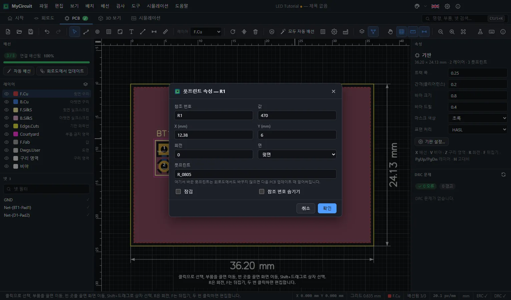
7.5선택
선택 방법은 회로도와 같습니다(클릭, Shift/Ctrl+클릭, Shift/Ctrl+드래그 상자 선택 — 왼쪽→오른쪽 윈도, 오른쪽→왼쪽 크로싱, Ctrl+A). 수정자 없이 빈 곳을 끌면 화면이 이동합니다(2.9). 추가로:
- 구리(패드·트랙·비아·영역)를 클릭하면 그 넷이 강조되고 래츠네스트도 그 넷만 보입니다. 빈 곳을 클릭하거나 Esc로 해제합니다.
- 트랙을 더블클릭하면 그 트랙과 이어진 모든 트랙·비아(한 연결 전체)를 선택합니다. 트랙 속성 패널과 오른쪽 클릭 메뉴의 연결된 구리 선택도 같습니다.
- 기판 외곽선의 가장자리를 클릭하면 외곽선 전체가 선택되어 함께 옮기거나 회전할 수 있습니다(삭제는 불가).
- Ctrl+D 복제는 트랙·비아·영역·텍스트·그래픽·치수를 오른쪽 아래로 2 mm 옮겨 복사합니다. 풋프린트는 복제할 수 없습니다(회로도에서 부품을 복제하세요).
7.6대화형 배선
X()로 시작합니다.
- 시작: 패드, 비아, 트랙 끝을 클릭합니다. 활성 레이어의 구리를 우선 찾고, 없으면 다른 레이어의 구리에서 시작합니다. 시작한 구리의 넷이 배선의 넷이 됩니다(빈 곳에서 시작하면 그 자리 구리의 넷 또는 넷 없음). SMD 패드에서 시작하면 활성 레이어가 자동으로 그 패드의 면으로 바뀌고, 스루홀 패드와 비아에서는 현재 활성 레이어로 배선합니다.
- 트랙 폭: 넷 클래스에 정한 폭(없으면 기본 트랙 폭)으로 시작합니다. 상태 표시줄과 캔버스 도움말에 “넷 … 배선 중 — 폭 0.25 mm”가 나옵니다. 배선 중에 W를 누르면 한 단계 넓게, Shift+W는 한 단계 좁게 바뀝니다: 0.15 → 0.2 → 0.25 → 0.3 → 0.4 → 0.5 → 0.6 → 0.8 → 1.0 → 1.5 → 2.0 mm.
- 45° 자세: 커서까지 직선 + 45° 대각선 두 구간의 미리 보기가 그려집니다. 기본은 “직선 먼저, 대각선 나중”이며 /를 누르면 “대각선 먼저”로 바뀝니다. 커서는 같은 넷의 패드·비아·트랙 끝에 달라붙고, 그 밖에는 PCB 그리드에 맞춰집니다.
- 실시간 간격 검사: 미리 보기 둘레의 옅은 띠는 간격(클리어런스) 영역입니다. 미리 보기 구간이 다른 넷의 구리(패드·트랙·비아)에 간격 규칙보다 가깝거나 기판 가장자리 간격을 어기면 미리 보기가 빨간색으로 바뀌고 “간격 위반 — 이 구간이 다른 구리와 너무 가깝습니다.”라고 표시됩니다(그래도 클릭하면 그려지며, DRC에서 오류로 잡힙니다). 넷 클래스의 간격 중 큰 값이 적용됩니다.
- 꺾임점: 클릭할 때마다 미리 보기가 트랙으로 확정됩니다. Backspace는 마지막 구간을 지웁니다.
- 비아와 층 전환: 배선 중 V를 누르면 커서 위치까지 트랙을 확정하고 그 끝에 비아를 놓은 뒤 레이어를 바꿉니다. F.Cu ↔ B.Cu는 서로, 내층은 다음 구리 레이어로 넘어갑니다. 비아 크기는 넷 클래스 또는 기본 규칙을 따릅니다.
- 끝내기: 같은 넷의 패드·비아·다른 트랙 끝에 닿으면 자동으로 끝납니다. 직접 끝내려면 Enter, Esc, 더블클릭, 오른쪽 클릭. 한 번의 배선(여러 구간·비아 포함)이 한 번의 실행 취소 단계입니다.
배선 모드
트랙 구간을 확정할 때 다른 넷의 구리에 간격 규칙보다 가까우면 어떻게 할지를 메뉴의 세 항목(또는 설정 → 배선 → 배선 모드)으로 고릅니다.
| 모드 | 동작 |
|---|---|
| 배선: 충돌 표시 (기본) | 구간을 그대로 놓습니다. 미리 보기가 빨갛게 바뀌어 경고하고, DRC가 오류로 잡습니다. |
| 배선: 밀어내기 | 같은 레이어에서 가까운 다른 넷의 트랙을 옆으로 밀어 간격을 확보합니다. 밀린 트랙은 평행하게 움직이고, 끝이 이웃 트랙과 이어져 있으면 그 이웃을 따라 미끄러지며, 패드·비아에 붙은 끝은 그대로 두고 45° 꺾임을 넣습니다. 밀린 트랙이 다른 트랙에 닿으면 그 트랙도 밀립니다(2단계까지). 패드, 비아, NPTH 구멍, 기판 가장자리는 밀지 않으므로, 이것들이 막으면 “밀어내기: 패드, 비아, 기판 가장자리 또는 너무 많은 트랙이 막고 있어 구간을 놓지 않았습니다.”라고 알리고 그 구간에서 멈춥니다. |
| 배선: 장애물에서 멈춤 | 간격을 어기는 구간은 놓지 않고 “간격 위반: 구간을 놓지 않았습니다”라고 알립니다. |
설정 → 배선의 배선 중 간격 경고를 끄면 미리 보기의 빨간 경고를 표시하지 않습니다.
배선 후 트랙 폭을 바꾸려면 트랙을 선택하고 속성 패널의 폭을 고치거나, 여러 트랙을 선택해 한꺼번에 바꿉니다. 넷 클래스 폭 사용 버튼은 선택한 트랙을 넷 클래스의 폭으로 되돌립니다. 속성 패널에는 IPC-2221 근사로 계산한 허용 전류(1 oz 구리, 10 °C 상승, 내층/외층 구분)도 표시됩니다.
7.7비아
V(배선 중이 아닐 때)는 비아 도구입니다. 커서 위치에 비아 크기의 반투명 원이 보이고, 클릭하면 그 자리에 비아를 놓습니다. 비아는 아래에 있는 구리(패드·트랙 끝·비아·구리)의 넷을 자동으로 따르며, 넷 클래스가 있으면 그 지름·드릴을 씁니다. 비아는 모든 구리 레이어를 관통합니다(블라인드/베리드 비아는 없음). 속성 패널에서 지름, 드릴, 넷, X, Y를 바꿀 수 있습니다.
7.8트랙 폭과 넷 클래스
트랙 폭·간격·비아 크기는 다음 순서로 정해집니다.
- 넷이 어떤 넷 클래스의 넷 목록에 있으면 그 클래스의 트랙 폭, 간격, 비아 지름, 비아 드릴
- 아니면 설계 규칙의 기본값(트랙 폭 0.25 mm, 간격 0.2 mm, 비아 0.8/0.4 mm)
두 넷 사이의 간격은 기본 간격과 두 넷의 클래스 간격 중 가장 큰 값입니다. 새 프로젝트에는 Power 클래스(트랙 0.5 mm, 간격 0.25 mm, 비아 1.0/0.5 mm; GND, VCC, +5V, +3V3, +12V, -12V, VBAT)가 들어 있습니다. 넷 클래스는 에서 편집합니다(10.5).
7.9구리 영역 (Zone)
구리 영역(구리 붓기, pour)은 다각형 안을 구리로 채우되 다른 넷의 구리 주변은 간격만큼 비워 두는 기능입니다. 보통 GND 평면을 만들 때 씁니다.
그리기
- 구리 레이어를 활성으로 하고 Z를 누릅니다.
- 꼭짓점을 차례로 클릭합니다(그리드에 맞춤). 점선으로 다각형이 미리 보입니다.
- 더블클릭이나 Enter로 닫습니다(꼭짓점이 3개 미만이면 “다각형에는 꼭짓점이 3개 이상 필요합니다.”). Esc는 취소.
- 새 구리 영역 대화상자에서 넷(기본: GND/AGND/DGND/VSS 중 있는 것, 없으면 첫 넷), 레이어, 간격(mm, 기본 0.3), 우선순위, 패드에 써멀 릴리프 적용을 정하고 구리 영역 만들기.
채우기 규칙
- 영역 안의 다른 넷 패드·트랙·비아 주변은 max(영역 간격, 기본 간격)만큼 비워집니다. 넷이 없는 패드도 비워지고, NPTH 구멍 주변도 비워집니다.
- 같은 넷의 패드는 써멀 릴리프로 연결됩니다: 패드 둘레를 간격만큼 비운 뒤 네 방향 스포크(폭 = max(0.3 mm, 패드 짧은 변 × 0.45, 넷 클래스 트랙 폭 × 0.8))로 잇습니다. 스포크가 다른 넷의 트랙이나 비아에 걸리면 그 스포크만 생략됩니다. 써멀 릴리프를 끄면 패드가 영역에 그대로 묻힙니다. 영역 다각형 밖에 있는 패드에는 스포크를 만들지 않습니다.
- 같은 넷의 트랙과 비아는 영역에 그대로 합쳐집니다.
- 우선순위: 같은 레이어에서 다른 넷의 영역이 겹치면 우선순위가 높은 영역이 이기고, 낮은 쪽은 높은 영역 둘레를 간격만큼 비웁니다. 우선순위가 같으면 DRC가
zone_overlap오류를 냅니다. - 연결성: 패드·트랙 끝·비아가 같은 넷 영역의 다각형 안에 있으면 그 영역을 통해 연결된 것으로 봅니다. 그래서 GND 영역을 만들면 영역 안의 GND 패드 사이 래츠네스트가 사라집니다. 영역은 화면에서 반투명하게 그려지고 외곽이 점선으로 표시됩니다.
연결성 판정은 “같은 넷의 영역 다각형 안에 있는가”만 봅니다. 영역이 다른 넷의 트랙에 의해 실제로 둘로 갈라져 섬이 생겨도 연결된 것으로 계산될 수 있습니다. 좁은 곳을 지나는 GND 연결은 3D 보기나 거버 뷰어로 실제 채움을 확인하세요.
편집과 기판 전체 붓기
- 영역은 외곽 근처를 클릭하면 선택되고(안쪽은 다른 항목보다 우선순위가 낮음), 더블클릭하거나 오른쪽 클릭 → 구리 영역 속성…으로 속성을 고칩니다. 속성 패널에서 넷, 레이어, 간격, 우선순위, 써멀 릴리프를 바로 바꿀 수 있습니다. 끌면 다각형 전체가 이동합니다.
- : 넷(기본 GND), 레이어(F.Cu/B.Cu 체크), “이 넷의 기존 구리 영역 대체”를 고르고 만들기. 기판 외곽선을 (가장자리 간격 + 0.2 mm)만큼 안쪽으로 줄인 다각형으로 영역을 만듭니다(간격 0.3 mm, 써멀 켬, 우선순위 0). 기판에 넷이 없으면 “먼저 회로도에서 PCB를 업데이트하세요.”라고 안내합니다.
7.10기판 외곽선
- O(기판 외곽선 도구)로 사각형을 드래그하면 그 크기의 사각형 외곽선으로 즉시 바뀝니다(그리드 한 칸보다 커야 함). 드래그 중 크기가 mm로 표시되고, 끝나면 “기판 외곽선을 W × H mm로 설정했습니다”. 설정의 기판 외곽선 모서리 반경이 0보다 크면 둥근 모서리가 됩니다.
- 사각형이 아닌 모양은 꼭짓점을 차례로 클릭하고 더블클릭 또는 Enter로 닫습니다(3개 이상).
- 에서 폭·높이·모서리 반경을 숫자로 입력하고 “외곽선을 이 사각형으로 바꾸기”를 체크해 적용할 수도 있습니다(왼쪽 위 모서리는 유지).
- 외곽선은 하나의 닫힌 다각형입니다. 기판 안의 구멍·홈은
Edge.Cuts레이어에 그래픽 선(G)으로 그립니다(7.11). 외곽선 가장자리를 클릭하면 선택되어 이동·회전할 수 있고, 속성 패널에 꼭짓점 수와 크기가 표시됩니다. - 외곽선은
Edge.Cuts거버(.gm1)로 출력되며, DRC는 외곽선의 유효성(점 3개 이상, 면적, 자기 교차)과 가장자리 간격을 검사합니다.
7.11텍스트와 그래픽 선
- T(텍스트): 클릭한 곳에 글자를 입력합니다. 활성 레이어가
F.SilkS/B.SilkS/Dwgs.User면 그 레이어에, 구리 레이어면 그 면의 실크스크린(F.Cu → F.SilkS, B.Cu → B.SilkS)에 놓이며,Edge.Cuts에는 절대 놓이지 않습니다(그때는 F.SilkS). 크기 기본 1.5 mm. 아랫면 글자는 출력에서 자동으로 거울 반전됩니다. 더블클릭으로 내용을 고치고, 속성 패널에서 크기·회전·레이어를 바꿉니다. 거버에는 내장 벡터(스트로크) 글꼴로 출력되며 영문·숫자·기호를 지원합니다. - G(그래픽 선, 전용 “선” 아이콘): 클릭할 때마다 한 구간씩 선(폭 0.15 mm)이 추가되고 더블클릭으로 끝냅니다. 활성 실크스크린,
Dwgs.User,Edge.Cuts레이어에 그려지고, 구리 레이어가 활성이면 그 면의 실크스크린에 그려집니다.
Edge.Cuts에 그린 선은 기판 절단선(컷아웃)으로 외곽선 거버(.gm1)에 함께 출력됩니다. 기판 안에 구멍이나 홈을 낼 때 씁니다.
7.12측정과 치수
- M(측정): 두 점을 클릭하면 거리(mm), Δx, Δy, mil 값이 선 위에 표시됩니다. 구리 중심에 달라붙습니다. 다시 클릭하면 새 측정을 시작하고 Esc로 지웁니다. 측정은 저장되지 않습니다.
- D(치수): 두 점을 클릭하면 도면에 치수선(2 mm 오프셋)을 추가합니다. 치수는 프로젝트에 저장됩니다.
7.13래츠네스트와 넷 패널
래츠네스트(에어와이어)는 같은 넷이지만 아직 구리로 이어지지 않은 부분을 잇는 가는 선입니다. 넷마다 구리로 이미 이어진 덩어리(섬)들을 최소 신장 트리로 연결하는 가장 짧은 선들을 그립니다. 나 도구 모음 버튼으로 켜고 끕니다. 넷을 강조하면 그 넷의 래츠네스트만 보입니다.
- 왼쪽 패널 배선: “배선된 연결 / 전체 연결”과 진행률. 연결 수는 넷마다 (패드 수 − 1)의 합입니다.
- 넷 목록: 넷 이름과 남은 미배선 수(“1 열림”) 또는 ✓. 클릭하면 강조(다시 클릭하면 해제), 더블클릭하면 그 넷만 자동 배선합니다. 필터 칸으로 넷을 찾습니다.
7.14정리와 보고서
| 명령 | 동작 |
|---|---|
| 길이 0 트랙과 중복 트랙을 지우고, 한 직선 위에서 이어지는 같은 넷·같은 폭·같은 레이어 트랙을 하나로 합칩니다(그 점에 다른 트랙 끝, 비아, 패드가 없을 때만). 구리 레이어를 두 개 이상 잇지 않는 쓸모없는 비아도 지웁니다. 결과: “정리: n개 제거, m개 병합.” | |
| 확인 후 기판의 모든 트랙·비아를 지웁니다(구리 영역은 유지). 자동 배선을 다시 하고 싶을 때. | |
| 넷별 트랙 길이(mm), 구간 수, 비아 수와 전체 배선 진행률 | |
| 회로도 기준 넷과 연결 핀 목록(내보내기 버튼) |
7.15속성 패널 (PCB)
| 선택 | 편집 항목 |
|---|---|
| 없음(기판) | 크기·층 수·풋프린트 수 요약, 트랙 폭, 간격, 비아 크기, 비아 드릴, 마스크 색상, 표면 처리, 기판 설정… |
| 풋프린트 | X, Y(mm), 회전, 면, 잠김, 패드-넷 표(최대 40개), 회로도에서 보기, 3D에서 보기 |
| 트랙 | 넷·길이, 폭, 레이어, 넷, 허용 전류, 연결된 구리 선택, 넷 클래스 폭 사용 |
| 비아 | 지름, 드릴, 넷, X, Y |
| 구리 영역 | 넷, 레이어, 간격, 우선순위, 써멀 릴리프 |
| 텍스트 | 텍스트, 크기(mm), 회전, 레이어 |
| 기판 외곽선 | 꼭짓점 수와 크기, 기판 설정… |
| 여러 항목 | 회전, 뒤집기, 삭제 (트랙만이면 폭 일괄 변경) |
7.16오른쪽 클릭 메뉴 (PCB)
선택 도구에서 오른쪽 클릭하면: 풋프린트 위 — 속성…, 회로도에서 보기, 3D에서 보기, 잠금/잠금 해제 / 구리 영역 위 — 구리 영역 속성… / 구리 위 — 넷 ○○ 강조, 넷 ○○ 자동 배선, (트랙·비아) 연결된 구리 선택 / 선택이 있을 때 — 회전, 반대 면으로 뒤집기, 복제, 삭제 / 항상 — 트랙 배선, 화면에 맞추기. 다른 도구에서는 오른쪽 클릭이 진행 중인 작업을 끝내거나 선택 도구로 돌아갑니다.
7.17다층 기판
에서 구리 레이어를 2/4/6으로 바꿉니다. 4층은 F.Cu, In1.Cu, In2.Cu, B.Cu, 6층은 In1~In4가 추가됩니다. 층 수를 줄이면 없어진 레이어의 트랙과 영역은 B.Cu로 옮겨집니다. 내층에는 주로 전원/GND 평면을 구리 영역으로 만들고, 비아로 연결합니다(예제 “4층 기판의 ATtiny85”).
7.18보드 크기 표시와 눈금자
PCB 캔버스에는 기판 외곽선의 가로·세로 크기가 치수선과 함께 자동으로 표시됩니다(아래쪽 가로, 오른쪽 세로, mm 단위 — 예: “40.00 mm”, “24.00 mm”). 외곽선을 바꾸면 즉시 갱신됩니다. 도구 모음 오른쪽의 보드 크기 표시 버튼(, 설정 → 단위와 그리드 → PCB에 보드의 가로·세로 크기 표시)으로 켜고 끕니다. 눈금자와 그리드는 회로도와 같습니다(2.13).
7.19길이 맞춤
은 이미 배선된 넷의 길이를 늘려(구불구불한 미앤더) 목표 길이에 맞춥니다. 버스 신호의 길이를 맞출 때 씁니다.
- 표에는 트랙이 있는 넷과 현재 길이(mm)가 긴 순서로 나옵니다(8개씩 페이지). 맞출 넷을 체크합니다(강조된 넷은 미리 체크됨). 아래에 “선택한 넷 중 가장 긴 길이”가 표시됩니다.
- 목표: 선택한 넷 중 가장 긴 넷에 맞춤 또는 고정 길이(스테퍼, mm).
- 미앤더 모양: 둥근 사각형(둥근 굴곡) / 모따기 (45°) / 직각. 면(진행 방향의 어느 쪽으로 구부릴지): 양쪽 / 왼쪽 / 오른쪽. 간격: 구불구불한 다리 사이 간격(0.1~3 mm). 허용 오차: ± 0.01 ~ 1 mm.
- 맞추기를 누르면 각 넷의 가장 긴 직선 구간에 미앤더를 넣습니다. 각 굴곡의 높이는 다른 넷의 구리와 기판 가장자리 간격을 지키도록 줄어들거나 생략되고, 필요한 최소 개수의 굴곡을 균일하게 늘려 목표 길이에 맞춥니다. 결과는 한 번의 실행 취소 단계이며 “넷 n개를 L mm로 맞췄습니다 (최대 길이 차 s mm).”가 표시됩니다.
- 공간이 없으면 “맞출 것이 없습니다: 이미 길이가 같거나 미앤더를 넣을 자리가 없습니다.”라고 알립니다. 넷의 길이는 트랙 길이와 비아 길이를 더한 값입니다.
7.20차동 쌍 배선
은 이름으로 짝지어진 두 넷(예: USB_D+/USB_D-, CLK_P/CLK_N)을 일정한 간격의 평행한 두 트랙으로 함께 배선합니다.
- 표에는 찾은 쌍(쌍 이름, P 넷, N 넷, 현재 길이 차)이 나옵니다. 하나를 고르고 레이어, 트랙 폭, 간격(트랙 사이)을 정한 뒤 배선을 누릅니다.
- 두 넷의 기존 트랙은 바뀝니다. 각 넷에 해당 레이어의 패드가 두 개씩 있어야 하며, 두 쌍의 패드 중간을 잇는 중심선을 A* 탐색으로 찾은 뒤 양쪽으로 띄워 두 트랙을 만들고, 패드까지 짧은 팬아웃으로 잇습니다.
- 끝나면 “USB_D+ / USB_D- 배선됨: a / b mm, 길이 차 s mm.”가 표시됩니다. 쌍을 찾지 못하면 “차동 쌍을 찾지 못했습니다. USB_D+ / USB_D- 나 CLK_P / CLK_N처럼 넷 이름을 붙이세요.”라고 알립니다.
8자동 배선기
8.1실행 방법
- (Ctrl+Shift+A), PCB 도구 모음의 모두 자동 배선, 왼쪽 패널의 자동 배선: 배선되지 않은 모든 연결.
- : 먼저 패드나 트랙을 클릭해 넷을 강조한 뒤 실행(강조된 넷이 없으면 “먼저 패드나 트랙을 클릭해 넷을 고르세요.”).
- 넷 패널에서 넷을 더블클릭하거나, 구리 위 오른쪽 클릭 → 넷 ○○ 자동 배선.
실행 중에는 “연결 n개 자동 배선 중…” 알림이 나오고, 끝나면 결과가 하나의 실행 취소 단계로 추가됩니다(Ctrl+Z로 한 번에 되돌림). 모두 성공하면 “모든 연결을 배선했습니다 (트랙 n개, 비아 m개, t ms).”, 일부 실패하면 “연결 r개를 배선했고, f개는 배선하지 못했습니다.”가 표시됩니다.
8.2동작 원리
- 격자: 기판을 설정 → 배선 → 자동 배선 그리드(기본 0.25 mm, 0.05~0.5 mm) 간격의 격자 노드로 나누고(노드가 300만 개를 넘는 큰 기판은 간격을 두 배씩 늘림), 장애물 지도는 그 절반 간격으로 만들어 대각선 이동이 패드 모서리를 스치지 않게 합니다.
- 장애물: 다른 넷의 패드·트랙·비아 둘레(간격 + 트랙 폭/2 + 양자화 여유), 기판 가장자리(가장자리 간격), NPTH 구멍을 막습니다. 넷 클래스별로(트랙 폭·비아 크기·간격 조합마다) 지도를 따로 만듭니다. 구리 영역은 장애물이 아닙니다(영역이 알아서 비켜 감).
- 비아: 비아용 지도가 따로 있어 모든 구리 레이어의 장애물, 홀 간격, 가장자리를 함께 봅니다. SMD 패드 위에는 비아를 놓지 않습니다(via-in-pad 금지). 비아 비용은 이동 20칸에 해당합니다.
- 탐색: 래츠네스트의 각 연결을 짧은 것부터 차례로, 출발 섬(이미 이어진 구리 전체)의 모든 노드에서 도착 섬의 아무 노드까지 A* 탐색으로 찾습니다. 8방향(직선·45°) 이동이며, 방향을 바꿀 때 비용(45° 0.35, 90° 0.9, 135° 6)을 더해 깔끔한 경로를 선호하고, 레이어마다 선호 방향(짝수 층 가로, 홀수 층 세로)에 약한 가산점을 줍니다.
- 확정: 찾은 경로는 일직선 구간을 합쳐 트랙과 비아로 만들고, 끝을 패드·비아 중심에 정확히 맞춘 뒤 즉시 장애물 지도에 반영해 다음 연결이 피해 가게 합니다.
- 재시도(rip-up and retry): 실패한 연결이 있으면 실패한 것부터 먼저 배선하는 순서로 처음부터 다시 시도하고(최대 3회), 더 많이 배선한 결과를 씁니다.
- 시간 제한: 전체 15초. 넘으면 그때까지의 결과를 씁니다.
8.3제약 사항
- 기본값에서 자동 배선기는 F.Cu와 B.Cu 두 레이어만 씁니다. 설정 → 배선 → 자동 배선 레이어를 모든 구리 레이어로 바꾸면 4/6층 기판의 내층도 씁니다(내층을 전원 평면으로 쓸 때는 바깥 레이어만 두세요).
- 격자 기반이라 0.25 mm 격자에 맞지 않는 미세 피치(예: 0.5 mm 피치 QFP) 사이로는 통과하지 못할 수 있습니다.
- 기존 트랙은 지우지 않습니다. 손으로 그린 트랙이 길을 막으면 그 연결은 실패할 수 있습니다.
- 차동 쌍, 길이 맞추기, 임피던스 제어는 지원하지 않습니다.
8.4잘 배선하는 요령
- 먼저 부품을 래츠네스트가 짧고 덜 교차하도록 배치하세요. 배치가 결과의 대부분을 결정합니다.
- 전원/GND는 구리 영역(7.9)으로 처리하면 배선할 연결이 크게 줄어듭니다. 영역을 먼저 만들고 자동 배선하면 GND 연결은 건너뜁니다.
- 중요한 신호나 굵은 전원선은 먼저 손으로 배선하고 나머지를 자동 배선하세요.
- 실패하면 후 부품을 조금 옮겨 다시 시도하거나, 간격·트랙 폭을 조정합니다.
- 자동 배선 후 와 DRC를 실행하세요.
9DRC (설계 규칙 검사)
9.1DRC 실행
, PCB 도구 모음의 방패 버튼, 상태 표시줄의 DRC 칸, 문제 목록의 새로 고침 버튼으로 실행합니다. 결과는 “DRC: 오류 n개, 경고 m개” 알림, 오른쪽 DRC 문제 목록(코드와 레이어 표시), PCB 탭 배지, 캔버스의 원+× 표시(빨강 오류, 노랑 경고)로 나타납니다. 항목을 클릭하면 그 위치로 이동·확대하고 관련 항목을 선택합니다. 을 열 때도 DRC가 자동 실행됩니다.
한 번 DRC를 실행하면(설정 한 번 실행한 뒤에는 편집할 때마다 DRC 다시 실행이 켜져 있을 때, 기본값) 이후 편집할 때마다 DRC가 자동으로 다시 실행되어 목록과 표시가 갱신됩니다. 결과가 깨끗했던 경우도 마찬가지입니다. 다른 파일을 열면 다시 수동 실행 전 상태(“DRC —”)로 돌아갑니다.
9.2DRC 검사 항목
| 코드 | 심각도 | 의미 | 고치는 방법 |
|---|---|---|---|
missing_footprint | 오류 | 기판의 풋프린트 이름이 라이브러리에 없음(사용자 풋프린트를 지운 경우 등) | 회로도에서 올바른 풋프린트를 지정하고 F8 |
outline | 오류 | 외곽선의 점이 3개 미만, 잘못된 점, 면적 0, 자기 교차 | 외곽선 도구(O)로 다시 그리기 |
footprint_outside | 오류 | 풋프린트 코트야드가 외곽선 밖에 있거나 걸쳐 있음 | 풋프린트를 기판 안으로 옮기거나 외곽선을 키움 |
courtyard_overlap | 경고 | 같은 면 두 풋프린트의 코트야드가 겹침 | 부품 간격을 벌림(일부러 붙인 경우 무시 가능) |
track_width | 오류 | 트랙 폭 < 최소 트랙 폭(기본 0.15 mm) | 트랙 폭을 키우거나 규칙 조정 |
via_drill | 오류 | 비아 드릴 < 최소 드릴(기본 0.3 mm) | 비아 드릴 키우기 |
pad_drill | 경고 | 패드 드릴 < 최소 드릴 | 다른 풋프린트 선택 또는 제조사 능력 확인 |
annular_ring | 오류 | 비아 또는 도금 패드의 애뉼러 링((지름 − 드릴)/2) < 0.13 mm | 비아 지름을 키우거나 드릴을 줄임 |
hole_to_hole | 오류 | 두 구멍(패드·비아) 가장자리 사이 거리 < 홀 간 간격(기본 0.25 mm) | 비아를 옮김 |
clearance | 오류 | 다른 넷 구리(패드·트랙·비아) 사이 거리 < 요구 간격(넷 클래스 중 큰 값) | 트랙을 옮기거나 폭을 줄임 |
short | 오류 | 다른 넷 구리가 닿거나 겹침(거리 ≤ 0) | 잘못 그린 트랙/비아 삭제 후 다시 배선 |
no_net | 경고 | 넷이 없는 트랙/비아가 넷이 있는 구리에 닿음 | 트랙/비아의 넷을 속성 패널에서 지정하거나 삭제 |
zone_overlap | 오류 | 같은 레이어에서 다른 넷의 구리 영역이 같은 우선순위로 겹침 | 한쪽 우선순위를 올리거나 다각형을 고침 |
edge_clearance | 오류 | 구리가 기판 가장자리에서 가장자리 간격(기본 0.3 mm)보다 가깝거나 외곽선 밖에 있음 | 구리를 안쪽으로 옮김 |
dangling | 경고 | 트랙 끝이 아무것에도(같은 넷 구리나 영역) 닿지 않음 | 연결하거나 /삭제 |
silk_over_pad | 경고 | 실크스크린 선이 노출된 패드에 0.1 mm보다 가깝거나 겹침(인쇄 시 잘림) | 실크/글자를 옮김(내장 풋프린트는 모두 이 경고 없이 배치되도록 검사되어 있음) |
unconnected | 오류 | 래츠네스트가 남은 연결(미배선) | 배선하거나 구리 영역으로 연결 |
오류는 항상 경고보다 먼저 나열됩니다. 메시지는 한국어 화면에서 한국어로 표시됩니다(예: “Clearance 0.150 mm < 0.2 mm between …” → “간격 …”).
10기판 설정
(PCB 도구 모음의 톱니바퀴, 속성 패널의 버튼)은 네 개의 탭으로 이루어져 있습니다. 적용을 눌러야 저장되며 한 번의 실행 취소 단계가 됩니다. 왼쪽 아래 기본 규칙 복원은 설계 규칙과 넷 클래스를 기본값으로 되돌립니다.
10.1적층 구조 및 표면 처리
| 항목 | 선택지 | 쓰이는 곳 |
|---|---|---|
| 구리 레이어 | 2 / 4 / 6 | 편집기 레이어, 거버 파일 수, 작업 파일 |
| 두께 (mm) | 0.8 / 1.0 / 1.2 / 1.6 / 2.0 | 3D 모델, 작업 파일, README |
| 솔더 마스크 | 초록, 빨강, 파랑, 검정, 흰색, 보라, 노랑 | 3D 색, 작업 파일, README |
| 실크스크린 | 흰색, 검정, 노랑 | 3D 색, 작업 파일 |
| 표면 처리 | HASL, ENIG, OSP | 3D 패드 색(ENIG 금색, HASL 주석색, OSP 구리색), 작업 파일 |
마스크 색·표면 처리는 아무것도 선택하지 않았을 때의 속성 패널, 3D 탭 왼쪽 패널에서도 바꿀 수 있습니다.
10.2외곽선
현재 외곽선의 크기와 꼭짓점 수가 표시되고, 폭·높이·모서리 반경(mm)을 입력한 뒤 외곽선을 이 사각형으로 바꾸기를 체크하고 적용하면 왼쪽 위 모서리를 기준으로 사각형 외곽선이 됩니다. 모서리 반경은 설정에도 저장되어 외곽선 도구의 사각형 드래그에도 쓰입니다.
10.3설계 규칙
| 규칙 | 기본값 | 설명 |
|---|---|---|
| 간격(클리어런스) | 0.2 mm | 다른 넷 구리 사이 최소 거리 |
| 트랙 폭 | 0.25 mm | 넷 클래스가 없는 넷의 배선 폭 |
| 최소 트랙 폭 | 0.15 mm | DRC track_width 기준 |
| 비아 지름 | 0.8 mm | 새 비아의 바깥 지름 |
| 비아 드릴 | 0.4 mm | 새 비아의 구멍 |
| 최소 드릴 | 0.3 mm | DRC via_drill, pad_drill 기준 |
| 가장자리 간격 | 0.3 mm | 구리와 기판 가장자리 사이(배선기·DRC·접지 영역) |
| 홀 간 간격 | 0.25 mm | 구멍 가장자리 사이 최소 거리 |
애뉼러 링 최소값(0.13 mm)과 실크-패드 간격(0.1 mm)은 고정값입니다. 주문할 PCB 제조사의 공정 능력에 맞춰 규칙을 정하세요.
10.4속성 패널의 빠른 규칙
PCB에서 아무것도 선택하지 않으면 속성 패널에서 트랙 폭, 간격, 비아 크기, 비아 드릴을 바로 고칠 수 있습니다(기판 설정과 같은 값).
10.5넷 클래스
표의 각 행이 넷 클래스입니다: 이름, 트랙, 간격, 비아, 드릴, 넷(쉼표로 구분). 넷 클래스 추가로 행을 늘리고(기본 규칙 값으로 시작), 휴지통 버튼으로 지웁니다. 아래에 기판에 있는 넷 이름 목록이 표시되어 복사해 넣기 편합니다. 넷 이름은 정확히 일치해야 합니다(대소문자 구분). 한 넷이 여러 클래스에 들어 있으면 표에서 먼저 나오는 클래스가 쓰입니다.
넷 클래스는 대화형 배선의 시작 폭, 자동 배선기의 폭·간격·비아, 비아 도구, 접지 영역의 스포크 폭, DRC 간격 계산에 쓰입니다. 이미 그린 트랙의 폭은 바뀌지 않으므로, 필요하면 트랙을 선택하고 넷 클래스 폭 사용을 누르세요.
113D 보기
3D 탭(F4)은 기판과 부품을 실시간 3D로 보여 줍니다. 처음 열 때 3D 엔진을 불러오느라 잠깐 걸립니다. PCB를 고치면 3D 탭이 열려 있을 때 0.25초 뒤 자동으로 다시 만들어집니다.
11.1조작
도구 모음 맨 왼쪽의 두 버튼이 탐색 모드입니다: 회전: 왼쪽 드래그로 화면 회전(기본)과 이동 (P): 왼쪽 드래그로 화면 이동.
| 동작 | 회전 모드(기본) | 이동 모드(P) |
|---|---|---|
| 왼쪽 드래그 | 회전(궤도) | 이동 |
| 오른쪽 드래그 | 이동 | 회전 |
| 휠 / 가운데 드래그 | 확대/축소 | |
| 방향키 / Shift+방향키 | 7.5°씩 회전 / 조금씩 이동 | |
| 더블클릭 | 클릭한 지점을 중심으로 부드럽게 다가감 | |
| 1~7 | 등각 · 위 · 아래 · 앞 · 뒤 · 왼쪽 · 오른쪽 시점(도구 모음 버튼도 같음) | |
| P / G / A / C / Home | 이동 모드 전환 / 그리드 / 좌표축 / 부품 표시 / 화면에 맞추기 | |
| 부품 클릭 | 회로도와 PCB에서도 선택되고 오른쪽 패널에 참조 번호, 풋프린트, 면, 위치, 회전과 PCB에서 보기/회로도에서 보기 버튼이 나옵니다 | |
회전 속도는 설정 → 3D 보기 → 회전 속도(× 0.25 ~ × 3), 원근감은 시야각(15°~75°, 기본 35°)으로 조절합니다.
11.2표시 옵션, 그리드, 좌표축, 치수
왼쪽 패널의 체크 상자: 부품, 실크스크린, 솔더 마스크, 구리, 구리 영역, 기판 몸체, X-ray 기판, 좌표축, 그리드, 방향 표시기, 보드 치수 (가로 × 세로 × 높이). 도구 모음에도 부품·실크스크린·솔더 마스크·구리 영역·X-ray와 그리드(G)·좌표축(A)·방향 표시기·보드 치수 토글이 있습니다.
- 그리드: 기판 아래에 5 × 5 선 그리드가 깔립니다. 한 칸은 측정 단위의 1/5(2 mm 또는 0.2 in)에 5의 거듭제곱을 곱한 크기로, 카메라 거리에 따라 자동으로 바뀌어 어느 배율에서도 같은 무늬로 보입니다. 가장자리에 주 그리드선 값이 적히고, 한쪽 구석에 “□ 한 칸 ▦ 주 칸” 크기가 표시됩니다.
- 좌표축: X(빨강)·Y(파랑)·Z(초록) 축에 눈금과 값이 표시됩니다(축 이름에 단위, 예: “X (cm)”).
- 방향 표시기: 화면 왼쪽 아래의 작은 X/Y/Z 축이 지금 보고 있는 방향을 알려 줍니다.
- 보드 치수: 기판의 가로(W), 세로(D), 부품을 포함한 높이(H)가 노란 치수선과 글자로 표시됩니다(예: “W 6.2 cm”, “D 4.8 cm”, “H 1.4 cm”).
- 측정 단위: 도구 모음의 cm/inch 버튼(측정 단위 (cm / inch) — 설정에서도 바꿀 수 있습니다)이나 설정 → 단위와 그리드 → 3D 측정 단위(센티미터 (cm) / 인치 (in))로 그리드·좌표축·치수의 단위를 바꿉니다.
- 설정 → 3D 보기의 시작할 때에서 처음 열 때 켜 둘 도우미(눈금 있는 그리드, 좌표축, 보드 치수)를 고릅니다. 3D 배경(그라데이션/단색)과 3D 그림자(부품 아래 부드러운 그림자)도 이 탭에 있습니다.
아래 기판 외관에서 솔더 마스크 색, 실크스크린 색, 표면 처리, 두께를 바꾸면 기판 설정에도 그대로 저장됩니다(실행 취소 가능). 패널 맨 아래에 부품 수, 메시 수, 삼각형 수가 표시됩니다.
11.3스크린샷과 3D 내보내기
- 스크린샷 (PNG): 현재 3D 화면을
제목-3d.png로 저장합니다. - 3D 모델 내보내기 (STL / GLB)…(에도 있음): GLB는 색과 재질을 유지합니다(Blender, 웹 뷰어, Windows 3D 뷰어). STL은 형상만 담습니다(기구 CAD, 케이스 목업 3D 프린팅). 현재 표시 옵션과 관계없이 기판과 부품 전체가 내보내집니다.
부품 모델은 풋프린트에 지정된 종류(칩, 축방향, 방사형, DIP, SOIC, SOT-23, TO-92, TO-220, 헤더, LED, 버튼, 크리스탈, QFP, 부저, 가변 저항, USB, 테스트 포인트 등)에 따라 치수로 만들어지는 단순화된 모델입니다. 축방향 저항 모델에는 값에 맞는 색띠가 그려집니다(예: 4k7 = 노랑-보라-빨강-금색). 노출된 패드 색은 표면 처리에 따라 ENIG는 금색, HASL은 주석색, OSP는 구리색입니다.
12시뮬레이션
MyCircuit에는 SPICE 방식의 회로 시뮬레이터가 들어 있습니다. 수정 절점 해석(MNA)으로 회로 방정식을 세우고 비선형 소자는 뉴턴-랩슨 반복으로 풉니다. 회로도를 그대로 시뮬레이션하므로 따로 넷리스트를 만들 필요가 없습니다.
12.1시뮬레이션 탭
F6로 시뮬레이션 탭을 엽니다. 위쪽 막대에 해석 종류(동작점 · 과도 해석 · AC (보드 선도) · DC 스윕) 버튼, 해석별 설정 칸, 실행(F5) 버튼, 상태(“15 ms 만에 완료 · 경고 n개”), 오른쪽에 범례가 있습니다. 가운데는 그래프, 아래는 결과 표, 왼쪽은 프로브 패널입니다.
- F5 또는 은 현재 선택된 해석을 실행합니다. 메뉴의 동작점 (DC), 과도 해석, AC 해석, DC 스윕은 해석 종류를 바꾸고 바로 실행합니다.
- 설정 칸에서 Enter를 누르면 값을 저장하고 바로 실행합니다. 설정은 프로젝트 파일에 저장됩니다.
- 그래프 위에서 마우스를 움직이면 세로 점선 커서와 그 지점의 x값·각 신호 값이 표시됩니다. 범례 항목을 클릭하면 그 신호를 숨기거나 다시 보입니다.
- 회로도가 비어 있으면 “회로도가 비어 있습니다 — 먼저 회로를 그리세요.”라는 안내가 나옵니다.
12.2해석 종류와 설정
| 해석 | 설정 칸 | 새 프로젝트 기본값 | 결과 |
|---|---|---|---|
| 동작점 (op) | 없음 | — | 넷별 전압 표, 부품별 전류·전력 표. 회로도 배선 위에 전압 배지 표시 |
| 과도 해석 (tran) | 종료 시간, 간격 | 10m, 10u | 시간 축 그래프(선택한 프로브). 출력 점 수가 10만 개를 넘으면 간격을 자동으로 늘리고 경고 |
| AC (보드 선도) (ac) | 시작 주파수, 끝 주파수, 디케이드당 점 수, 표시: 크기(dB)/크기(V)/위상(°) | 10, 1Meg, 50 | 로그 주파수 축 그래프 |
| DC 스윕 (dc) | 소스(회로의 전압원/전류원/배터리 중 선택), 시작, 끝, 간격 | 0, 10, 0.1 | 소스 값을 바꾸며 구한 동작점 그래프(최대 100 001점) |
과도 해석의 시작 상태: t = 0의 상태는 동작점(DC) 해석으로 정합니다(커패시터는 DC 전압으로 충전된 상태, 인덕터는 DC 전류). 적분은 처음 두 단계와 펄스 모서리 직후에 후진 오일러, 그 밖에는 사다리꼴 공식을 쓰며, 수렴하지 않으면 시간 간격을 1/4로 줄여 다시 시도합니다. 펄스의 모서리 시각은 반드시 계산 지점에 포함됩니다.
AC 해석의 신호원: acmag 필드가 있는 전원이 있으면 그 전원을, 없으면 사인파/펄스 전압원 → VSOURCE 부품 → 첫 번째 전압원 순으로 하나를 골라 크기 1 V(0°)를 넣습니다. 결과는 그 입력에 대한 각 넷의 전달 함수입니다. 비선형 소자는 동작점 주변에서 선형화됩니다.
12.3공학 표기법 (값 입력)
부품 값, 시뮬레이션 설정, 필드 값, 계산기 입력은 모두 같은 규칙으로 해석됩니다.
| 접두사 | 배수 | 예 |
|---|---|---|
f | 10−15 | 10f |
p | 10−12 | 22p = 22 pF |
n | 10−9 | 100n, 2.2nF |
u 또는 µ | 10−6 | 10u, 4.7µF |
m | 10−3 | 10m = 10 ms, 20mA |
k 또는 K | 103 | 10k, 4k7 = 4.7 k |
M 또는 Meg/meg | 106 | 1Meg, 1M |
G, T | 109, 1012 | 1G |
- 접두사를 소수점 자리에 쓸 수 있습니다:
4k7= 4700,2M2= 2.2 M,4R7= 4.7,5V1= 5.1. - 단위 글자(
V,A,F,H,Hz,s,Ω,ohm)는 무시됩니다:2.2nF,12V,470Ω. - 지수 표기도 됩니다:
1e-6,2.5E3.
SPICE와 달리 대문자 M은 메가(106), 소문자 m은 밀리(10−3)입니다. 헷갈리면 메가는 Meg로 쓰세요. 16MHz처럼 해석할 수 없는 값을 가진 부품(크리스탈)은 시뮬레이션 모델이 없어 영향이 없습니다. 값이 숫자로 읽히지 않는 R/C/L/전원은 “cannot read value” 오류가 납니다.
12.4소자 모델
부품의 값이 주 파라미터이고, 필드(부품 속성의 필드 탭이나 속성 패널의 시뮬레이션 구역)로 모델 파라미터를 덮어쓸 수 있습니다. 숫자로 읽히는 필드 중 이름이 모델 파라미터와 같은 것이 적용됩니다.
| 모델 | 심볼 | 값 | 필드 / 파라미터 (기본값) | 설명 |
|---|---|---|---|---|
| R | R, FUSE(0.05 Ω 고정), BUZZER(42 Ω 고정), MOTOR(20 Ω 고정) | 저항 [Ω] | — | 0 이하이면 1 µΩ으로 바꾸고 경고 |
| POT | R_POT | 전체 저항 | position 0~1 또는 % (0.5) | 1–W 사이 = 전체 × position, W–3 사이 = 전체 × (1 − position), 각각 최소 1 mΩ |
| C | C, C_POL | 용량 [F] | — | DC에서 개방. 0 이하는 오류 |
| L | L | 인덕턴스 [H] | — | DC에서 단락 |
| V | VSOURCE, BATTERY | DC 전압 | wave(dc/sine/pulse), amplitude(1), freq(1k), offset(0), period(1m), duty(50 %), phase(0°), acmag, acphase | V(1) − V(2) = 파형. BATTERY는 필드가 없으면 DC |
| I | ISOURCE | DC 전류 | V와 같음(필드는 직접 추가) | 값만큼의 전류를 + 핀에서 외부 회로로 밀어냄 |
| SW | SW_PUSH(open), SW_SPST(closed) | — | state open/closed | 닫힘 0.01 Ω, 열림 1 GΩ의 저항 |
| D | D(is=2.52n, n=1.752), D_SCHOTTKY(3e-7, 1.05), D_ZENER(1e-12, 1.5, bv=5.1), LED(1e-19, 1.8) | — | is, n, rs, bv, ibv(1 m) | 쇼클리 다이오드 + 선택적 역방향 항복(bv) + 직렬 저항(rs). LED는 rs를 지정하지 않으면 10 Ω (10 mA에서 약 1.8~2 V) |
| NPN / PNP | Q_NPN, Q_PNP | — | is(6.7e-15), bf(200), br(2) | 에버스-몰 모델. 모델 핀 순서 C, B, E(심볼 핀 3, 2, 1) |
| NMOS / PMOS | Q_NMOS(vt=2.1, 값 2N7000), Q_PMOS(2.0, 값 PMOS) | — | vt, k(0.1 A/V²), lambda(0.01) | 제곱 법칙(SPICE level 1과 유사), 몸체 단자 없음. 모델 핀 순서 D, G, S(심볼 핀 3, 2, 1) |
| OPAMP | OPAMP | — | gain(1e5), vpos(15), vneg(−15) | 고이득 전압 제어 전압원. 출력은 tanh 곡선으로 V+와 V− 사이에 부드럽게 제한. 전원 핀이 연결되지 않으면 ±15 V(vpos/vneg) 고정 레일을 쓰고 경고 |
| REG | LM7805(vout=5, dropout=2), AMS1117-3.3(3.3, 1.1) | — | vout, dropout, rout(0.1 Ω), iq(5 mA) | 출력 = min(vout, 입력 − dropout) (0 이상), 출력 저항 rout, 입력에서 접지로 대기 전류 iq |
파형 정의
- sine: v(t) = offset + amplitude · sin(2π · freq · t + phase°). 동작점 값은 t = 0의 값(offset + amplitude · sin(phase)).
- pulse:
offset이 낮은 레벨,amplitude가 높은 레벨(합이 아님)입니다. 매 주기 시작에 높은 레벨로 올라가 period × duty 동안 유지한 뒤 낮은 레벨로 내려갑니다(모서리는 이상적). 동작점 값은 낮은 레벨. - dc: 부품의 값이 그대로 전압/전류입니다.
시뮬레이션 모델이 없는 부품(크리스탈, 테스트 포인트, 커넥터, NE555, LM358, MCU, 로직 IC, 사용자 심볼 등)은 무시되고, 핀이 두 개 이상이면 “has no simulation model, ignored” 경고가 나옵니다. 연산 증폭기를 시뮬레이션하려면 OPAMP 심볼을 쓰세요. DNP 부품도 제외됩니다.
12.5기준 전위와 연결 확인
- 넷 이름이
GND,0,AGND인 넷이 0 V 기준입니다. 없으면 “No GND net” 오류가 납니다 — GND 전원 심볼을 놓으세요. - 연결되지 않은 핀은 내부의 떠 있는 노드가 되고 “pin n is not connected” 경고가 납니다.
- 접지로 가는 DC 경로가 없는 넷(예: 커패시터로만 연결된 넷)은 아주 작은 컨덕턴스(gmin = 10−12 S)로 0 V에 묶이고 “no DC path to ground” 경고가 납니다.
- 동작점이 바로 수렴하지 않으면 gmin 스테핑, 소스 스테핑을 차례로 시도합니다. 그래도 안 되면 “Operating point did not converge” 오류입니다.
- 전압원끼리 병렬, 인덕터와 전압원의 루프 등으로 행렬이 특이해지면 “Singular matrix …” 오류에 문제가 된 넷이나 부품 이름이 표시됩니다.
12.6부호 규칙
표와 그래프의 전류 I(참조)는 모두 소자의 주 핀으로 들어가는 전류입니다.
| 소자 | 주 핀 / 양의 방향 |
|---|---|
| R, C, L, SW, POT | 1번 핀 → 소자 → 2번 핀 방향이 양수 |
| D, LED | 애노드로 들어가는 전류(순방향이면 양수) |
| V, BATTERY | + 핀으로 들어가 소자를 지나 − 핀으로 나가는 방향(SPICE 규칙) — 전력을 공급하는 전원은 음수 |
| I | + 핀으로 들어가는 전류 — 값만큼 밀어내므로 −값으로 표시 |
| NPN/PNP | 컬렉터로 들어가는 전류 |
| NMOS/PMOS | 드레인으로 들어가는 전류 |
| REG | 입력 핀으로 들어가는 전류 |
| OPAMP | 출력 핀으로 들어가는 전류(전류를 내보내면 음수) |
전력은 Σ V(핀) × I(핀으로 들어감)입니다. 양수는 소비, 음수는 공급입니다.
12.7프로브
- 왼쪽 프로브 패널에서 그래프에 그릴 전압(GND/0/AGND를 뺀 모든 넷)과 전류(시뮬레이션 모델이 있는 부품
I(R1)…)를 체크합니다. 휴지통 버튼은 모든 프로브를 지웁니다. - 회로도에서 배선을 오른쪽 클릭 → 시뮬레이션에서 이 넷 측정, 또는 배선 속성의 프로브 추가로도 추가합니다(시뮬레이션 탭으로 전환).
- 프로브 없이 과도/AC/DC 해석을 처음 실행하면 처음 네 개 넷의 전압이 자동으로 프로브됩니다.
- 프로브 목록은 프로젝트에 저장됩니다. 그래프 색은 프로브 순서대로 10가지 색을 돌아가며 씁니다.
12.8회로도 전압 오버레이
동작점 해석을 실행하면 회로도의 각 넷에서 가장 긴 배선 가운데에 전압 배지가 표시되고 상태 표시줄에 “시뮬레이션 오버레이 켜짐”이 나옵니다. 로 숨기거나 보이고, (시뮬레이션 도구 모음의 × 버튼)로 지웁니다. 다른 파일을 열면 지워집니다.
12.9SPICE 넷리스트
는 회로를 표준 SPICE 형식으로 보여 주고 복사, 저장…(.cir)할 수 있습니다. 로 바로 저장해도 됩니다. ngspice, LTspice 등 다른 시뮬레이터에서 쓸 수 있습니다.
- GND/0/AGND는 노드
0, 다른 넷 이름은 SPICE에 맞게 영숫자와_+-.만 남깁니다. - 다이오드·트랜지스터·MOSFET은
.model카드, 연산 증폭기와 레귤레이터는 B-소스를 쓰는.subckt로 내보냅니다. 스위치는 0.01 Ω/1 GΩ 저항, 가변 저항은 저항 두 개가 됩니다. - 펄스는 상승/하강 시간을 주기의 0.1 %로 둔
PULSE, 사인파는SIN으로 바뀝니다. ISOURCE는 SPICE 방향에 맞게 노드 순서가 뒤집혀 나갑니다. - 마지막에 해석 명령(
.tran,.ac dec, DC 스윕이면.dc <소스> <시작> <끝> <간격>, 동작점이면.op)과 경고가 주석으로 붙습니다.
12.10제약 사항
- 노이즈, 왜곡, 온도, 몬테카를로, 파라미터 스윕은 없습니다. 디지털 소자(로직 IC, MCU, 555)는 시뮬레이션하지 않습니다.
- 모델은 교육·검증용으로 단순화되어 있습니다(커패시턴스가 없는 트랜지스터, 이상적인 펄스 모서리 등). 고주파 특성은 정확하지 않습니다.
- 동작점 표의 커패시터 전류는 항상 0입니다(DC에서 개방).
13출력
13.1인쇄
(Ctrl+P)는 미리 보기가 있는 인쇄 대화상자를 엽니다. 왼쪽은 옵션, 오른쪽은 페이지 미리 보기와 페이지 이동(◀ 1 / 3 — 이름 ▶)입니다.
| 옵션 | 설명 |
|---|---|
| 인쇄 | 회로도 / PCB 레이어 / 회로도와 PCB (PCB 탭에서 열면 기본이 PCB) |
| 용지 | A4, A3, A5, Letter, Legal, Tabloid (회로도 시트가 A3이면 기본 A3) |
| 방향 | 가로 / 세로 |
| 색상 | 흑백 — 회로도는 흑백 테마, PCB는 모든 레이어를 검정으로 |
| PCB 페이지 | 윗면(F.Cu + F.SilkS + 외곽선), 아랫면(B.Cu + B.SilkS + 외곽선), 내층(각 내층 한 장씩), 조립도(F.SilkS + F.Fab + 외곽선), 아랫면 레이어 대칭(아래에서 본 모습이 아닌, 위에서 본 방향으로 뒤집어 인쇄) |
| PCB 배율 | 페이지에 맞추기 / 실제 크기 1:1 (토너 전사) — 실제 mm 크기로 인쇄해 토너 전사 방식 자작 기판이나 부품 배치 확인에 씀 |
| 매수 | 1~99 |
- 회로도는 페이지마다 한 장씩 인쇄되고, 표제란에 “Sheet: i/N 이름”이 표시됩니다.
- 인쇄…는 운영체제(또는 브라우저) 인쇄 대화상자를 엽니다. 데스크톱에서는 PDF로 저장…으로 PDF 파일을 바로 만들 수 있습니다(파일 이름은
프로젝트 제목.pdf로 제안됨). - 1:1 인쇄 때는 프린터 설정의 “용지에 맞춤” 같은 배율 조정을 끄세요. 인쇄 후 자로 기판 크기를 확인하는 것이 좋습니다.
13.2그림 내보내기 (SVG / PNG)
- 회로도를 SVG로: 현재 페이지를 시트 크기 그대로 벡터 SVG(
제목-schematic.svg, 인쇄용 흰 배경 테마)로 저장합니다. - 회로도를 PNG로: 현재 페이지를 300 dpi(1000 mil = 300 px) 흰 배경 PNG로 저장합니다. A4는 약 3508 × 2480 픽셀.
- PCB를 SVG로: 대화상자에서 레이어(구리 레이어들, B.SilkS, F.Mask, F.SilkS, Edge.Cuts), 배경(흰색/어둡게/투명), 대칭(아래에서 본 모습)을 고릅니다. 실제 mm 크기로 저장되어 다른 CAD나 레이저 가공에 쓸 수 있습니다.
13.3넷리스트와 SPICE
- 넷리스트 (KiCad): KiCad S-표현식 넷리스트(
.net, version E) — 부품(참조, 값, 풋프린트, 심볼)과 넷(코드, 이름, 연결 핀)을 담습니다. 다른 PCB 도구로 옮길 때 씁니다. - SPICE 넷리스트:
.cir. 12.9 참고. - IPC-D-356: 제조 출력 ZIP 안의
.d356(기판의 패드·비아 기준 전기 검사용 넷리스트).
13.4BOM (부품표)
는 BOM 표를 보여 줍니다. 열: #, 수량, 참조 번호, 값, 풋프린트, 설명. 같은 부품 묶기를 켜면(기본) 값·풋프린트·심볼·DNP가 같은 부품을 한 줄로 묶습니다. DNP 부품은 흐리게 표시되고 맨 뒤에 따로 묶입니다. 행을 클릭하면 회로도·PCB·3D에서 그 부품들이 선택됩니다.
- 복사: CSV를 클립보드에 복사(스프레드시트에 붙여 넣기).
- CSV 내보내기…:
제목-BOM.csv. 열은Item, Qty, References, Value, Footprint, Description, DNP. UTF-8 BOM이 붙어 있어 Excel에서 한글이 깨지지 않습니다. - 전원 심볼(
#로 시작하는 참조)은 제외되고, 회로도에 없이 기판에만 있는 풋프린트도 포함됩니다.
13.5픽앤플레이스 (부품 좌표)
는 조립 업체용 좌표 파일 제목-pos.csv를 만듭니다.
Ref,Val,Package,PosX,PosY,Rot,Side
"C1","100n","C_0805",12.3000,8.4500,90.0000,top- 원점은 기판 외곽선 경계 상자의 왼쪽 아래, X는 오른쪽, Y는 위쪽이 양수(mm, 소수 4자리)입니다.
- Rot은 위에서 본 반시계 방향 각도(0~360)이며, 아랫면 부품도 위에서 본 각도를 그대로 씁니다. Side는
top/bottom. - 패드가 없는 풋프린트, 마운팅 홀, NPTH만 있는 풋프린트는 제외됩니다.
13.6제조 출력 (거버/드릴 패키지)
은 PCB 제조사가 요구하는 모든 파일을 ZIP 하나로 만듭니다. 대화상자를 열면 DRC가 먼저 실행되어, 오류가 있으면 빨간 안내(“DRC 오류가 n개 있습니다. 기판을 주문하기 전에 고치세요”)가 표시됩니다.
| 옵션 | 설명 |
|---|---|
| 솔더 마스크 확장 (mm) | 마스크 개구부를 패드보다 얼마나 크게 할지(기본 0.05) |
| 비아 텐팅 | 켜면(기본) 비아를 마스크로 덮음. 끄면 비아에도 마스크 개구부를 만듦 |
| 포함 | BOM, 픽앤플레이스, IPC-356을 넣을지 |
파일 이름은 <기본 이름>-<레이어>.<확장자>입니다. 기본 이름은 프로젝트 제목에서 영문자·숫자·_ . -만 남긴 것이며(없으면 board), 공백 등은 _가 됩니다.
| 파일 | 내용 | Gerber X2 FileFunction |
|---|---|---|
…-F_Cu.gtl | 윗면 구리(패드, 트랙, 비아, 구리 영역, 구리 레이어 텍스트) | Copper,L1,Top |
…-In1_Cu.g2, …-In2_Cu.g3 … | 내층 구리(4/6층) | Copper,Ln,Inr |
…-B_Cu.gbl | 아랫면 구리 | Copper,Ln,Bot |
…-F_Mask.gts / …-B_Mask.gbs | 솔더 마스크 개구부(음극성) | Soldermask,Top/Bot |
…-F_Paste.gtp / …-B_Paste.gbp | SMD 패드 솔더 페이스트(스텐실) | Paste,Top/Bot |
…-F_SilkS.gto / …-B_SilkS.gbo | 실크스크린(풋프린트 외형, 참조 번호, 텍스트, 선) | Legend,Top/Bot |
…-Edge_Cuts.gm1 | 기판 외곽선(폭 0.1 mm) | Profile,NP |
…-PTH.drl | Excellon 드릴: 도금 구멍(패드 + 비아) | — |
…-NPTH.drl | Excellon 드릴: 비도금 구멍(마운팅 홀 등) | — |
…-BOM.csv | 묶은 BOM | — |
…-pos.csv | 픽앤플레이스(양면) | — |
….d356 | IPC-D-356 전기 검사 넷리스트 | — |
…-job.gbrjob | Gerber 작업 파일(JSON): 기판 크기, 층 수, 두께, 표면 처리, 설계 규칙, 파일별 기능, 재료 적층(마스크·실크 색 포함) | — |
README.txt | 기판 정보, 단위·좌표 규칙, 파일 목록 | — |
형식과 좌표 규칙
- Gerber RS-274X + X2 속성(파일 기능, 극성, 생성 프로그램, 프로젝트 ID, 패드의 참조·핀·넷 객체 속성), 단위 mm, 형식 4.6(
%FSLAX46Y46*%, 나노미터 정수). - 모든 거버와 드릴 파일은 같은 좌표를 씁니다: (x, −y) — 편집기 좌표의 y 부호만 바꾼 것으로, 원점 이동이 없습니다. 그래서 모든 레이어가 정확히 겹칩니다.
- Excellon: 미터 단위, 절대 좌표, 소수점 표기, 공구는 지름 순으로 T1, T2 …
- 구리 영역은 어두운/밝은 극성(
%LPD*%/%LPC*%)으로 채움과 비움을 그대로 표현합니다. - ZIP은 압축하지 않는 저장(STORE) 방식입니다. 파일 크기는 조금 크지만 어떤 도구로도 열립니다.
거버 뷰어에서 미리 보기로 결과를 확인하고 ZIP 저장…으로 제목-fabrication.zip을 저장합니다.
주문 전 점검: ① DRC 오류 0개 ② 거버 뷰어에서 각 레이어 확인(특히 구리 영역 비움과 실크) ③ 드릴 파일의 구멍 위치 ④ 기판 크기·층 수·두께·색이 작업 파일/README와 주문서에서 같은지.
13.73D 모델 (STL / GLB)
11.3을 보세요.
13.8거버 뷰어
는 거버·드릴 파일을 레이어별로 겹쳐 보는 내장 뷰어입니다.
- 거버 / 드릴 / ZIP 열기…: 여러 파일을 한 번에 고를 수 있습니다. 확장자
.drl/.xln(또는 M48로 시작하는 텍스트)는 드릴,%FS/G04/%MO가 있는 파일은 거버로 인식합니다. ZIP은 압축하지 않은(STORE) ZIP만 읽을 수 있습니다(MyCircuit이 만든 ZIP은 가능, 다른 프로그램의 압축 ZIP은 풀어서 파일로 여세요). - 현재 기판 불러오기: 지금 프로젝트의 제조 파일을 바로 만들어 보여 줍니다.
- 각 레이어의 체크 상자로 표시/숨김, 색 견본을 클릭해 색을 바꿉니다. 기본 색은 확장자로 정해집니다(gtl 빨강, gbl 파랑, gto 연노랑, gm1 노랑, 드릴 흰색 …).
- 휠로 확대, 오른쪽 드래그로 이동합니다. 열면 모든 레이어가 화면에 맞춰집니다.
13.9KiCad 프로젝트 가져오기
는 KiCad 6/7/8/9의 회로도(.kicad_sch)와 기판(.kicad_pcb)을 MyCircuit 프로젝트로 바꿉니다.
- 파일 선택 창에서
.kicad_sch와/또는.kicad_pcb를 고릅니다(여러 개를 함께 고를 수 있습니다 — 하위 시트 파일 포함). - 데스크톱에서는 고른 파일과 같은 폴더에 있는 짝 파일(같은 이름의
.kicad_pcb/.kicad_sch)과 하위 시트 파일을 자동으로 찾아 함께 가져옵니다. 웹에서는 필요한 파일을 모두 함께 고르세요. - 루트 회로도는 다른 회로도가 시트로 참조하지 않는 파일(또는 기판과 같은 이름의 파일)입니다. 계층 시트는 MyCircuit의 시트 블록 + 페이지로 만들어지고(최대 8단계), 시트 핀은 하위 시트의 계층 레이블과 연결됩니다.
- 끝나면 “○○ 가져옴: 부품 n개, 풋프린트 m개, 페이지 p개, 메모 w개.”가 표시되고 프로젝트가 “변경됨”(경로 없음) 상태로 열립니다. 저장하면 새
.mycircuit파일이 됩니다. - 단순화되거나 건너뛴 항목이 있으면 가져오기 메모 창이 8개씩 페이지로 나눠 목록을 보여 줍니다.
가져오는 것: 회로도 — 라이브러리 심볼(lib_symbols, 다중 유닛 포함)과 배치된 부품(회전·대칭·값·풋프린트·필드), 배선, 정션, 연결 없음, 넷/글로벌/계층 레이블, 전원 심볼, 텍스트, 용지 크기. 기판 — 풋프린트와 패드(모양·드릴·면), 트랙, 비아, 구리 영역, 기판 외곽선(Edge.Cuts), 실크 텍스트와 그래픽, 층 수. 좌표는 KiCad의 mm를 회로도 mil(1.27 mm 그리드 = 50 mil)과 PCB mm로 정확히 옮깁니다.
가져오기 메모에 나오는 단순화의 예: 드모르간 대체 몸체 생략 · 90°가 아닌 각도의 핀/심볼 반올림 · 숨은 전원 핀은 같은 이름의 넷에 암묵적으로 연결 · 회로도의 그림 요소(선, 도형, 이미지) 생략 · 지원하지 않는 용지 크기는 A4 · 사용자 모양 패드와 사다리꼴 패드는 사각형 · 타원(슬롯) 드릴은 작은 지름의 원형 구멍 · 반대쪽 면 SMD 패드는 layers "B" · 원호 트랙은 직선 근사 · 블라인드/베리드 비아는 관통 비아 · 금지 영역(keep-out) 생략 · 구리 그래픽 도형 생략 · 닫히지 않은 외곽선은 경계 상자 사용 · 추가 Edge.Cuts 폐곡선은 컷아웃 그래픽 · 치수 생략 · 공급되지 않은 하위 시트는 빈 페이지.
개발자용 API: importKicadProject({ schText, pcbText, name, sheetTexts })(src/io/kicad.js)는 회로도·기판 텍스트와 하위 시트 텍스트(파일 이름 → 내용)를 받아 MyCircuit 프로젝트 객체를 돌려줍니다. 경고 목록은 project.importWarnings에 있습니다.
14계산기
에는 여섯 개의 탭이 있습니다. 모든 입력은 공학 표기법(4k7, 20m)을 받고, 입력하는 즉시 결과가 바뀝니다.
| 탭 | 입력 | 결과 |
|---|---|---|
| 색 코드 | 저항값, 색띠(4색띠 5 % / 5색띠 1 %) | 색띠 그림과 색 이름, 가장 가까운 E24·E96 값(0.1 Ω ~ 100 MΩ) |
| LED / 옴 | 공급 전압, LED 순방향 전압, 전류 | 직렬 저항 R = (Vs − Vf)/I와 가장 가까운 E24 값, 저항 전력과 권장 정격(2배 여유, 1/8 W 단위 올림), LED 없이 R = V/I와 전력 |
| 분압기 | Vin, 목표 Vout, R1, R2 | Vout = Vin·R2/(R1+R2), 분압 전류, 목표 Vout을 위한 R2와 E24 값 및 그때의 Vout |
| 트랙 폭 | 전류(A), 구리 두께(0.5/1/2 oz), 온도 상승, 길이, 확인할 폭, 외층/내층 | IPC-2221 최소 트랙 폭(mm, mil), 그 길이의 저항·전압 강하·손실, 지정한 폭의 허용 전류, 0.4 mm 비아의 허용 전류 |
| 555 / RC | 555 R1, R2, C / RC의 R, C | 555 비안정: f = 1/(0.693·(R1+2R2)·C), 듀티, High/Low 시간 / RC: 차단 주파수 fc = 1/(2πRC), 시정수 τ |
| 단위 | 값 | mm ↔ mil ↔ inch, oz 구리 → µm |
15예제 프로젝트
예제는 시작 페이지의 카드, , 환영 대화상자의 예제 열기로 엽니다. 모든 예제는 ERC 오류 0개, 완전 배선, DRC 오류 0개 상태로 만들어져 있습니다. 예제를 열면 원본 경로가 비워지므로, 고친 뒤 저장하면 새 이름을 묻습니다.
| # | 예제 | 보여 주는 것 | 둘러보는 방법 |
|---|---|---|---|
| 01 | LED와 저항 beginner · simulation · THT | 9 V 배터리, 토글 스위치(state = closed), 470 Ω, LED. 넷 레이블(VBAT, SW_OUT, LED_A), 36 × 22 mm 스루홀 기판 | F5(동작점)으로 LED 전류 확인 → 스위치의 state를 open으로 바꾸고 다시 실행 → F4 3D |
| 02 | 전압 분배기와 RC 저역 통과 필터 beginner · simulation · SMD | 사인파 2 V 1 kHz 전원, 10k/10k 분압, 1k + 100n RC 필터(fc ≈ 1.6 kHz), 0805 SMD, 파란 마스크, 양면 GND 영역 | AC 해석(10 Hz~100 kHz)으로 IN/DIV/OUT의 보드 선도 → 과도 해석으로 위상 지연 확인 → 계산기 555/RC 탭과 비교 |
| 03 | 555 LED 점멸기 classic · THT · 3D | NE555 비안정 회로(R1 1k, R2 47k, C2 10µ)로 약 1.5 Hz 점멸, 9 V 배터리, 빨간 마스크 50 × 32 mm 기판, 뒷면 GND 영역 | F4 3D로 부품 모델 감상, 계산기 555 탭에 1k/47k/10u 입력. (NE555는 시뮬레이션 모델이 없습니다) |
| 04 | 5V 전원 공급기 (7805) power · simulation · THT | 12 V 입력 → 퓨즈 → 역전압 보호 다이오드 → LM7805 → 5 V 출력 커넥터, 입출력 커패시터, 전원 LED, 마운팅 홀 2개. 검정 마스크·ENIG, Power 넷 클래스에 VRAW/VIN 추가 | 동작점에서 VRAW, VIN, +5V 확인 → V1 값을 6V로 낮춰 드롭아웃 관찰 → DC 스윕(V1 0~15 V) |
| 05 | NPN 트랜지스터 스위치 beginner · simulation · THT | 누름 버튼(state = closed) → 10 kΩ → 2N3904 베이스, 100 kΩ 풀다운, LED + 220 Ω. 노란 마스크·검정 실크, SOT-23 트랜지스터(SOT-23_Q 풋프린트) | 동작점으로 BASE, LED_K 확인 → 버튼을 open으로 → DC 스윕(BT1 0~5 V)으로 스위칭 곡선 |
| 06 | 비반전 연산증폭기 증폭기 analog · simulation · op-amp | ±12 V 전원의 OPAMP, Rf 100k / Rg 10k → 이득 11, 0.5 V 1 kHz 사인 입력. 흰 마스크·ENIG | 과도 해석(3 ms)으로 IN/OUT 비교 → 입력 진폭을 2 V로 올려 레일 클리핑 관찰 → AC 해석으로 이득 20.8 dB |
| 07 | 반파 정류기 power · simulation · THT | 12 V 50 Hz 사인 → 1N4007 → 470 µF 평활 → 1 kΩ 부하. OSP 마감 | 과도 해석(100 ms)으로 AC_IN과 VOUT의 리플 확인 → C1을 100u로 바꿔 리플 증가 관찰 |
| 08 | 최소 구성 아두이노 (ATmega328P) MCU · 2-layer · THT | ATmega328P, 16 MHz 크리스탈 + 22 pF, 리셋 버튼과 10k 풀업, 디커플링, ISP 헤더(2×3), D13 LED, 5V 입력, 마운팅 홀 4개. 연결 없음 플래그 17개, 레이블로 연결한 신호, 양면 GND 영역, 62 × 48 mm | 연결 없음 플래그와 레이블 사용법 확인 → PCB에서 넷 패널로 RESET/SCK 강조 → BOM과 제조 출력 |
| 09 | USB-UART 변환기 (CH340G) interface · SMD · 2-layer | Micro USB → CH340G(12 MHz 크리스탈) → 6핀 시리얼 헤더, 0603 부품, 디커플링 커패시터 C3·C4가 뒷면, 비아 15개, 파란 마스크·ENIG, 1.2 mm 두께 | 3D에서 3(아래 시점)으로 뒷면 부품 확인 → 픽앤플레이스 CSV의 bottom 행 → 고대비(H)로 층별 배선 보기 |
| 10 | 74HC595 LED 바 logic · SMD · 2-layer | 시프트 레지스터 하나로 LED 8개 구동, QA~QH 넷 레이블과 버스 선, ~OE~·~SRCLR~ 풀업/풀다운, 헤더 입력. 128 트랙·11 비아 | 회로도의 버스·레이블 확인 → 찾기(Ctrl+F)로 QA 검색 → BOM에서 같은 부품 묶기 |
| 11 | 4층 기판의 ATtiny85 MCU · 4-layer · SMD | ATtiny85(SOIC-8), AMS1117-3.3, 버튼, LED, ISP 헤더. In1.Cu = GND 평면, In2.Cu = +3V3 평면, SMD 전원 패드는 비아로 평면에 연결 | 레이어 패널에서 In1/In2를 하나씩 보기, 고대비 모드 → 동작점으로 +5V/+3V3 확인 → 제조 출력에 내층 거버(g2, g3) 확인 |
| 12 | 사용자 심볼과 풋프린트 library · sensor · I2C | 심볼 편집기로 만든 BME280_Module 심볼과 풋프린트 마법사로 만든 BME280_Module_P2.54 풋프린트(프로젝트 파일 안에 저장), I2C 4k7 풀업, 보라 마스크 | 로 심볼 보기 → 라이브러리 패널의 사용자 분류 → 풋프린트 지정 창에서 사용자 풋프린트 찾기 |
16단축키 전체 표
Ctrl+/()로 프로그램 안에서도 볼 수 있습니다. macOS에서는 Ctrl 대신 ⌘도 됩니다. 입력 칸에 글자를 입력하는 중에는 한 글자 단축키가 동작하지 않지만, Ctrl 조합(저장 등)과 F 키는 동작합니다. 대화상자가 열려 있으면 편집기 단축키는 꺼집니다.
16.1공통
| 키 | 동작 |
|---|---|
| Ctrl+K | 명령 팔레트(모든 명령·부품·넷 검색) |
| Ctrl+N / Ctrl+O / Ctrl+S | 새 프로젝트 / 열기 / 저장 |
| Ctrl+Shift+S | 다른 이름으로 저장 |
| Ctrl+Z / Ctrl+Y (또는 Ctrl+Shift+Z) | 실행 취소 / 다시 실행 |
| Ctrl+F | 찾기 |
| Ctrl+P | 인쇄 |
| Ctrl+, | 설정 |
| Ctrl+/ | 단축키 창 |
| Ctrl+1 / Ctrl+2 | 왼쪽 / 오른쪽 패널 표시 전환 |
| F1 | 사용 설명서 |
| F2 / F3 / F4 / F6 | 회로도 / PCB / 3D / 시뮬레이션 탭 |
| F5 | 시뮬레이션 실행 |
| F8 | 회로도에서 PCB 업데이트 |
| Ctrl+= / Ctrl+- | 확대 / 축소 |
| Home | 화면에 맞추기 |
| 휠 / Ctrl+휠 | 확대/축소 |
| Shift+휠 | 가로 이동 |
| 빈 곳 왼쪽 드래그(기본), 오른쪽 드래그, 가운데 드래그, Space+드래그 | 이동(팬) |
| Shift+드래그 / Ctrl+드래그 | 상자 선택(왼쪽→오른쪽 윈도, 오른쪽→왼쪽 크로싱) |
| Esc | 진행 중인 작업 끝내기 → 선택 도구 → 강조 해제 → 선택 해제, 메뉴·대화상자 닫기 |
| Alt+F4 | 끝내기(데스크톱) |
16.2회로도
| 키 | 동작 |
|---|---|
| A | 부품 추가 |
| P | 전원 포트 |
| W | 배선 |
| B | 버스 |
| L / Ctrl+L | 넷 레이블 / 글로벌 레이블 |
| Q | 연결 없음 플래그 |
| J | 정션 |
| T | 텍스트 |
| H | 계층 레이블 |
| S | 계층 시트 |
| M / D | 측정 / 치수 |
| R | 90° 회전(배치 중 고스트에도) |
| Y / X | 좌우 / 상하 대칭 |
| E 또는 더블클릭 | 속성 편집 |
| Ctrl+C / Ctrl+X / Ctrl+V / Ctrl+D | 복사 / 잘라내기 / 붙여넣기 / 복제 |
| Ctrl+A | 모두 선택(현재 페이지) |
| Del / Backspace | 삭제 |
| 방향키 | 그리드 한 칸 이동 |
| Shift+클릭(배치 중) | 하나만 놓고 선택 도구로 |
| Alt+드래그 | 배선을 끌지 않고 이동 |
| / | 배선 중: 꺾임 방향 전환 |
| Backspace | 배선 중: 마지막 꺾임 취소 |
| Enter / 더블클릭 / 오른쪽 클릭 | 배선 끝내기 |
16.3PCB
| 키 | 동작 |
|---|---|
| X | 트랙 배선 |
| V | 비아 도구 / 배선 중: 비아 추가 후 레이어 전환 |
| W / Shift+W | 배선 중: 트랙 넓게 / 좁게 |
| / | 배선 중: 45° 꺾임 방식 전환 |
| Backspace | 배선 중: 마지막 구간 취소 (배선 중이 아니면 삭제) |
| Enter | 배선 끝내기 / 다각형 닫기 |
| Z | 구리 영역 |
| O | 기판 외곽선(드래그하면 사각형) |
| T | 텍스트 |
| G | 그래픽 선 |
| M | 측정 |
| D | 치수 |
| R / Shift+R | 반시계 / 시계 방향 90° 회전 |
| F | 반대 면으로 뒤집기 |
| L | 잠금 / 잠금 해제 |
| E / 더블클릭 | 선택한 풋프린트의 속성 / 풋프린트·구리 영역 속성, 텍스트 바로 편집 |
| H | 고대비 레이어 |
| PgUp / PgDn | 활성 구리 레이어 변경 |
| Ctrl+Shift+A | 모두 자동 배선 |
| Ctrl+D / Ctrl+A | 복제 / 모두 선택 |
| Del | 삭제(잠긴 풋프린트 제외) |
| 방향키 | 그리드 한 칸 이동 |
| 트랙 더블클릭 | 연결 전체 선택 |
16.43D
| 키 | 동작 |
|---|---|
| 왼쪽 드래그 / 오른쪽 드래그 / 휠 | 회전 / 이동 / 확대·축소 |
| 더블클릭 | 지점으로 이동 |
| 1–7 | 등각 / 위 / 아래 / 앞 / 뒤 / 왼쪽 / 오른쪽 |
| C | 부품 표시 전환 |
| P / G / A | 이동 모드 전환 / 그리드 / 좌표축 |
| 방향키 / Shift+방향키 | 회전 / 이동 |
| Home | 화면에 맞추기 |
16.5목록과 대화상자
| 키 | 동작 |
|---|---|
| ↑ / ↓, Enter, Esc | 검색 목록(명령 팔레트, 부품 추가, 찾기 등)에서 고르기 / 실행 / 닫기 |
| Enter | 대화상자의 기본(파란) 버튼 |
| Esc | 대화상자 닫기(취소) |
| Enter / Esc | 캔버스 위 입력 칸(레이블, 텍스트, 값): 확정 / 취소 |
17설정
(Ctrl+,, 타이틀 바의 톱니바퀴)은 9개 탭으로 되어 있습니다: 일반 · 모양 · 단위와 그리드 · 회로도 · PCB · 배선 · 3D 보기 · 시뮬레이션 · 출력. 창은 어느 탭에서도 같은 크기를 유지하고 스크롤되지 않습니다. 확인을 눌러야 적용되며, 기본값으로 재설정은 확인 후 모든 설정을 기본값(테마 미드나이트)으로 되돌립니다.
숫자 값은 모두 스테퍼입니다: 왼쪽 −, 가운데 값, 오른쪽 +. 버튼을 누르고 있으면 반복해서 바뀌고, 키보드 포커스가 있을 때는 방향키로 한 단계씩 바꿉니다. 정해진 값 목록이 있는 항목(예: 그리드)은 그 목록 안에서만 움직이고, 끝에 닿으면 버튼이 흐려집니다.
| 탭 | 항목 | 기본값 | 설명 |
|---|---|---|---|
| 일반 | 언어 | OS 언어 | 한국어 / English |
| 시작할 때 | 시작 페이지 보이기 | 또는 마지막 프로젝트 다시 열기(데스크톱) | |
| 최근 파일 개수 | 10 | 1~30 | |
| 환영 | 끔 | 시작할 때 환영 창 보이기 | |
| 자동 저장 | 켬 | 복구용 사본 보관 | |
| 자동 저장 간격 | 30 s | 10 s ~ 10 min | |
| 모양 | 테마 | 미드나이트 | 현재 테마 이름과 테마… 갤러리 버튼(2.14) |
| 화면 크기 | 100% | 80%~150% (전체 화면 배율) | |
| 애니메이션 | 켬 | 대화상자·메뉴·튜토리얼 애니메이션 | |
| 힌트 | 켬 | 캔버스에 도구 도움말 표시 | |
| 힌트 표시 시간 | 7 s | 0(항상) ~ 30 s | |
| 단위와 그리드 | 편집기 단위 | mm | mm / mil (상태 표시줄·눈금자·치수) |
| 3D 측정 단위 | cm | 센티미터 (cm) / 인치 (in) | |
| 그리드 스타일 | 선 (5 × 5) | 선 / 점 | |
| 그리드 | 켬 | 그리드 표시 | |
| 눈금자 | 켬 | 캔버스 가장자리에 눈금자 표시 | |
| 보드 크기 | 켬 | PCB에 보드의 가로·세로 크기 표시 | |
| 빈 캔버스에서 왼쪽 드래그 | 화면 이동 | 화면 이동 (Shift+드래그 = 상자 선택) / 상자 선택 | |
| 휠 확대 속도 | × 1 | × 0.5 ~ × 3 | |
| 회로도 | 회로도 그리드 | 50 mil | 5 / 10 / 25 / 50 / 100 mil |
| 맞춤 | 켬 | 배선을 핀과 배선 끝에 맞추기 | |
| 교차 선택 | 켬 | 부품을 선택하면 다른 화면에서도 선택 | |
| 배선 끝 | 켬 | 연결되지 않은 배선 끝과 핀 표시 | |
| 검사 | 켬 | ERC 계속 실행 | |
| 시뮬레이션 | 켬 | 회로도에 시뮬레이션 전압 표시 | |
| PCB | PCB 그리드 | 0.635 mm | 0.05 ~ 2.54 mm |
| 기판 외곽선 모서리 반경 | 0 mm | 0 ~ 20 mm (외곽선 사각형 드래그) | |
| 래츠네스트 | 켬 | 래츠네스트 표시 | |
| 코트야드 | 켬 | 코트야드 표시 | |
| 패드 표시 | 켬 | 확대하면 패드 번호와 넷 표시 | |
| 검사 | 켬 | 한 번 실행한 뒤에는 편집할 때마다 DRC 다시 실행 | |
| 배선 | 배선 모드 | 충돌 표시 | 충돌 표시 / 밀어내기 / 장애물에서 멈춤 (7.6) |
| 배선 | 켬 | 배선 중 간격 경고 | |
| 자동 배선 레이어 | 바깥 레이어만 | 바깥 레이어만 / 모든 구리 레이어 | |
| 자동 배선 그리드 | 0.25 mm | 0.05 ~ 0.5 mm | |
| 3D 보기 | 3D 배경 | 그라데이션 | 그라데이션 / 단색 |
| 3D 그림자 | 켬 | 부품 아래 부드러운 그림자 | |
| 시야각 | 35° | 15° ~ 75° | |
| 회전 속도 | × 1 | × 0.25 ~ × 3 | |
| 시작할 때 | 모두 켬 | 눈금 있는 그리드 · 좌표축 · 보드 치수 | |
| 시뮬레이션 | 과도 해석 최대 점 수 | 100,000 | 10,000 ~ 1,000,000 |
| 출력 | 기본 용지 | A4 | 인쇄 대화상자의 기본 용지 |
| 솔더 마스크 확장 | 0.05 mm | 제조 출력 기본값 | |
| 비아 | 켬 | 비아 텐팅 (마스크로 덮기) |
설정 파일(settings.json)에는 위 항목 외에 패널 폭(leftW, rightW)과 표시 여부, 최근 파일 목록(recent), 최근 사용 심볼(recentSymbols, 최대 12), 사용자 테마(customThemes), 시스템 테마용 다크/라이트 테마(systemDark, systemLight), 환영 창 표시 여부(onboarded)도 저장됩니다. 파일을 지우면 모든 설정이 기본값으로 돌아갑니다(1.8).
18파일 형식 (.mycircuit)
프로젝트 파일은 UTF-8 JSON 텍스트입니다. 사람이 읽을 수 있고 버전 관리(Git)에 넣기 좋습니다. 좌표 단위는 회로도 mil, PCB mm입니다.
{
"format": "mycircuit", "version": 1,
"meta": { "title", "author", "company", "rev", "date", "comment" },
"library": { "symbols": [ … ], "footprints": [ … ] }, // 프로젝트 전용 부품
"schematic": {
"sheet": "A4", // A4 | A3 | A2 | Letter | Tabloid
"pages": [ { "id": "p1", "name": "Main" } ],
"parts": [ { "id", "lib", "ref", "value", "footprint", "x", "y", "rot", "mirror",
"fields": {}, "dnp", "hideValue", "refOffset", "valueOffset", "page",
"unit", "unitGroup" } ], // 다중 유닛: 유닛 번호와 같은 부품 묶음
"wires": [ { "id", "x1", "y1", "x2", "y2", "page" } ],
"buses": [ { "id", "x1", "y1", "x2", "y2", "page" } ],
"junctions": [ { "id", "x", "y", "page" } ],
"labels": [ { "id", "kind": "local|global|hier", "text", "x", "y", "rot", "page" } ],
"noconnects": [ { "id", "x", "y", "page" } ],
"texts": [ { "id", "text", "x", "y", "size", "rot", "page" } ],
"sheets": [ { "id", "page", "x", "y", "w", "h", "name", "target",
"pins": [ { "id", "name", "side": "L|R", "offset" } ] } ], // 계층 시트 블록
"dimensions": [ { "id", "page", "x1", "y1", "x2", "y2", "offset" } ] // 도면 치수(mil)
},
"pcb": {
"layerCount": 2, "thickness": 1.6, "maskColor": "green", "silkColor": "white", "finish": "HASL",
"outline": [ [x, y], … ],
"footprints": [ { "id", "partId", "ref", "value", "footprint", "x", "y", "rot", "side": "F|B",
"padNets": { "1": "GND" }, "locked", "hideRef", "refPos" } ],
"tracks": [ { "id", "layer", "net", "w", "x1", "y1", "x2", "y2" } ],
"vias": [ { "id", "x", "y", "d", "drill", "net" } ],
"zones": [ { "id", "layer", "net", "pts": [[x, y], …], "clearance", "thermal", "priority" } ],
"texts": [ { "id", "layer", "text", "x", "y", "size", "rot" } ],
"graphics": [ { "id", "layer", "kind": "line|rect|circle", … , "w" } ],
"dimensions": [ { "id", "x1", "y1", "x2", "y2", "offset" } ],
"rules": { "clearance", "trackWidth", "viaDiameter", "viaDrill", "minTrackWidth", "minDrill",
"edgeClearance", "holeToHole", "netClasses": [ { "name", "trackWidth", "clearance",
"viaDiameter", "viaDrill", "nets": [] } ] }
},
"sim": { "mode": "op|tran|ac|dc", "tStop", "tStep", "fStart", "fStop", "points", "probes": [],
"dcSource", "dcStart", "dcStop", "dcStep" }
}- 파일을 열 때 빠진 항목은 기본값으로 채워지고, id가 없는 항목에는 id가 만들어집니다.
page가 없는 회로도 항목은 첫 페이지에 속합니다. 그래서 손으로 쓴 파일이나 이전 버전 파일도 열립니다. format이mycircuit가 아니면 “unknown format” 오류로 열리지 않습니다.- 저장은 들여쓰기 1칸의 JSON입니다. 트랙의 넷 이름은 문자열이므로 넷 이름이 바뀌면 PCB 업데이트가 트랙의 넷 이름도 바꿉니다(7.2).
19문제 해결 (FAQ)
19.1자주 묻는 질문
- 빈 곳을 끌면 상자 선택이 아니라 화면이 움직입니다.
- 기본 동작입니다. 상자 선택은 Shift(또는 Ctrl)+드래그입니다. 예전처럼 쓰려면 설정 → 단위와 그리드 → 빈 캔버스에서 왼쪽 드래그를 상자 선택으로 바꾸세요.
- 왼쪽 드래그로 부품이 옮겨지지 않고 화면만 움직입니다.
- 손(이동) 모드가 켜져 있습니다. Esc를 누르거나 도구 모음의 손 버튼을 다시 누르세요.
- 계층 레이블에 “맞는 시트 핀이 없습니다” 경고가 납니다.
- 그 페이지를 보여 주는 계층 시트 블록이 있어야 합니다. 시트 도구(S)로 블록을 만들면 새 페이지가 생기므로, 계층 레이블은 그 페이지에 두세요.
- 배선이 연결되지 않았다고 나옵니다.
- 배선 끝이 핀 끝에 정확히 닿아야 합니다. 핀 끝의 작은 원이나 배선 끝의 노란 원이 보이면 연결되지 않은 것입니다. 배선 도구에서 커서가 핀에 달라붙는(사각형 표시) 위치를 클릭하세요. 두 배선이 교차하는 곳은 정션(J)이 있어야 연결됩니다.
- 다른 페이지의 신호가 연결되지 않습니다.
- 넷 레이블은 같은 페이지 안에서만 연결됩니다. 페이지 사이에는 글로벌 레이블(Ctrl+L)이나 전원 포트를 쓰세요.
- “Power input … is not driven” ERC 오류가 납니다.
- IC 전원 핀(power_in)이 있는 넷에 전원을 “공급하는” 핀이 없다는 뜻입니다. 커넥터로 전원이 들어오는 회로라면 그 넷에
PWR_FLAG(P → PWR_FLAG)를 놓으세요. - F8을 눌렀는데 일부 부품이 PCB에 나타나지 않습니다.
- 풋프린트가 지정되지 않았거나(알림에 “풋프린트 없음: …”), DNP로 표시된 부품입니다. 풋프린트 지정 창을 확인하세요.
- 풋프린트를 바꿨는데 F8 후 원래대로 돌아갑니다.
- 풋프린트는 회로도가 기준입니다. PCB의 풋프린트 속성이 아니라 회로도의 부품 속성이나 풋프린트 지정 창에서 바꾸세요.
- 자동 배선이 일부 연결을 못 합니다.
- 8.4의 요령을 보세요. 부품 간격을 넓히고, GND는 구리 영역으로 처리하고, 4층 기판이면 내층에 평면을 만드세요(자동 배선기는 F.Cu/B.Cu만 씁니다).
- 배선 미리 보기가 빨갛게 변합니다.
- 그 구간이 다른 넷의 구리나 기판 가장자리에 간격 규칙보다 가깝다는 뜻입니다. 경로를 바꾸거나 Shift+W로 폭을 줄이세요.
- 시뮬레이션이 “No GND net” 오류를 냅니다.
- GND 전원 심볼을 회로에 연결하세요. 기준 넷 이름은 GND, 0, AGND입니다.
- 시뮬레이션에서 IC가 무시됩니다.
- NE555, LM358, MCU 등은 시뮬레이션 모델이 없습니다. 연산 증폭기는
OPAMP심볼, 레귤레이터는 LM7805/AMS1117-3.3을 쓰세요(12.4). - 1M 저항이 1 mΩ처럼 동작합니다/반대입니다.
- MyCircuit에서
M은 메가,m은 밀리입니다. 메가는Meg로 쓰면 확실합니다. - 웹 버전 화면이 비어 있습니다.
index.html을 파일로 직접 열었기 때문입니다.npm run serve등 HTTP 서버로 여세요.- 앱이 실행되자마자 꺼집니다(소스에서 실행할 때).
- 터미널의
ELECTRON_RUN_AS_NODE환경 변수 때문입니다.npm start로 실행하세요. - 파일을 더블클릭했는데 새 창이 안 뜹니다.
- MyCircuit은 하나만 실행됩니다. 이미 열린 창에서 그 파일이 열립니다(1.3).
- 설정을 초기화하고 싶습니다.
- 설정 대화상자의 기본값으로 재설정을 누르거나, 프로그램을 끈 뒤 1.8의
settings.json을 지우세요. - 제조 파일 이름이 board-…로 나옵니다.
- 프로젝트 제목이 한글 등 영문 이외의 문자로만 되어 있으면 기본 이름이
board가 됩니다. 프로젝트 속성에서 영문 제목을 넣으세요. - 거버 뷰어가 ZIP을 못 엽니다.
- 압축된(Deflate) ZIP은 읽지 못합니다. 압축을 풀고 개별 파일을 여세요.
- 실행 취소가 안 됩니다.
- 파일을 새로 열면 기록이 비워집니다. 또 대화상자나 입력 칸에 포커스가 있으면 Ctrl+Z는 입력 칸의 실행 취소로 동작합니다. 캔버스를 한 번 클릭한 뒤 누르세요.
19.2개발과 테스트
소스에서 직접 빌드하거나 기능을 고칠 때 쓰는 명령입니다.
| 명령 | 설명 |
|---|---|
npm test | 모든 단위 테스트 파일(test/unit/*.test.mjs, 약 189개 테스트)을 하나씩 node --test로 실행하고, 분류별(핵심 모델·연결, 회로도·PCB 편집, PCB 검사·배선, 시뮬레이션, 제조 출력, 3D 보기, 가져오기·교환, 예제, 도구·계산기, 다국어)로 테스트마다 실행 시간을 보여 준 뒤 색깔 있는 요약을 출력합니다. npm test -- sim drc처럼 이름 일부로 거를 수 있습니다. 라이브러리의 모든 풋프린트를 배치해 DRC(실크-패드 겹침 없음, 패드 간격 0.2 mm)를 확인하는 테스트도 포함됩니다. |
npm run smoke | 실제 Electron 앱을 띄우고 CDP(Chrome DevTools Protocol)로 연결해 약 173개의 GUI 검사를 실제 마우스·키보드 입력으로 실행합니다 — 모든 명령, 모든 예제, 배선, 밀어내기·장애물에서 멈춤·차동 쌍·길이 맞춤, 오른쪽 패널 스테퍼, 좁은 화면의 도구 모음, 페이지 탭, 화면 이동·그리드·눈금자, 치수, 3D 단위, 설정 창의 스테퍼와 크기 고정, 정보 창 배치, 도구 모음이 잘리지 않는지, 튜토리얼 보기/따라 하기. 렌더러 오류처럼 단위 테스트로는 잡히지 않는 문제를 찾습니다. |
npm run i18n:check | 소스의 t("…") 문자열 중 한국어 사전(src/ui/i18n-ko.js)에 없는 키를 보고합니다. |
npm run serve | 개발용 HTTP 서버(http://localhost:8642) |
.gitignore는 node_modules/, 빌드 결과(dist/, release/, *.blockmap, 루트에 복사된 설치 파일), 빌드 때 만들어지는 src/buildinfo.js, 테스트 출력과 로그(test-results/, smoke-shots/, coverage/, *.log), 편집기·운영체제 파일(.vscode/, .idea/, .DS_Store, Thumbs.db 등)을 제외합니다. 내부 구조는 프로젝트 루트의 ARCHITECTURE.md를 보세요.
20용어집
| 용어 | 설명 |
|---|---|
| 넷 (Net) | 전기적으로 서로 연결된 핀과 배선의 집합. 이름을 가짐(GND, LED_A, Net-(R1-Pad2)) |
| 넷리스트 | 모든 넷과 각 넷에 연결된 부품 핀의 목록 |
| 심볼 | 회로도에 그리는 부품 기호와 핀 정의 |
| 풋프린트 | 기판 위 부품의 구리 패드, 구멍, 실크 외형, 코트야드 |
| 참조 번호 (Reference) | 부품 고유 이름(R1, C3, U2). 접두사는 종류를 나타냄 |
| 참조 번호 부여 (Annotation) | R? 같은 부품에 번호를 자동으로 매기는 작업 |
| ERC | 전기 규칙 검사 — 회로도의 연결 오류(미연결 핀, 전원 미공급 등) 검사 |
| DRC | 설계 규칙 검사 — 기판의 제조 규칙(간격, 폭, 가장자리 등) 검사 |
| 정션 (Junction) | 배선이 연결되는 점을 나타내는 점 |
| 넷 레이블 / 글로벌 레이블 | 이름으로 넷을 연결하는 표시. 글로벌은 모든 페이지에 적용 |
| PWR_FLAG | 외부에서 전원이 공급되는 넷임을 ERC에 알리는 표시 |
| DNP | Do Not Populate, 실장하지 않는 부품 |
| 트랙 (Track) | 기판의 구리 배선 |
| 비아 (Via) | 층 사이를 잇는 도금 구멍 |
| 패드 | 부품 핀을 납땜하는 구리 영역. SMD(표면 실장) 또는 THT(스루홀) |
| 애뉼러 링 (Annular ring) | 구멍 둘레에 남는 구리 고리의 폭 |
| 간격 (Clearance) | 다른 넷의 구리 사이에 필요한 최소 거리 |
| 넷 클래스 | 넷 묶음별 트랙 폭·간격·비아 규칙 |
| 구리 영역 (Zone, Pour) | 다각형 안을 채운 구리. 보통 GND 평면 |
| 써멀 릴리프 | 구리 영역과 패드를 가는 스포크로 연결해 납땜 열이 빠지지 않게 하는 구조 |
| 래츠네스트 (Ratsnest, 에어와이어) | 아직 배선되지 않은 연결을 보여 주는 가는 직선 |
| 코트야드 (Courtyard) | 부품이 차지하는 금지 영역 |
| 실크스크린 (Silkscreen, Legend) | 기판 표면에 인쇄되는 글자·외형선 |
| 솔더 마스크 | 구리를 덮는 절연 코팅(보통 초록). 패드 부분만 열림 |
| 솔더 페이스트 | SMD 납땜용 스텐실 레이어 |
| 텐팅 (Tenting) | 비아를 솔더 마스크로 덮는 것 |
| HASL / ENIG / OSP | 표면 처리: 주석 납 도금 / 무전해 니켈 금도금 / 유기 보호막 |
| Gerber (RS-274X, X2) | PCB 레이어 그림의 표준 파일 형식 |
| Excellon | 드릴 구멍 위치 파일 형식 |
| IPC-D-356 | 베어 보드 전기 검사용 넷리스트 형식 |
| 픽앤플레이스 (Centroid) | 자동 조립기용 부품 좌표·각도 파일 |
| BOM | Bill of Materials, 부품표 |
| 동작점 (Operating point) | 회로의 DC 정상 상태 전압·전류 |
| 과도 해석 (Transient) | 시간에 따른 전압·전류 변화 해석 |
| AC 해석 / 보드 선도 | 주파수에 따른 이득·위상 해석과 그 그래프 |
| DC 스윕 | 전원 값을 바꿔 가며 동작점을 구하는 해석 |
| MNA | 수정 절점 해석, SPICE의 회로 방정식 구성 방법 |
| 교차 탐색 (Cross-probing) | 한 화면에서 고른 부품을 다른 화면에서도 선택하는 기능 |
| 계층 시트 / 시트 핀 / 계층 레이블 | 다른 페이지를 블록으로 나타낸 것 / 블록 가장자리의 연결점 / 하위 페이지에서 시트 핀과 짝이 되는 레이블 |
| 벡터(버스) 레이블 | D[0..7]처럼 여러 신호를 한 이름으로 묶은 레이블 |
| 유닛 | 한 패키지 안의 독립된 기능 블록(듀얼 연산 증폭기의 A, B) |
| 미앤더 / 길이 맞춤 | 트랙을 구불구불하게 늘려 목표 길이에 맞추는 것 |
| 차동 쌍 | 일정한 간격으로 함께 배선하는 +/− 두 신호(USB D+/D-) |
| 밀어내기 (Push and shove) | 새 트랙이 다른 넷의 트랙을 옆으로 밀어 간격을 확보하는 배선 방식 |
| mil | 1/1000 인치 = 0.0254 mm |